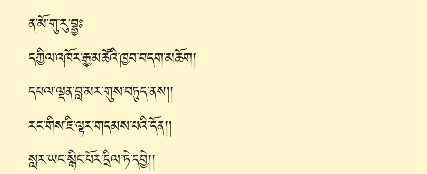
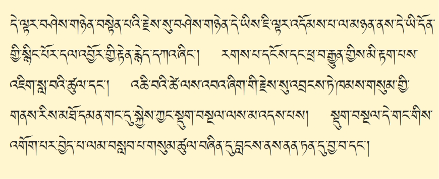
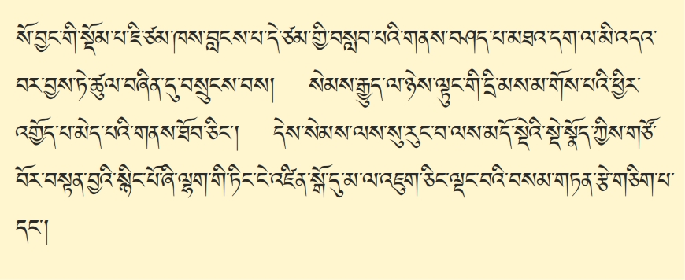
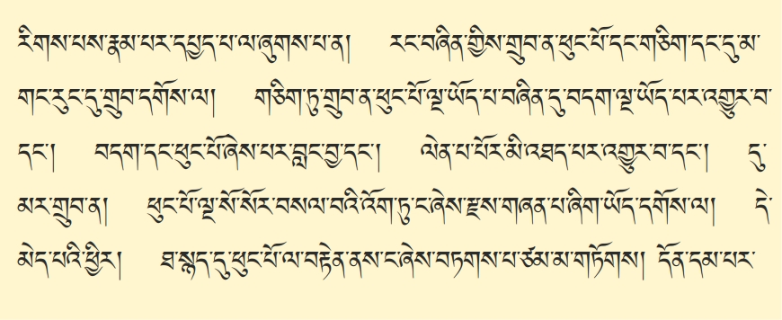

་་་༺རྗེ་བཙུན་བླ་མ་རྣམས་དང་། མདོ་རྒྱུད་མན་ངག་རབ་ཏུ་དྲི་མ་མེད་པ་༻རྣམས་ལ་སྒོ་གསུམ་གུས་པ་ཆེན་པོས་ལུས་རབ་ཏུ་གུས་པས་ཕྱག་འཚལ་ཞིང་སྐྱབས་སུ་མཆིའོ། བྱིན་གྱིས་བརླབ་པར་མཛད་དུ་གསོལ། གང་གི་ཞལ་བཟང་ལྟ་བས་མི་ངོམས་གེ་སར་འཛུམ་པའི་མདངས་བཀྲ་ཞིང༌། །མཚན་དཔེའི་གཟི་འོད་ཟེའུ་འབྲུ་གསལ་བས་འགྲོ་ཀུན་མིག་གི་བདུད་རྩིར་གྱུར། །ཐུགས་རྗེའི་འདབ་མ་ཀུན་ནས་དཀྱུས་རིང་འཇིག་རྟེན་གསུམ་གྱི་ཁོངས་ཁྱབ་པའི། །ཐུབ་དབང་པདྨ་དཀར་པོའི་ཞབས་པད་དེ་རིང་བདག་བློའི་ཡིད་མཚོར་སྐྱོངས། །ཨོ་རྒྱན་མཚོ་གླིང་པདྨའི་སྡོང་པོ་ལ། རྒྱལ་བའི་རྣམ་འཕྲུལ་རང་བཞིན་ལྷུན་གྱིས་གྲུབ། མཚན་རྫོགས་དཔེ་བྱད་ཡོན་ཏན་ཚོགས་འབར་བའི། །པདྨ་འབྱུང་གནས་བདག་བློའི་པད་མཚོར་རོལ། །སྔ་འགྱུར་བཀའ་གཏེར་བཀའ་གདམས་ལམ་འབྲས་དང་། །མར་ཤངས་བཀའ་བརྒྱུད་ཞི་གཅོད་སྦྱོར་བ་དྲུག །ཨོ་རྒྱན་བསྙེན་སྒྲུབ་ཟབ་མོའི་ཆོས་དྲུག་སོགས། །སྒྲུབ་བརྒྱུད་ཤིང་རྟ་བརྒྱད་ལ་གུས་ཕྱག་འཚལ། །རྒྱལ་ཀུན་ཡེ་ཤེས་སྐུ་ཅན་འཇམ་དཔལ་དབྱངས། །མཚུངས་མེད་ཚད་ལས་འདས་པའི༺་་་་། འཁྲུལ་ཞིག་གྲུབ་པ་དབང་པོ་རྡོ་རྗེ་འཛིན༻། །གཙུག་ལག་སྨྲ་བའི་ཉི་མར་གསོལ་བ་འདེབས། །བཀའ་བབས་བདུན་ལྡན་འཇམ་དབྱངས་མཁྱེན་བརྩེའི་གཏེར། །འཇམ་མགོན་ཀོང་སྤྲུལ་བློ་གྲོས་མཐའ་ཡས་ཞབས། །ཟབ་གཏེར་༺གསང་སྔགས་༻རྩོལ་མཛད་མཆོག་གྱུར་གླིང་། །བསྟན་པའི་སྒྲོན་མེ་གསུམ་ལ་གསོལ་བ་འདེབས། །འཇམ་པའི་དཔལ་གྱུར་མི་ཕམ་རྣམ་པར་རྒྱལ། །དཀྱིལ་འཁོར་ཀུན་གྱི་ཁྱབ་བདག་བི་ཛ་ཡ། །འོད་གསལ་རྡོ་རྗེ་ཆོས་ཀྱི་བློ་གྲོས་ཚུལ། །བཀའ་དྲིན་མཉམ་མེད་གསུམ་ལ་གསོལ་བ་འདེབས། །སྤྱི་དང་འདྲེན་དང་དབང་བསྐུར་ཉམས་ཆག་སྦྱངས། །མན་ངག་སྟོན࿏་དང࿏་ཤེས་རྒྱུད་འགྲོལ་མཛད་པའི། །རྩ་བའི་བླ་མ་རྣམས་ལ་གསོལ་བ་འདེབས། །ཐུགས་ཡིད་གཅིག་ཏུ་འདྲེས་པར་བྱིན་གྱིས་རློབས། །ཡོན་ཏན་རང་བཞིན་བདེ་ལེགས་ཕུན་སུམ་ཚོགས། །བཀྲ་ཤིས་མཆོག་གི་ལྷ་ཡི་ལྷར་གྱུར་པ། ཐུགས་རྗེའི་རང་བཞིན་ཕན་བདེའི་སྤྲིན་ཚོགས་ཅན། །དཔལ་མགོན་བླ་མའི་ཚོགས་ལ་གུས་ཕྱག་འཚལ། །གང་ཞིག་གསེར་མཆོག་རང་བཞིན་རི་རབ་ལ་གནས་མནྡྷ་ར་དང་ལྷར་བཅས་གནོད་སྦྱིན་དང་། གདེངས་ཀ་ནོར་བུའི་འོད་ཀྱིས་མུན࿏་པ࿏་སེལ࿏་མཛད࿏་ས་འོག་གནས་པའི་ཀླུ་རྣམས་གང་ཡིན་དང་། གངས་ཅན་རིར་ནི་དཔལ་གྱིས་རོལ་ཞིང་རབ་ཏུ་དགའ་བའི་རིག་པ་འཛིན་པ་གང་ཡིན࿏་དང࿏་ དེ་དག་ཐམས་ཅད་ཐར་པ་དམ་པའི་སྒོར་གྱུར་ཐུབ་པའི་གསུང་མཉན་ཕྱིར་ནི་འདིར་གཤེགས་ཤིག །ལྷ་ཡི་སྐད་དང་ཀླུ་དང་གནོད་སྦྱིན་སྐད། །གྲུལ་བུམ་དག་དང་མི་ཡི་སྐད་རྣམས་དང་། །འགྲོ་བ་ཀུན་གྱི་སྒྲ་སྐད࿏་ཇི་ཙམ་པར༑ །ཐམས་ཅད་སྐད་དུ་བདག་གིས་ཆོས་བསྟན་ཏོ། །འདི་ལྟར། ༺སྟོང་སྙམ། སྟོང་ཉིད་༻ཀྱིས་གར་ཁྱབ་སེམས་ཅན་གྱིས་ཁྱབ། སེམས་ཅན་གྱིས་གར་ཁྱབ་ཐམས་ཅད་ལས་ཉོན་སྡུག་བསྔལ་གྱིས་ཁྱབ། ལས་ཉོན་སྡུག་བསྔལ་གྱིས་ཁྱབ་པའི་སེམས་ཅན་དེ་དག་ཐམས་ཅད། འོ་ཅག࿏་རྣམས་ཀྱི་ཕ་དང་མར་མ་གྱུར་པ་གཅིག་ཀྱང་མེད་པས། ཕ་མ་བྱེད་པའི་དུས་སུ། ད་ལྟ་རྩ་བའི་ཕ་མ་བཞིན། ཟས་ཀྱི་ཕུད་བྱིན། གོས་ཀྱི་རྩེ་གཡོགས། ཤིན་ཏུ་བྱམས་པའི་སེམས་ཀྱིས་བསྐྱེད་བསྲིངས་བའི་དྲིན་ཆེན་ཤ་སྟག་ཏུ་གྱུར་བ་ཡིན། དེ་ཐམས་ཅད་འདོད་པ་བདེ་བ་འདོད་ཀྱང་། བདེ་བའི་རྒྱུ་ཡང་དག་པའི་ཆོས་ནི་སྒྲུབ་མི་ཤེས། འདོད་པ་སྡུག་བསྔལ་མི་འདོད་ཀྱང་། སྡིག་པ་མི་དགེ་བ་འབའ་ཞིག་ལ་སྤྱོད་པས། ཞེ་འདོད་དང་ལག་ལེན་ཕྱིན་ཅི་ལོག་ཏུ་སོང࿏་ནས࿏། ༺རྨི་ལམ་མཚུངས་པ། མ་སོགས་གྱུར་བ་༻སེམས་ཅན་དེ་དག་ཐམས་ཅད࿏། མི་ལུས་རིན་པོ་ཆེ་ཐོབ། མཚན་ཉིད་དང་ལྡན་པའི་བླ་མ་དགེ་བའི་བཤེས་གཉེན་གྱིས་རྗེས་སུ་བཟུང་། བླ་མའི་གདམས་པ་ཚུལ་བཞིན་དུ་ཐོབ་པའི་སྐབས་འདིར། ལུང་མ་བསྟན་༺ལས་དང་། གཏན་བདེ་གཉིས་༻ཀྱི་སོ་མཚམས་སུ། སླེབས་པ་ཡིན་པས། འཛིན་པ་༺གཏད་མེད་༻ཀྱི་སྒོ་ནས། ལུས་རྟེན་དེ་ཉིད་༺ཅི་བརྟེན་ནས།༻ ཐོབ་པ་པོར་༺ཅུང་༻དམ་པའི་ཆོས་ཡང་དག་པ་ཞིག་བསྒྲུབ་པར་བྱ། སྒྲུབ་པ་དེ་ཡང་། རང་ཉིད་གཅིག་པུའི་དོན་ནི་མ་ཡིན་པ། ནམ་མཁའ་དང་མཉམ་པའི་སེམས་ཅན་ཐམས་ཅད་རྣམ་མཁྱེན་གཏན་བདེའི་ས་ལ་འགོད་པར་ནུས࿏་པ། འཕགས་པ་འཇམ་དཔལ་དབྱངས་དང་། བྱང་ཆུབ་སེམས་དཔའ་སྤྱན་རས་གཟིགས་ལ་སོགས་པའི་སྤྱོད་པ་རྒྱ་མཚོ་ལྟ་བུ་ལ་བསླབ་པར་བགྱིའོ་སྙམ་པ་བསམ་པ་རྒྱ་ཆེ་བ་བྱང་ཆུབ་མཆོག་ཏུ་ཐུགས་སྐྱེད་པ་དང་། ཆོས་གསན་པའི་ཀུན་ཏུ་སྤྱོད་པ་མདོ་རྒྱུད་བསྟན་བཅོས་དྲི་མ་མེད་པ་རྣམས་ནས་ཇི་སྐད་གསུངས་པ་བཞིན་དུ་ལེགས་པར་གསལ་བཏབ་ཏེ་གསན་པར་གནང་བར་ཞུ།

གང་གསན་བྱའི་ཆོས་ཀྱི་རིམ་པ་དེ་ལ། དེ་ནས། སྤོང་བ་བསམ་གཏན་པ་ལ་གདམས་པའི་གཏམ་ལམ་རིམ་བདུད་རྩི་སྙིང་པོ་ཞེས་བྱ་བ། ཐམས་ཅད་མཁྱེན་པ་འཇམ་དབྱངས་མཁྱེན་བརྩེ་དབང་པོས་མཛད་པར་གྱུར་བ་དེ་ཉིད་ཀྱི་འགྲེལ་བ་ཚིག་དོན་རབ་གསལ་ཞེས་བྱ་བ་རྩ་འགྲེལ་སྦྲགས་ཏེ་འབུལ་བར་བྱེད་པ་དེ་ལ། སྤྱིར་བདེ་བཞིན་གཤེགས་པ་རྫོགས་པའི་སངས་རྒྱས་ཀྱི་ལུང་དང་རྟོགས་པའི་བསྟན་པ་དེ་ཉིད་ཚུལ་བཞིན་དུ་འཛིན་པར་བྱེད་པ་ལ། ཀློག་པ་ཐོས་བསམ་དང་། སྤོང་བ་བསམ་གཏན་གྱི་སྡེ་གཉིས་སུ་ཡོད་པ་ལས། སྐབས་སུ་བབས་པ་དེ། སྙིགས་མ་ལྔ་ཡི་དུས་ཀྱི་སེམས་ཅན་ཐམས་ཅད་ཚེ་ཐུང་། བློ་གྲོས་དབུལ། ཤེས་བྱ་རྒྱ་ཆེན་པོ་ལ་བསམ་པ་མི་ནུས་པ་ཡི་གང་ཟག་ཐམས་ཅད་ཆོས་ཀྱི་གནད། སྙིང་པོ། གཅིག་ཏུ་བསྡུས་ཏེ་ཉམས་སུ་ལེན་ནས། སྤོང་བ་བསམ་གཏན་གྱི་ཏིང་ངེ་འཛིན་ལ་མཉམ་པར་བཞག་ན་ཁེ་ཆེ་བ་ཡིན་པས། དེ་དག་ལ་ཕན་པར་བྱེད་པའི་གདམས་པའི་གཏམ་སྐྱེས་བུ་གསུམ་གྱི་ལམ་གྱི་རིམ་པ་ཐམས་ཅད་མདོར་བསྡུས་པ་བདུད་རྩི་སྙིང་པོ་ཞེས་བྱ་བ་དེ་ནི། སླར་ཡང་འགྲེལ་བའི་སྒོ་ནས་གསལ་བར་མཛད་པ་འདི་ཉིད་འཆད་པའི་སྐབས་སུ་བབས་པ་ཡིན་ལ།
དེ་ལ། དེ་ག་འགྲེལ་བ་གྱི་མཆོད་པར་བརྗོད་པ་ནི། ན་མོ་གུ་རུ་བྷྱཿདཀྱིལ་འཁོར་རྒྱ་མཚོའི་ཁྱབ་བདག་མཆོག ། དཔལ་ལྡན་བླ་མར་གུས་བཏུད་ནས། ། རང་གིས་ཇི་ལྟར་གདམས་པའི་དོན། ། སླར་ཡང་སྙིང་པོར་དྲིལ་ཏེ་དབྱེ། །ཞེས་པ་སྟེ། བླ་མ་སངས་རྒྱས་བླ་མ་ཆོས། །དེ་བཞིན་བླ་མ་དགེ་འདུན་ཏེ། །ཀུན་གྱི་བྱེད་པོ་བླ་མ་ཡིན། །བླ་མ་དཔལ་ལྡན་རྡོ་རྗེ་འཆང་། །ཞེས་གསུངས་པ་ལྟར་ཕྱོགས་བཅུ་དུས་གསུམ་གྱི་བདེ་བཞིན་གཤེགས་པ་ཐམས་ཅད་ཀྱི་ཡེ་ཤེས་གཅིག་ཏུ་བསྡུས་པའི་བདག་ཉིད། དཔལ་མགོན་བླ་མ་དབྱེར་མི་ཕྱེད་མི་གསལ་ཅན། སངས་རྒྱས་ཀྱི་ཞལ་མཐོང་བ་དང་། ཆོས་ཀྱི་བདུད་རྩི་སྤྱོད་པ་ལ་སྐལ་པ་དམན་པ་ཐམས་ཅད་ལ། དགེ་བའི་བཤེས་གཉེན་གྱི་གཟུགས་སུ་སྤྲུལ་ནས། སངས་རྒྱས་དང་བྱང་ཆུབ་སེམས་དཔའ་ཐམས་ཅད་ཀྱིས་སྐྱེ་འགྲོ་ཐམས་ཅད་ཐར་པའི་ལམ་དུ་བཀོད་པ་ལུང་བསྟན་པ་ལྟ་བུ། དེ་ནས། བླ་མའི་ཚུལ་དུ་བྱོན་པ། མཚན་ཉིད་དང་ལྡན་པའི་བླ་མ་དགེ་བའི་བཤེས་གཉེན་དེ་ནི། དེ་ནས། ཕྱི་ལྟར་དུ་བྱས་ན། དཀོན་མཆོག་གསུམ་ཀུན་འདུས། ནང་ལྟར་དུ་རྩ་གསུམ་ཀུན་འདུས། གསང་བ་ལྟར་དུ་སྐུ་གསུམ་ཀུན་འདུས་ཀྱི་བདག་ཉིད། རིགས་དང་དཀྱིལ་འཁོར་མ་ལུས་པ་ཐམས་ཅད། ཕར་འཕྲོ་བ་དང་། ཚུར་བསྡུ་བ། བླ་མའི་ཐུགས་བདེ་སྟོང་ཡེ་ཤེས་ཆེན་པོའི་རོལ་པ་གཅིག་འདི། གཞན་དུ་མ་ཡིན་པ་ཡིན་པའི་ཆ་ནས། དེ་ནས། དཀྱིལ་འཁོར་རྒྱ་མཚོའི་ཁྱབ་བདག་དེ། འདི་ལྟ་བུའི་དཔལ་ལྡན་བླ་མ་དེ་ཉིད་ལ། དཔལ་དང་ལྡན། ཞེས་པ་༺འདི་ཉིད་༻དེ། དབང་ཕུན་སུམ་ཚོགས་པ་དང་རྟོགས་པ࿏་ཕུན་སུམ་ཚོགས་པའི་ཡོན་ཏན་ཕུན་སུམ་ཚོགས་པ་དང་ལྡན་པས། ངེས་པའི་དོན་དུ་ཡོན་ཏན་ཐམས་ཅད་རྒྱལ་བ་སྲས་དང་བཅས་པ་དང་ཁྱད་པར་མེད་པ། ཟག་པ་མེད་པའི་འབྲས་བུའི་ཡོན་ཏན་ཐམས་ཅད་ཡོངས་སུ་རྫོགས་པ། བཀའ་དྲིན་གྱི་ངོས་ནས་བྱས་ན་སངས་རྒྱས་ལས་ཀྱང་བླ་མར་ཆེ་བ་ཡིན་པ་དེ་ལ། གུས་པས་འདུད་པར་བྱས་ན། གཞན་ཐམས་ཅད་ལའང་མཆོག་གི་མཆོད་པར་གྱུར་བ་ཡིན་པས་དེ་ལ་གུས་བཏུད་ནས། དེ་ནས། སྔར། རྩ་བའི་ས་བཅད། ལམ་རིམ་བདུད་རྩི་སྙིང་པོ་ཞེས་བྱ་བ་དེ་ཉིད་སྐུལ་བ་པོས་བསྐུལ་ཏེ། དེ་ནས། མཁྱེན་བརྩེ་དབང་པོ་རང་ཉིད་ཀྱིས་ཇི་ལྟར་མཛད་བཞིན་གདམས་པའི་དོན་ཉིད་སླར་ཡང་དེ། ཚིག་དང་དོན་སྙིང་པོར་དྲིལ་ཏེ་འགྲེལ་བ་ཆུང་ངུའི་ཚུལ་གྱིས་དབྱེ་བར་བྱའོ། ཞེས་མཆོད་པར་བརྗོད་པ་དང་བརྩམ་པར་དམ་བཅའ་བའོ།

དེ་ནས་བསྟན་བཅོས་འདི་ལ་གསུམ་སྟེ། རྩོམ་པ་ལ་འཇུག་པ་ཀླད་ཀྱི་དོན། བརྩམ་པར་བྱ་བ་གཞུང་གི་དོན། རྩོམ་པར་མཐར་ཕྱིན་པ་མཇུག་གི་དོན་དང་རྣམ་པ་གསུམ་དུ་ཡོད་པ་ལས། དང་པོ་བསྟན་བཅོས་རྩོམ་པ་ལ་འཇུག་པའི་ཐོག་མར་དགེ་བ་ཀླད་ཀྱི་དོན་བཤད་པ་ལ་གཉིས་ཏེ། མཆོད་པར་བརྗོད་པ་དང་། རྩོམ་པར་དམ་བཅའ་བ་གཉིས་སུ་ཡོད་པའི་ནང་ནས། དང་པོ་མཆོད་པར་བརྗོད་པ་དེ་ཉིད་རེད་དུས། སྲས་བཅས་རྒྱལ་བའི་ཡེ་ཤེས་སྐུ། །བཀའ་དྲིན་མཉམ་མེད་བླ་མ་ལ། །ཞེས་ལ࿏་སོགས་པས࿏་མཆོད་པར་མཛད་པ་སྟེ།

དེ་ཡང་། སྲས་ཟེར་དུས་བདེ་བཞིན་གཤེགས་པ་རྫོགས་པའི་སངས་རྒྱས་བཅོམ་ལྡན་འདས་དཔལ་མཉམ་མེད་ཤཱཀྱའི་རྒྱལ་པོ་ལྟ་བུ་ཞིག་ཡིན་ན། སྐུ་ཡི་སྲས་དགྲ་ཅན་འཛིན། གསུང་གི་སྲས་ཉན་རང་འཕགས་པའི་ཚོགས་ཐམས་ཅད་དང་། ཐུགས་ཀྱི་སྲས་བྱང་ཆུབ་སེམས་དཔའ་ཡིན་པ། དེ་ནས། སྲས་ཐམས་ཅད་ཀྱི་ནས་ནས་མཆོག་ཏུ་གྱུར་བ་གང་ཡིན་ན། སངས་རྒྱས་ཀྱི་གདུང་འཛིན་ཞིང་། དཀོན་མཆོག་གསུམ་གྱི་མཛད་པ་འཕྲིན་ལས་རྒྱུན་མི་ཆད་པ་དང་། ཐེག་པ་ཆེན་པོའི་སྤྱོད་པ་རྒྱ་མཚོ་ལྟ་བུའི་སངས་རྒྱས་ཀྱི་མཛད་པ་ལ་སློབ་པར་བྱེད་པའི་སྲས་ཀྱི་མཆོག་ཏུ་གྱུར་བ་ནི་བྱང་ཆུབ་སེམས་དཔའ་རྣམས་ཡིན་ལ། དེ་ལྟ་བུའི་བྱང་ཆུབ་སེམས་དཔའ་དེ་དང་བཅས་པ་སྟེ། ཕྱོགས་བཅུའི་ཞིང་ཁམས་རབ་འབྱམས་ན་རྒྱལ་བ་ཐམས་ཅད། རྡུལ་གཅིག་གི་སྟེང་ན་རྡུལ་རྙེད་ལྟར་དུ་བཞུགས་ཡོད་པ་དེ་དག࿏། སྲས་དང་བཅས་པ་ཐམས་ཅད་ཀྱི་ཐུགས། ཇི་ལྟ་ཇི་བཞིན་མཁྱེན་པའི་ཡེ་ཤེས་དང་། མཁའ་ཁྱབ་ཀྱི་འགྲོ་བ་ཐམས་ཅད་ལ། དམིགས་མེད་བརྩེ་བའི་ཐུགས་རྗེ་ཆེན་པོ་དང་། སེམས་ཅན་ཐམས་ཅད་ཀྱི་དོན་ལ། ཐར་པའི་ལམ་དུ་སྐུལ་པར་འགྱུར་བ་དེ་ལ། དེ་བཞིན་གཤེགས་པ་ནི། སྟོབས་བཅུ། ༺དབང་བཅུ།༻མི་འཇིགས་པ་བཞི་ལ་མངའ་རྙེད་པས་ན། ༼སེམས་ཅན་གྱི་༽ སངས་རྒྱས་ཀྱིས་སེམས་ཅན་གྱི་དོན་མཛད་པ་ལྟ་བུ་སུས་ཀྱང་མི་ནུས་པས། ནུས་པ་ཕུལ་དུ་ཕྱིན་པ་ཡིན། དེ་ལྟ་བུའི་མཁྱེན་བརྩེ་ནུས་གསུམ་གྱི་ཡེ་ཤེས་འདི་ཉིད་གཅིག་ཏུ་བསྡུས་པའི་གོང་བུ་ལྟ་བུ་གང་རེད་ཟེར་ན། དེ། ཕྱོགས་བཅུ་རྒྱལ་བ་སྲས་དང་བཅས་པ་ཡི་དོན་དམ་ཡེ་ཤེས་ཆོས་ཀྱི་སྐུ་བསམ་གྱིས་མི་ཁྱབ་པའི་ངོ་བོ། དེ་ཡང་། ཆོས་ཀྱི་སྐུ། དེ་བཞིན་རང་ངོས་ན། ཁམས་གསུམ་འཁོར་བའི་ས་བོན་དྲུང་ནས་སྤོང་ཟིན་པ་ཡིན་ན་ཡང་། ཆོས་ཀྱི་སྐུ་ཡི། དེ་ཡི་རང་བཞིན་ནམ། དམིགས་མེད་ཐུགས་རྗེ་ཆེན་པོ། གདུལ་བྱ་འདི་རུ་གྱི་ཆེད་དུ་མཐོང་བར་གྱུར་བ་ཡིན་པའི་ཕྱིར་ན། དུས་ངན་སྙིགས་མ་ལྔ། སེམས་ཅན་རྣམས་ཉོན་མོངས་པ་ཇི་ཙམ་རགས། བློ་གྲོས་ཇི་ཙམ་༺དཀའ།༻བློ་རྒྱུད་ཆོས་ལས་ཇི་ཙམ་དུ་འགྲོ་དཀའ་ན། སངས་རྒྱས་ཀྱི་ཐུགས་རྗེ་དང་འཕྲིན་ལས་དེ་ཙམ་གྱིས་མྱུར་དུ་གདུལ་བྱའི་ཡུལ་ལ་ལྷག་པར་མཛད་པ་ཆོས་ཉིད་རེད་དུས། དེ་ནས། འགྲོ་བ་སེམས་ཅན་རྣམས་ཐམས་ཅད་ཐར་པའི་ལམ་དུ། འགྲོ་བར་བྱ་བའི་ཕྱིར་དུ། དགེ་བའི་བཤེས་གཉེན་དང་ཁྱིམ་པ་དང་། ཐ་ན་བྱ་དང་རིག་དྭགས་དང་། དེ་ནས། དག་པའི་བྱང་ཆུབ་སེམས་དཔའ་རྣམས་ལ་ནམ་མཁའ་དང་། ཤིང་ལས་ཀྱང་ཆོས་ཀྱི་སྒྲ་རྒྱུན་མི་ཆད་པ་སྣང་བ་དེ་ལྟ་བུའི་རང་རང་གི་རིགས་དང་མཐུན་པའི་སྐུར་སྣང་བར་གྱུར་བས།

དེ་ཐམས་ཅད་ཀྱིས། ཆོས་བསྟན་པ་དེ་ཐམས་ཅད་མདོར་བསྡུ་ན། འགོག་པ་དང་ལམ་གྱི་བདེན་པ་གཉིས་སུ་བསྡུ་གི་རེད། དེ། ༼ལམ་༽ འགོག་པ་ཟེར་མཁན་འདི་གང་རེད་ཟེར་ན། སེམས་ཅན་ཐམས་ཅད་ཁམས་གསུམ་འཁོར་བར་འཁྱམ་བྱེད་ཀྱི་རྩ་བ་ས་བོན་ལྟ་བུ་འདི། གང་རེད་ཟེར་ན། ལས་དང་ཉོན་མོངས་པ་རེད་དུས། དེ་ནས། ལས་ཉོན་གྱི་རྒྱུ། ཁམས་གསུམ་འཁོར་བའི་ས་བོན་འདི་ཕར࿏་སྤོང་ཟིན་པ་དེ་ལ࿏་འགོག་པ་ཟེར། དེ་ནས། འགོག་པའི་གོ་འཕང་འདི་མངོན་སུམ་དུ་ཐོབ་བྱེད་འདི་ལ། དེ་ནས། སྐྱེས་བུ་གསུམ་གྱི་ལམ་གྱི་རིམ་པ་རྒྱ་ཆེན་པོ་ཡོད་པ་དེ། དགེ་བའི་བཤེས་གཉེན་རྣམས་ཀྱིས། གསུང་གིས་དངོས་སུ་འདོམས་པར་མཛད་པ་ཡིན་པས་ན། དགེ་བའི་བཤེས་གཉེན་གི࿏་གསུང་འདི། ལམ་གྱི་བདེན་པ་ཡིན་པས། དེ་ཡིས། ལམ་གྱི་བདེན་པ་འདི་ཚུལ་བཞིན་དུ། དགེ་བའི་བཤེས་གཉེན་གྱིས་བསྟན་པ་བཞིན་དུ་ཉམས་སུ་བླང་། ཚུལ་གནས་ཐོས་དང࿏་བསམ་༼སྒོམ་༽ ལྡན࿏་པས࿏། །སྒོམ་པ་ལ་ནི་རབ་ཏུ་སྦྱོར། །ཞེས་པ་ལྟར་དུ། ཐོས་བསམ་སྒོམ་གསུམ་ཞིག་བྱས་ན། དེ་ནས། སྐྱེས་བུ་གསུམ་གྱི་ལམ་གྱི་འབྲས་བུ་ཇི་ལྟ་བ་བཞིན་རང་གི་རྒྱུད་ལ་རང་བཞིན་གྱིས་སྐྱེ་༺རྒྱུ་༻རེད། མཐར་ཐུག་འགོག་བདེན་གྱི་འབྲས་བུ་ལ་སྦྱོར་བར་བྱེད་པ་ཡིན་པའི་ཕྱིར་ན། དེ་ནས། རྩ་བའི་བླ་མ་འདི་ཉིད་སངས་རྒྱས་ལས་ཀྱང་བཀའ་དྲིན་གྱི་སྒོ་ནས་ཆེས་ཆེར་ལྷག་པས་ན། དེ་ནས། ཕྱོགས་བཅུ་དུས་བཞི་ཆོས་ཀྱི་དབྱིངས་རྒྱས་པར་བཞུགས་པའི་རྒྱལ་བའི་སྲས་དང་བཅས་པ་ལས་བླ་མ་ལས་ལྷག་པ་གཅིག་ཀྱང་ཡོད་རྒྱུ་མ་རེད་དུས། དེས་ན། གང་དང་མཉམ་པ་འགའ་ཡང་མེད་པའི་ཕྱིར་ན། སྤྱིར་དུ། བླ་མ་ཐམས་ཅད་དང་། ལྷག་པར་དུ་རང་ཉིད་ལ་ཐར་པའི་ལམ་སྟོན་པར་བྱེད་པ་དང་། འཁོར་བ་ལས་ངེས་བྱུང་། གཞན་ཕན་བྱང་ཆུབ་ཀྱི་སེམས། དབང་བཞི་པ་དོན་གྱི་ཡེ་ཤེས་སྩོལ་བར་མཛད་པ་དེ་ཐུན་མོང་མ་ཡིན་པ་རྩ་བའི་བླ་མ་རེད་དུས། འདི་ཉིད་སངས་རྒྱས་ཀུན་ལས་ཀྱང་ལྷག་པའི། དེ་ནས། བླ་མ་རྣམས་ལ། དེ་ནས། ཁ་སྙན་པོ་གི་སྒོ་ནས་ཁ་ཙམ་ཚིག་ཙམ་གྱིས་གསོལ་བ་འདེབས་སོང་བ࿏་འདིས་ཞུས་པ་མ་ཡིན་པ། སྙིང་ནས་སངས་རྒྱས་དངོས་ལས་ཀྱང་ལྷག་པའི་བཀའ་དྲིན་ཆེན་པོའི་ཡིད་ཆེས་ཀྱིས། དྲན་པའི་སྒོ་ནས་ཕྱག་འཚལ་བ་དེ་ཉིད་ལ། དེ་ནས། ཕྱག་འཚལ་བ་རབ་ཀྱི་དབང་དུ་བཏང་ན། ཕྱག་འཚལ་བྱ་དང་འཚལ་བྱེད་གཉིས་སུ་མེད་པ། ཆོས་ཉིད་མཉམ་པ་ཉིད་ཀྱི་སྒོ་ནས་ལྟ་བ་ཡི་ཕྱག་འཚལ་བ་དང་། འབྲིང་གིས་ཡིན་ན་༺དཔག་མེད་བཞི་༻དང་ལྡན་པའི་སྒོ་ནས་ཕྱག་འཚལ་བ་དང་། ཐ་མ་ཡིན་ན་མོས་གུས་ཡིད་ཆེས་ཀྱི་དད་པ་དང་ལྡན་པའི་སྒོ་ནས་ཕྱག་འཚལ་བ་རྣམ་པ་གསུམ་དུ་ཡོད་ནའང་། འདིར་བསྟན་བཅོས་མཛད་པ་པོ་འཕགས་ལམ་ཆོས་ཉིད་ཀྱི་བདེན་པ་མངོན་སུམ་དུ་གཟིགས་པ་རེད་དུས། དབང་པོ་རབ་ཀྱི་ཕྱག་འཚལ་བའི་ཁོངས་སུ་ཕྱི་མ་གཉིས་ཀྱང་རང་ཤུགས་ཀྱིས་བསྡུས࿏་པ࿏་རེད་དུས། དཱ། བདག་ཅག་ཐམས་ཅད་ཀྱིས་དེའི་རྗེས་སུ་སློབ་པའི་ཚུལ་གྱིས་ཕྱག་འཚལ་ལོ་ཞེས་པའི་སྒོ་ནས་ཚིག་གི། འདི། བསྟན་བཅོས་རྩོམ་པ་པོས་ཇི་ལྟར་ཕྱག་མཛད་པ་བཞིན་དུ་བདག་གིས་འཚལ་བ་ཡིན་བསམ་པ་བྱས་ན་ཆོག་རྒྱུ་རེད། དེ་ནས། ཕྱག་འཚལ་ནས་ཞེས། ནས་ཀྱི་སྒྲ་བསྟན་པ་དེ། བརྩམ་པར་དམ་བཅའ་བ། ༼ལྷག་མས་༽ཚིག་ལྷག་མ་འདྲེན་པའི་ཚིག་སྟེ། ཕྱག་འཚལ་ནས་བསྟན་བཅོས་དེ་ཉིད་བཤད་པར་བྱའོ། ཞེས་པའི་༺དོན། གཉིས་པའི་གཏམ་༻བརྩམ་པར་དམ་བཅའ་བ་དེ་ནི།

ཟབ་མོའི་གདམས་པ་ཅུང་ཟད་དབྱེ། ཞེས་པ་སྟེ། སྤྱིར། ཆོས་རྣམས་ཐམས་ཅད་བཀའ་དང་བསྟན་བཅོས་ཏེ། །ལེགས་པར་གསུངས་དང་དེའི་དགོངས་འགྲེལ་བ། །དེའི་དབང་གིས་ཤཱཀྱའི་བསྟན་པ་ནི། །འཇིག་རྟེན་ཁམས་འདིར་ཡུན་རིང་གནས་པར་གྱུར། །ཞེས་པ་ལྟར་དུ། སྟོན་པ་སངས་རྒྱས་བཅོམ་ལྡན་འདས་དག་གིས། ཕུན་སུམ་ཚོགས་པ་ལྔ་དང་ལྡན་པའི་སྒོ་ནས་ཆོས་ཀྱི་འཁོར་ལོ་སྐོར་བ་དང་། བསྟན་བཅོས། མཁས་པའི་གང་ཟག་རྣམས་ཀྱིས་རྩིས་མགོ་ཡན་ལག་ལྔ་ཡིས་སྒོ࿏་ཡིས࿏་བསྟན་པར་གྱུར། ལམ་ཐམས་ཅད་རྒྱ་ཆེན་པོ་བསམ་གྱིས་མི་ཁྱབ་པ་ཡོད་རྒྱུ་རེད་དུས། ཡོད་ན་ཡང་། སྙིགས་མའི་སེམས་ཅན་ཐམས་ཅད་བློ་བརྟུལ། བརྩོན་འགྲུས་ཞན། དབང་པོ་དམན་པ་རེད་སོང་དུས། གདམས་ངག་ཐམས་ཅད་ཚིག་གཅིག་ཏུ་བསྡུས་ན། རྒྱུད་ལུང་མན་ངག་རྒྱ་ཆེན་པོ་ལས་ཀྱང་། བླ་མའི་མན་ངག་གིས་ཐར་པ་དང་ཐམས་ཅད་མཁྱེན་པའི་ལམ་ཐོབ་པ་ལ་ཤིན་ཏུ་ཟབ་པར་གསུངས་པ་ལྟར། དེ་རེད་དུས་ན། དེ་ནས། ལམ་གྱི་ཆིངས་པོ་མདོར་བསྡུས་པ་ཞིག མདོར་བསྡུས་པ་དེ་ཉིད་ལའང་། རྒྱུ་མཚན་ཉིད་ཐེག་པ་དང་། འབྲས་བུ་གསང་སྔགས་རྡོ་རྗེའི་ཐེག་པ་རྣམ་པ་གཉིས་ཀ་ཡི་བསྟན་བྱའི་ལམ་གྱི་སྙིང་པོ་ཐམས་ཅད་དམ་ཆོས་འོ་མ་བསྲུབས་པ་ལས། །མར་གྱི་སྙིང་ཁུ་འབྱུང་བ་ཡིན། །ཞེས་པ་ལྟར་དུ་ཕ་རོལ་ཏུ་ཕྱིན་པ་རྒྱུ་མཚན་ཉིད་ཐེག་པའི་ལམ་གྱི་ཡ་གྱལ་ཟབ་མོ་སྟོང་པ་ཉིད་དང་། གསང་སྔགས་རྡོ་རྗེ་ཐེག་པའི་ལམ་གྱི་བསྐྱེད་རྫོགས་ཀྱི་ཐབས་ཟབ་མོ་དག་བརྗོད་གཞི་གཙོ་བོར་བྱས་ནས། ཚིག་ཤིན་ཏུ་ཉུང་ཉུང་ལ། དོན་དུ་ཐེག་པ་རིམ་པ་དགུའི་ལམ་གྱི་བཅུད་མ་ལུས་པ་༺དག་ནི།༻ཐམས་ཅད་གཅིག་ཏུ་འདྲིལ་བའི། བློ་དམན་གྱི་གང་ཟག་གིས་འཛིན་བདེ་བའི་ཕྱིར་དུ། སྙིང་པོ་འདྲིལ་བའི་ཚུལ་གྱིས། གདམས་པའི་གནད་འགའ་ཞིག་ཅུང་ཟད་དབྱེ་བར་བྱའོ། ཞེས། དེ་བརྩམ་པར་དམ་བཅའ་བའི་དོན་ཡིན་ནོ།
གཉིས་པ་གཞུང་གི་དོན་དངོས་ལ་གཉིས་ཏེ། རྒྱས་པར་བཤད་པ་དང་། མདོར་བསྡུས་པའོ། དང་པོ་རྒྱས་པར་བཤད་པ་དེ་ལའང་། ཐུན་མོང་ཕ་རོལ་ཕྱིན་པའི་ལམ་བཤད་པ་དང་། ཁྱད་པར་གསང་སྔགས་རྡོ་རྗེའི་ཐེག་པའི་ལམ་ལ་ཇི་ལྟར་སློབ་པའི་ཚུལ་བཤད་པ་གཉིས་ཡོད་པའི་ནང་ནས། དང་པོ་ཕ་རོལ་ཏུ་ཕྱིན་པའི་ལམ་བཤད་པ་དེ་ལའང་། དང་པོ࿏་ལམ་གྱི་རྩ་བ་བཤེས་གཉེན་བསྟེན་ཚུལ་དང་། བསྟེན་ནས་ཇི་ལྟར་སྦྱོར་བའི་ཚུལ་བཤད་པ་གཉིས་ཡོད་པ་ནས། དང་པོ་ལམ་གྱི་རྩ་བ་བཤེས་གཉེན་བསྟེན་པའི་ཚུལ་བཤད་པར་འགྱུར་བ་དེ་ལ། དཔེར་ན་ཁར་རྩང་དྭགས་པོའི་ཐར་རྒྱན་ལྟ་བུ་ཡིན་ནའང་། རྒྱུ་ནི་བདེ་གཤེགས་སྙིང་པོ། རྟེན་ནི་མི་ལུས་རིན་ཆེན། རྐྱེན་ནི་དགེ་བའི་བཤེས་གཉེན། ཞེས་གསུངས་པ་ལྟར་དུ། དེ་ནས། ཐར་པ་དང་ཐམས་ཅད་མཁྱེན་པའི་ལམ་ཡང་དག་པ་ཞིག་སྒྲུབ་དགོས་ན། རང་བཟོ་དང་ཕོ་ཚོད་ཀྱིས་ཐམས་ཅད་མཁྱེན་པའི་གོ་འཕང་ཐོབ་པ་གཅིག་ཀྱང་ཡོད་རྒྱུ་མ་རེད། དེའི་ཕྱིར་ན། དེ་སྔོན་བྱོན་པའི་རྒྱལ་བ་སྲས་དང་བཅས་པ་ཐམས་ཅད་ཀྱང་། བླ་མ་དགེ་བའི་བཤེས་གཉེན་གྱི་ཞབས་ལ་བསྟེན། ཐེག་པ་གསུམ་གྱི་གདམས་ངག་ཐམས་ཅད་ཐོས་བསམ་སྒོམ་གསུམ་མཛད། དེ་ལ་བསྟེན་ཏེ་རྫོགས་པའི་སངས་རྒྱས་ཀྱི་སར་ཕེབས་སོང་བའི་ཤ་སྟག་ཡིན་རྒྱུ་རེད་དུས། དེ་ནས། བླ་མ་ཡི་མན་ངག་བསྟེན་ནས། ཆོས་ཐམས་ཅད་ཀྱི་ཆིངས་པོ་གཅིག་ཏུ་བསྡུས་པ། དབང་པོ་མཆོག་དམན་ཐམས་ཅད་ཀྱིས། འཛིན་བདེ་པོའི་རང་བཞིན་ཅན་དུ་གྱུར་བ་ཡིན་པའི་ཕྱིར་ན། དེ་ནས། བླ་མའི་མན་ངག་དེ་གང་ལས་འབྱུང་ཟེར་ན། བླ་མ་དགེ་བའི་བཤེས་གཉེན་ལས་འབྱུང་གི་རེད། དེ། དགེ་བའི་བཤེས་གཉེན་དེ་ལའང་། ཁ་ཙམ་ཚིག་ཙམ་མ་ཡིན་པར། རབ་སྒྲུབ་པའི་མཆོད་པ་ཡིས་ཐུགས་ཡིད་དབྱེར་མེད་དུ་འདྲེས་པ། འབྲིང་ལུས་ངག་ཡིད་གསུམ་གྱིས་སྒྲུབ་པ་ཉམས་ལེན་ལ་་་་། ཐ་མས࿏་ཟང་ཟིང་གི་མཆོད་པས་མཉེས་པར་བྱ་བ་༺གསུམ་གྱི་༻ནང་ནས། མཉེས་པ་ཀུན་གྱི་ནང་ནས་སྒྲུབ་པ་མཆོག་གསུངས་པ་ལྟར་དུ། བླ་མས་༼ཐུགས་ཀྱིས་༽གནང་བའི་གདམས་ངག་དེ། རང་གིས་རྩེ་གཅིག་ཏུ་ཉམས་སུ་བླང་ནས། དེའི་༺རྒྱལ་ས་ལ་ཡང་མཆོག་སྩོལ་༻ན། བླ་མ་མཉེས་པ་ཐམས་ཅད་ཀྱི་མཆོག་ཏུ་གྱུར་པ་དེ་རེད། དེ་ལྟ་བུ་ཡིས་མཉེས་པར་བྱ་བ་དེ་ལ་ཡང་། བླ་མས་ཞལ་གྱིས་གདམས་པ་དེ་ངོས་བཟུང་ནས་རྩེ་གཅིག་ཏུ་ཉམས་སུ་ལེན་དགོས་རེད། དེ་ཉམས་སུ་ལེན་པ་དེ་ལ། ཐོག་མར་བླ་མ་བཤེས་གཉེན་བསྟེན་དགོས་པའི་ཚུལ། (...) འདོམས་པར་འགྱུར་བ་འདི་བསྟེན་པ་རེད་དུས།
དེ་ནས། དང་པོ་བཤེས་གཉེན་བསྟེན་པའི་ཚུལ་བསྟན་པ་འདི་ནི། གང་ཞིག་སྲིད་ལས་ངེས་འབྱུང་སྟེ། །བླ་མེད་བྱང་ཆུབ་ཐོབ་འདོད་ན། །ཐོག་མ་ཁོ་ནར་ལམ་སྟོན་པའི། །བཤེས་གཉེན་མཉེས་པ་གསུམ་གྱིས་བསྟེན། །ཞེས་པ་ལ་སོགས་པ་ཡི་སྒོ་ནས་བཤད་པ་སྟེ།

དེའང་བློ་དང་ལྡན་པའི་གང་ཟག་ཐམས་ཅད་ཀྱིས། དཔེར་ན་འཇིག་རྟེན་པ་ཐམས་ཅད་ཀྱིས། རང་རང་གིས་ཆོས་དང་སྲིད། བྱ་བ་གང་བྱས་ན། དེ་ལ་ལམ་སྟོན་པའི་སློབ་དཔོན་ནི་ཡོད་རྒྱུ་རེད། དེ། འཇིག་རྟེན་ཚེ་འདི་ཡི་བརྩེ་གདུང་ཆེ་བའི་ཚད་དུ་འགྱུར་བ། ཕ་མ་དང་སྤུན་མཆེད་ལྟ་བུ་ཡིན་ནའང་། ཚེ་འདི་ཡི་དགྲ་འདུལ། གཉེན་སྐྱོང་། ནོར་བསགས། ཚོང་སོ་ནམས་བྱེད། གཡོ་སྒྱུས་གཞན་མགོ་སྐོར་བའི་ཚེ་འདིའི་བྱ་བ་མ་གཏོགས་གང་ཡང་དེས་ཤེས་རྒྱུ་མ་རེད། དེ་ནས། འཇིག་རྟེན་པའི་ལྷ་ཚངས་པ་དང་བརྒྱ་བྱིན་ལ་སོགས་པ་བསྟེན་ནའང་། དེ་ཐམས་ཅད་ལ་མཆོད་པ་ཕུལ་བ་དང་། གསོལ་བ་བཏབ་ན། གནས་སྐབས་ཀྱི་ནོར་མང་བ་དང་། བྱ་མ་ལམ་དུ་འགྲོ་བ་དང་། རུས་བརྒྱུད་བུ་ཚ་འབྱུང་བ་ལྟ་བུ་མ་གཏོགས་པར། ཐར་པ་དང་ཐམས་ཅད་མཁྱེན་པའི་ལམ་དུ་ཚུལ་བཞིན་དུ་བསྟན་ནུས་ཀྱི་མ་རེད། དེ་ནས། ཐར་པ་དང་ཐམས་ཅད་མཁྱེན་པའི་ལམ་ཡང་དག་པ། རྒྱལ་བ་སྲས་དང་བཅས་པ་སྐྱེས་པའི་རྒྱུ་མ་ནོར་བ་སྟོན་ནུས་མཁན་འདི་སུ་རེད་ཟེར་ན། དེ་ནས། བླ་མ་དང་དགེ་བའི་བཤེས་གཉེན་མཆོག་ཏུ་གྱུར་བ་ཞིག་བསྟེན་ན། དེས་ཅི་གསུངས་ཚད་མར་འཛིན། བཟུང࿏་ཏེ། ཅི་མཛད་ལེགས་མཐོང་ཀྱི་༺མོས་གུས་༻ལྡན་པ་ཞིག་ཡིན་ན། དེ་ནས། ཚུལ་བཞིན་དུ། རང་གི་རྒྱུད་ལ་ཐར་པ་ལམ་གྱི་ཡོན་ཏན་ཐམས་ཅད་འབྱུང་གི་རེད་དུས། དེའི་ཕྱིར་ན། དེ་ནས། བློ་གྲོས་དང་ལྡན་པའི་གང་ཟག་ཟེར་རྒྱུ་སྤྱིར། འཇིག་རྟེན་༺ཕྱོགས་གྲོད་༻འཛོམས་པ་ཡོད་རྒྱུ་རེད་དུས། འདིའི་ནང་ནས་ཀྱང་གཏན་གྱི་འདུན་མ་རྫོགས་པའི་སངས་རྒྱས་ཀྱི་གོ་འཕང་འདི་ཇི་ལྟར་སྒྲུབ། བསྒྲུབ་དགོས་བསམ་པ་འདི། བློ་གྲོས་ཅན་ཐམས་ཅད་ཀྱི་མཆོག་ཏུ་གྱུར་བ་རེད་དུས། དེ། བློ་གྲོས་དང་ལྡན་པའི་སྐྱེ་བོ་གང་ཞིག་གིས། དེ་ནས། བླ་མ་དགེ་བའི་བཤེས་གཉེན་བསྟེན་ནའང་། རང་ཉིད་ཁོ་ན་ཙམ་ཞིག་མ་ཡིན་པ། ནམ་མཁའ་དང་མཉམ་པའི་སེམས་ཅན་འདི་ཐམས་ཅད་རྫོགས་པའི་སངས་རྒྱས་ཀྱི་ས་ལ་འགོད་པར་བྱ་བའི་བྱང་ཆུབ་སེམས་དཔའི་སྤྱོད་པ་རྒྱ་མཚོ་ལྟ་བུ་ཞིག་ལ་བསླབས་ཏེ། རྒྱལ་བ་སྲས་དང་བཅས་པ་༺སྐྱེད་༻པའི་སྤྱོད་ལམ་ལ་འགྲོ་སྟེ། སངས་རྒྱས་ཀྱི་གོ་འཕང་དེ་རང་གིས་སྒྲུབ་དགོས་འདུག་བསམ་པ་བློ་གྲོས་དང་ལྡན་པ་རྣམས་ཀྱི་ནང་ནས་མཆོག་ཏུ་འགྱུར་བ་འདི་རེད། དཔེར་ན། སྐྱེས་བུ་གསུམ་གྱི་ལམ་ཟེར་མཁན་དེ་ལའང་། དེ་ནས། བློ་གྲོས་རབ་འབྲིང་ཐ་གསུམ་གྱི་སྒོ་ནས་སྐྱེས་བུ་གསུམ་གྱི་ལམ་རེད་འགྲོ་རེད། དེའི་ནང་ནས་ཀྱང་། བདག་ཅག་ཐམས་ཅད་མེད་པར། ཁ་ཙམ་ཚིག་ཙམ་༺མིན་༻དགོས་ན། ཐེག་པ་ཆེན་པོའི་སྒོ་ལ་ཞུགས་པ་ཤ་སྟག་རེད་དུས། དེ་ནས། ཐེག་པ་ཆེན་པོ་ཐམས་ཅད་ཀྱི་ལམ་ཉམས་སུ་ལེན་རྒྱུ་འདི་གང་རེད་ཟེར་ན། གཞན་ཕན་གྱི་བསམ་པ་བཟང་པོ་ཞིག་གིས། རང་ཉིད་ཁོ་ན་ཙམ་ཞིག་ཐར་པ་དང་ཐམས་ཅད་མཁྱེན་པའི་ལམ་དོན་དུ་མི་གཉེར་བར། སེམས་ཅན་ཐམས་ཅད་སངས་རྒྱས་ཀྱི་ས་ལ་བཀོད་པ་ཡི་ལམ་ཉམས་སུ་ལེན་དགོས་རྒྱུ་རེད་དུས། དེའི་ཕྱིར་ན། བློ་གྲོས་དང་ལྡན་པའི་སྐྱེས་བུ་གང་ཞིག་གསུངས་པ་དེ། བློ་གྲོས་མཆོག་དང་ལྡན་པ་སྐྱེས་བུ་ཆེན་པོའི་ལམ་གྱི་སྣོད་དུ་འགྱུར་བ་གང་ཞིག་གིས། སྐྱེས་བུ་ཆེན་པོའི་ལམ་ཉམས་སུ་ལེན་ནའང་། སྐྱེས་བུ་ཆུང་ངུ་དང་འབྲིང་གཉིས་ཀྱང་། ཐེག་པ་ཆུང་ངུ་དང་འབྲིང་རེད་འདུག་ཟེར࿏་ལམ་དམན་པ་ཡིས་ཉེས་སྤྱོད་བྱེད་རྒྱུ་ཡོད࿏་མ་རེད། དེའི་ལེགས་ཆ་ཐམས་ཅད་རང་གིས་ཉམས་སུ་ལེན་དགོས་རེད། བསྟན་པ་ཐམས་ཅད་འགལ་མེད་དུ་རྟོགས་ཟེར་མཁན་འདི་རེད་དུས། དེ་སྐྱེས་བུ་ཆུང་ངུ་དང་འབྲིང་གཉིས་པོ་དེའང་། ལམ་གྱི་སྔོན་འགྲོ་ལྟ་བུ་རེད་༺ཟེར་དུས།༻དེ་ནས། ལྷག་པར་དུ་ནང་པ་སངས་རྒྱས་པ། དཀོན་མཆོག་གསུམ་ལ་སྐྱབས་སུ་འགྲོ། ན་བཟའ་གྲུ་བཞི་བསྣམས། གོས་ངུར་སྨིག་གི་རྒྱལ་མཚན་དེ་་་་། འཕགས་པའི་དགེ་འདུན་གྱི་གྲལ་ལ་གཏོགས་རྫི་ཐམས་ཅད་མེད་པ། འཇིག་རྟེན་འདི་ཡི་སྙན་གྲགས་ཆེན་པོ་ཞིག་དང་། ནོར་ལོངས་སྤྱོད་ཆེན་པོ་ཞིག་དང࿏་། ཐ་སྙད་ཀྱི་གཞུང་ལུགས་འཛོམས་པ་ཙམ་ཞིག་ལས་གཙོ་བོ་བྱེད་རྒྱུ་མ་རེད། གང་རེད་ཟེར་ན། རྫོགས་པའི་སངས་རྒྱས་བཅོམ་ལྡན་འདས་ཀྱིས་ཡུལ་ཝ་ར་ན་སི་ནས། ཆོས་ཀྱི་འཁོར་ལོ་དང་པོ་སྐོར་འོང་དུས࿏། དགེ་སློང་དག། འདི་ནི་སྡུག་བསྔལ་ལོ་གསུངས། སྡུག་བསྔལ་གྱི་བདེན་པ་བཤད་པར་བྱ་བ་ལས་བརྩམས་ཏེ་གསུང་རྒྱུ་འདི་རེད་དུས། འདིའི་ཕྱིར་ན་བདག་ཅག་ཐམས་ཅད་ད་ལྟ་གནས་ས་གང་དུ་གནས་ཡོད་རེད་ཟེར་ན། ཁམས་གསུམ་འཁོར་བ་སྡུག་བསྔལ་གྱི་རྒྱ་མཚོ་ཆེན་པོ་འདིའི་ནང་དུ་གནས་ཡོད་རེད། དེ་ནས། སྡུག་བསྔལ་གྱི་རྒྱ་མཚོ་ཆེན་པོ་དེ་ལས་གྲོལ་བར་བྱེད་པའི་ཐབས་སུ་འགྱུར་བ་དེ་ལའང་། འཁོར་བ་སྡུག་བསྔལ་ཡིན་པར་ཤེས་ཏེ། རང་གིས་དགེ་བའི་བཤེས་གཉེན་བསྟེན་པ་དང་། ཐར་པ་དང་ཐམས་ཅད་མཁྱེན་པའི་ལམ་སྒྲུབ་པ་དང་། དམ་པའི་ཆོས་ལ་ཐོས་བསམ་སྒོམ་གསུམ་གང་བྱེད་ནའང་། འཁོར་བ་སྡུག་བསྔལ་གྱི་རྒྱ་མཚོ་འདི་ལས་ཐར་བའི་བློ་ཞིག་ཡང་དག་པ་ཞིག་བསྐྱེད་ན། དེ། ངེས་འབྱུང་གི་བསམ་པ་བཅོས་མ་མ་ཡིན་པ་ཞིག་རེད་དུས། ༺ཐེག་པ་༻སོ་བྱང་སྔགས་གསུམ་གྱི་སྡོམ་པ་༺མུ་༻ཐམས་ཅད་ཀྱི་རྒྱུད་ལ་ཡོད་པའི་སྐུལ་བྱེད། སོ་ཐར་གྱི་སྡོམ་པའི་རྩ་བ་ངེས་འབྱུང་ཡིན། ངེས་འབྱུང་ཟེར་མཁན་འདི་གང་རེད་ཟེར་ན། འཁོར་བ་སྡུག་བསྔལ་གྱི་རང་བཞིན་ཤེས་པར་བྱ་བ་དེ་རེད་དུས། དེ་ནས། ངེས་པའི་འབྱུང་བའི་བློ་ཡང་དག་པ་ཞིག་སྐྱེས་ན། སྐྱེས་བུ་༼ཆུང་ངུ་ཨོང་༽འབྲིང་གི་ལམ། ༼ཚུལ་༽ཐུན་མོང་མ་ཡིན་པ་ཞིག་རྒྱུད་ལ་སྐྱེས་རེད། དེ་སྐྱེས་བུ་འབྲིང་གི་འདི། ཐུན་མོང་མ་ཡིན་པའི་འཁོར་བ་ལས་ངེས་པར་འབྱུང་ནའང་། རང་གཅིག་པུ་ཐར་འདོད་ཀྱི་བློ་རེད་ཚར་བ་རེད་དུས། དེ་ནས། རང་འདོད་ཡིད་ལ་བྱེད་པ་ཡི་བློ་འདི་ཐེག་པ་ཆེན་པོའི་ལམ་ནས་སྤང་བྱ་རེད། དེ་སྤོང་དགོས་པའི་རྒྱུ་མཚན་གང་རེད་ཟེར་ན། ཐེག་པ་ཆེན་པོ་དེ། སེམས་སྐྱེད་པ་ནི་གཞན་དོན་ཕྱིར། །ཡང་དག་རྫོགས་པའི་བྱང་ཆུང་འདོད། །གསུངས་རྒྱུ་འདི་རེད་དུས། ནམ་མཁའ་དང་མཉམ་པའི་སེམས་ཅན་འདི་ཐམས་ཅད། ད་ལྟ་སེམས་བསྐྱེད་གསལ་འདེབས་ཀྱི་སྐབས་སུ་ཞུས་པ་ལྟར་དུ། རང་གི་ཕ་མ་མ་བྱས་པ་གཅིག་ཀྱང་ཡོད་རྒྱུ་མ་རེད། འདི་ལ་དགྲ་ལྡང་བ་ཟེར། ཁ་ལ་བཟུང་ནས་ཕར་ལ་གཡུགས་བཞག་ཡ་ཡོད་རྒྱུ་མ་རེད། གཉེན་བྱམས་པ་ཟེར། ཚུར་བྱས་ནས་གཅེས་པར་གཟུང་རྒྱུ་ཡོད་མ་རེད། ཚེ་རབས་ཐོག་མ་མེད་པ་ནས་ད་ལྟ་ཡན་ཆོད་དུ་ཁམས་གསུམ་འཁོར་བའི་གནས་རིས་སུ། སྐྱེ་རྒ་ན་འཆི་གྲངས་མེད་པ་གཅིག་གི་ཆུ་བོ་ལས། ཆུ་བོའི་བར་ལ་གཡེང་བསྡད་རྫི་རེད། དེ་གཡེང་བའི་སྐབས་ཡིན་ནའང་། དེ་་་། རྫུ་སྐྱེས་ལྟ་བུ་ཡིན་ན་མ་གཏོགས་ཕ་མ་ལ་མ་བརྟེན་པ་གཅིག་ཀྱང་ཡོད་རྒྱུ་མ་རེད། དེ་ལྟ་བུའི་ཕ་མ་ལ་བརྟེན་པའི་གང་ཟག་འདི་ཐམས་ཅད། ཐ་ན་རྩའི་སྟེང་ན་འབུ་༺ཚར་༻ཕྲ་མོ་ཞིག་ཡོད་ནའང་། ང་བདེ་ན་སྐྱིད་ན་བསམ་པའི་རེ་བ་ཞིག་ཡོད་རྒྱུ་རེད་དུས། བདེ་སྐྱིད་ཀྱི་རྒྱུ། རྫོགས་པའི་སངས་རྒྱས་ཀྱི་གོ་འཕང་རིན་པོ་ཆེ་ཐོབ་པའི་རྒྱུ་ཆོས་སྒྲུབ་པ་འདི་རེད་དུས། བདེ་བའི་རྒྱུ་ཆོས་ཡིན་པ་ཤེས་རྒྱུ་མ་རེད། སྡུག་བསྔལ་དེ་དང་དུ་ལེན་མཁན་གཅིག་ཀྱང་ཡོད་རྒྱུ་མ་རེད་དེ། སྡུག་བསྔལ་དེ་ཉིད་མི་འདོད་བཞིན་དུ་ཐོག་ཏུ་འབྱུང་འོང་རྒྱུ་འདི་གང་རེད་ཟེར་ན། ༺དེ་དུས་ཀྱི་༻འབུ་གི་བསམ་བློ་འདི། བདེ་བ་ཞིག་བསམ་རྒྱུ་ལ། བདེ་བའི་རྒྱུ་དགེ་བ་འདི་ཕར་སྤང་། སྡུག་བསྔལ་གྱི་རྒྱུ་སྡིག་པ་འདི་དང་དུ་བླང་བསྡད་རེད་དུས། དེ་ནས། ལུས་ངག་ཡིད་གསུམ་གྱིས་ཐར་པའི་ལམ་གྱི་རྒྱབ་འགལ་བྱས། ༺འཇིག་རྟེན་༻ཚེ་འདིའི་བྱ་བ་གི་ཆགས་སྡང་གི་ལས་གཙོ་བོར་བྱས། ལུས་ངག་ཡིད་གསུམ་གྱིས་བྱ་བ་ཅི་བརྩམས་ན་ཆོས་དང་མི་མཐུན་པ། སྡིག་པ་ཁོ་ན་བྱས་དུས། དེ་ནས། སྡུག་བསྔལ་མ་གཏོགས་གཏན་ནས་འབྱུང་གི་ཡོད་རྒྱུ་མ་རེད་དུས། ཞེའི་འདོད་རྒྱུ་དང་དང་། ལུས་ངག་གི་ལས་རྒྱུ་གཉིས་ཕྱིན་ཅི་ལོག་ཏུ་གྱུར་བའི་སེམས་ཅན་འདི་ཐམས་ཅད། མེད་པར་འཁྲུལ་ཞིང་། རྨོངས་པར་གྱུར་བ་རེད། འདི་༺ནང་ནས་ཀྱང་༻ད་རེས་དགེ་བའི་བཤེས་གཉེན་དང་འཕྲད། དེའི་གདམས་ངག་ཚུལ་བཞིན་དུ་བསྟེན། དེའི་ལམ་ལ་ཚུལ་བཞིན་དུ་སློབ࿏་པར་བྱེད་དུས། འཁོར་བ་སྡུག་བསྔལ་རྒྱ་མཚོ་དེ་ལས་ཐར་འདོད་ཀྱི་བསམ་པ་བཅོས་མ་མ་ཡིན་པ་ཞིག། ད་ལྟ་ངེས་འབྱུང་གི་བསམ་པ་བསྐྱེད་ཡོད་ན་ཡང་། རང་གཅིག་པུའི་ཆེད། འཁོར་བ་སྡུག་བསྔལ་གྱི་རྒྱ་མཚོ་ལས་ཐར་བས་ཕན་རྒྱུ་མ་རེད་དུས། སེམས་ཅན་ཐམས་ཅད་རྫོགས་པའི་སངས་རྒྱས་ཀྱི་ས་ལ་བཀོད་དགོས་རེད། སེམས་ཅན་ཐམས་ཅད་རྫོགས་པའི་སངས་རྒྱས་ཀྱི་ས་ལ་བཀོད་པར་བྱ་བའི་ནུས་པ། ད་ལྟ་བདག་ལ་ཡོད་རྒྱུ་མ་རེད་དེ། མེད་ནའང་། བསམ་པ་རྒྱ་ཆེ་བ་བྱང་ཆུབ་ཀྱི་སེམས་ཀྱི་ཀུན་སློང་ཟེར་མཁན་དེ། ནམ་མཁའ་དང་མཉམ་པའི་སེམས་ཅན་འདི་ཐམས་ཅད་བདག་གིས་སངས་རྒྱས་ཀྱི་ས་ལ་བཀོད་པར་བྱ། དེའི་ཕྱིར་དུ་དམ་པའི་ཆོས་ཀྱི་སྒོར་ཞུགས། མཚན་ལྡན࿏་གྱི་བླ་མ་བསྟེན། ཚུལ་ལྡན་ཐོས་བསམ་སྒོམ་གསུམ་གྱི་བྱ་བ་ལ་བརྩོན་པ་ཡིན། བསམ་ན། འདིས། སེམས་གྱིས་ཀུན་སློང་འདི་སྒྱུར་འགྲོ་དུས། དེ་ནས། ནང་པ་ཚོ། སངས་རྒྱས་པའི་ཆོས་དགེ་བ་གང་དང་གང་བྱས་ནའང࿏་། བསམ་པ་དགེ་དང་མི་དགེ་བྱེ་བྲག་ལས། དགེ་སྡིག་གཟུགས་རྙན་ཆེ་ཆུང་རྗེས་མི་འགྲོ། །གསུང་རྒྱུ་རེད། འདི། དགེ་བ་རྒྱ་ཆེ་ཆུང་ནང་གི་སེམས་ཐོག་ཏུ་ཡོད་པ་མ་གཏོགས་ཕྱིའི་༺འཆར་རའི་༻ཆེ་ཆུང་གི་སྟེང་དུ་འགྲོ་རྒྱུ་མ་རེད། དེའི་ཕྱིར་ན། ནང་གི་སེམས་ཀྱི་ཀུན་སློང་འདི། སེམས་ཅན་ཐམས་ཅད་ལ་དམིགས་པའི་སྙིང་རྗེ་ཆེན་པོ་ཞིག་ཡོད་ན། དེ་ནས། མི་ཚེ་ཧྲིལ་པོ་ཞིག་ལ་༺རི་ཡི་བུ་བྱས།༻ ན་བུན་གྱི་གོས་གྱོན་ཏེ་བཀའ་བརྒྱུད་གོང་མ་མི་ལ་རས་པ་ལྟ་བུ་བཞུགས་བསྡད་ནའང་། གཞན་དོན་རང་ཤུགས་ཀྱིས་འབྱུང་འོང་རྒྱུ་རེད། དེ་མ་ཡིན་པ་རང་དོན་འདི་སྦུག་ལ་བཅུག་ཏེ་ལྟར་སྣང་ཙམ་ལས། འཁོར་སློབ་མ་མང་པོ་ལ་ཆོས་བཤད། དབང་བསྐུར་གདམས་ངག་བསྟན་ནའང་། རང་གི་ཕུག་ཏུ་རང་དོན་ཡིད་བྱེད་ཀྱི་བསམ་པ་ཞིག་ཡོད་ན། ཐེག་པ་ཆེན་པོའི་ལམ་གྱི་གཟུགས་རྙན་ཙམ་མ་གཏོགས་སྒྲ་ཇི་བཞིན་འགྲོ་རྒྱུ་མ་རེད་དུས། དེའི་ཕྱིར་ན། མཐའ་གཉིས་ལ་མི་གནས་གསུང་རྒྱུ་དེ། ཁམས་གསུམ་འཁོར་བ་སྡུག་བསྔལ་གྱི་མཐའ་ལས། གཞན་པ་སོ་སོའི་སྐྱེ་བོ་ཐ་མལ་པ་རྣམས་དང་། དེ་ནས། ཉན་ཐོས་དང་རང་སངས་རྒྱས་ཐམས་ཅད། རང་ཉིད་གཅིག་པུ་ཐར་འདོད་ཀྱི་བློ་བསྐྱེད་ཚར་དུས། དེ་ནས། ཞི་བ་དགྲ་བཅོམ་པའི་གོ་འཕང་ཐོབ་འགྲོ་དུས། ཉོན་མོངས་པའི་སྒྲིབ་པ་སྤོང་གི་རེད་དེ། རང་ཉིད་གཅིག་པུ་ཞི་བདེ་ལ་ཡོད་དུས། བྱང་ཆུབ་སེམས་དཔའ་རྣམས་ཀྱིས་༺ཡན་ལག་༻རྒྱ་ཆེན་པོ་མཛད་པ་ལྟ་བུ་མཛད་ནུས་ཀྱི་མ་རེད། དེ་ནས། རང་གི་ཉོན་མོངས་པ་སྤོང་དབང་གི་འབྲས་བུ་དེ་མངོན་དུ་བྱས་ནས། དེ་ནས་གཟོད་ཐེག་པ་ཆེན་པོའི་ལམ་ལ་འཇུག་དགོས་ལེ་རེད་དུས། དེའི་ཕྱིར་ན་ཐེག་པ་ཆེན་པོའི་ལམ་གྱི་རྩ་བ་སྙིང་རྗེ་ཆེན་པོ་ཞིག་གིས࿏་ཀུན་ནས་བསླངས་ཏེ། ཡོད་ན། དེ་ནས། ཞི་བ་ཕྱོགས་གཅིག་པོའི་ལམ་ལ་འགྲོ་རྒྱུ་མ་རེད་དུས། དེའི་ཕྱིར་ན། སྲིད་ཞི་མཐའ་གཉིས་ལ་མི་གནས་པའི། དེ་ནས། གོ་འཕང་འཐོབ་པར་བྱ་བ་འདི་གང་རེད་ཟེར་ན། འགྲོ་བ་ལྷ་དང་བཅས་པའི་གོ་འཕངཐམས་ཅད་གི་ནང་ནས་མཆོག་ཏུ་འགྱུར་བ་འདི་རྫོགས་པའི་སངས་རྒྱས་ཀྱི་གོ་འཕང་རེད་དུས། བླ་ན་མེད་པ་རྫོགས་པའི་སངས་རྒྱས་ཀྱི་གོ་འཕང་། དེ་ལྟ་བུའི་གོ་འཕང་དེ་༼འཐོབ་བྱེད་ཀྱི།༽ ཐོབ་རྒྱུ། མ་འོངས་པ་ན་ཐོབ་པར་བྱ་བ་རེད་དུས། དེ་འཐོབ་བྱེད་ཀྱི་རྒྱུ། ད་ལྟ་རིན་ཆེན་བྱང་ཆུབ་ཀྱི་སེམས་ཀྱི་ཀུན་སློང་འདི་ལྟ་བུ་ཞིག་རྒྱུད་ལ་བཞག་ན། དེ་ནས། འཐོབ་མི་འགྲོ་བ་ཐེ་ཚོམ་གཏན་ནས་ཡོད་རྒྱུ་མ་རེད་དུས། གོ་འཕང་འཐོབ་པར་འདོད་པ་ནི། དེ་ནས། དེ་ལྟ་བུའི་གོ་འཕང་འཐོབ་བྱེད་ཀྱི་རྒྱུ་དེ་ལ་ཐོག་མར་ངེས་པར་འབྱིན་པའི་ལམ་ཚུལ་བཞིན་དུ་སྟོན་པ་ལ་མཁས་ཤིང་ཟེར། དེ་ནས། རྫོགས་པའི་སངས་རྒྱས། སྲིད་ཞི་ལ་མི་གནས་པའི་གོ་འཕང་དེ་འཐོབ་བྱེད་ཀྱི་རྩ་བ་འདི་གང་རེད་ཟེར་ན་དགེ་བའི་བཤེས་གཉེན་ལ་རག་ལས་ལེ་རེད། དགེ་བའི་བཤེས་གཉེན་ཁོང་རིས་སྲེད་པ་དང་ལེན་པའི་སྒོ་ནས་ཁམས་གསུམ་འཁོར་བ་ལ་སྐྱེ་བ་བཞེས་རྫི་མ་རེད་དེ། ཕྱོགས་བཅུའི་རྒྱལ་བ་སྲས་དང་བཅས་པའི་མཁྱེན་བརྩེ་ནུས་གསུམ་གྱི་ཡེ་ཤེས་འདི་མིའི་གཟུགས་སུ་བྱོན་ནས། ༼དབང་པོ་༽ སེམས་ཅན་ཐམས་ཅད་བླང་འདོར་གྱི་མིག་ཕྱེ། ཐར་པའི་ལམ་སྟོན་པར་མཛད་པ་པོ་རེད་དུས། དེའི་ཕྱིར་ན། ངེས་པར་འབྱིན࿏་པའི་ལམ་ཚུལ་བཞིན་དུ་སྟོན་པར་བྱེད་པ། བླ་མའང་། མཚན་ཉིད་དང་ལྡན་པ། ཁར་རྩང་གོང་དུ། དྭགས་པོའི་ཐར་རྒྱན་ལ་སོགས་པ་ནང་དུ་ཡོད་པ་ལྟ་བུས་སྟོན་པ་ལ་མཁས་ཤིང་། དེ་ནས། ༼སྟོན་པ།༽ དགེ་བའི་བཤེས་གཉེན་དེས་ལམ་སྟོན་ནའང་། དེ་ནས། ཐེག་པ། སྐྱེས་བུ་ཆེ་འབྲིང་ཆུང་གསུམ་གྱི་ལམ་ཐམས་ཅད་ལ་ལྟ་བ་སྒོམ་པ་སྤྱོད་པ་འབྲས་བུ་རེ་རེ་བཞིན་དུ་ཡོད་རྒྱུ་རེད་དུས། དེ་ཐམས་ཅད་མེད་པར། སྐྱེས་བུ་གསུམ་གྱི་ལམ་ཐམས་ཅད་སྟོན་མཁན་སུ་རེད་ཟེར་ན། རྫོགས་པའི་སངས་རྒྱས་ཀྱིས་གསུངས་རེད་དུས། དེ་ནས། སྐྱེས་བུ་གསུམ་གྱི་ལམ་གང་ལ་ཞུགས་ནའང་། སྐྱོན་དང་བྲལ་བ། ཡོན་ཏན་དང་ལྡན་པ། མཐར་ཐུག་སངས་རྒྱས་ཀྱི་གོ་འཕང་འཐོབ་བྱེད་ཀྱི་རྒྱུ་རུ་འགྱུར་བ་མ་གཏོགས་ཐེག་པ་རེ་རེ་ལ་ལམ་དང་འབྲས་བུ་ཐ་དད་པ་ཡོད་རྒྱུ་མ་རེད་དུས། དེའི་ཕྱིར་ན། ཐེག་པ་སོ་སོའི་གཞུང་ལུགས་ལས་ཇི་སྐད་བཤད་པའི་མཚན་ཉིད་དང་ལྡན་པའི་དགེ་བའི་བཤེས་གཉེན་ཏེ། དེ་ལྟ་བུའི་དགེ་བའི་བཤེས་གཉེན་དེའང་། རང་དོན་དུ་སྤང་རྟོགས་མཐར་ཕྱིན་ཏེ། ཐོས་བསམ་སྒོམ་གསུམ་གྱིས། རྒྱལ་བའི་བསྟན་པ་ཐམས་ཅད་འགལ་མེད་དུ་རྟོགས། གཞུང་ལུགས་ཐམས་ཅད་གདམས་ངག་ཏུ་ཤར་བ་ཞིག་དཱ། ཚུལ་བཞིན་དུ་འབད་པས་བཙལ་དགོས་རྒྱུ་རེད་མ་གཏོགས་རང་བཞིན་གྱིས་འཕྲད་སྲིད་ཀྱི་མ་རེད། དེའི་ཕྱིར་ན། དང་པོ་བླ་མ་བརྟག་ལ་མཁས་པ་དང་། །བར་དུ་བླ་མ་བསྟེན་ལ་མཁས་པ་དང་། །ཐ་མར་དགོངས་སྤྱོད་བསླབ་ལ་མཁས་པ་ཡི། །སྐྱེས་བུ་དེ་ནི་ཡང་དག་ལམ་དུ་འགྲོ། །ཞེས་གསུངས་པ་ལྟར། སྔོན་གྱི་བྱང་ཆུབ་སེམས་དཔའ་ཆེན་པོ་རྣམས་ཀྱིས་རྣམ་པར་ཐར་པ་ལས་བརྒྱུད་ན། བྱང་ཆུབ་སེམས་དཔའ་ཆོས་འཕགས་ཀྱིས་བྱང་ཆུབ་སེམས་དཔའ་རྟག་ཏུ་ངུ་བསྟེན་པ་ལྟ་བུ་དང་། པཎ་ཆེན་ན་རོ་པས། དེ་ནས། གྲུབ་ཆེན་ཏེ་ལོ་པའི་ཞབས་པད་བསྟེན་པ་ལྟ་བུ་དང་། རྗེ་བཙུན་མི་ལ་རས་པས་ལྷོ་བྲག་མར་པ་བསྟེན་པ་ལྟ་བུ་སྟེ། བླ་མ་དགེ་བའི་བཤེས་གཉེན་མཚན་ཉིད་དང་ལྡན་པ་ཞིག་མ་བརྙེད། འཚོལ་བསྡད་རྫི་རེད་དུས། དེ་ལྟ་བུ། དགེ་བའི་བཤེས་གཉེན། མཚན་ཉིད་ལྡན་པ་ཞིག། འབད་པས་བཙལ། དེ་ནས། བླ་མ་ཚུལ་བཞིན་དུ་རང་གིས་ལས་ཀྱི་འབྲེལ་བ་ཡོད་པ་དང་། མཚན་ཉིད་དང་ལྡན་པ་རེད་ཚར་དུས།

ནམ་ཞིག་རྙེད་པ་ན། དེ་ནས། བླ་མ་དེས་བསྟན་པའི་གདམས་ངག་འདི་ལ་ཐོས་བསམ་སྒོམ་གསུམ་ཚུལ་བཞིན་དུ་ཡང་དག་པར་བྱས་ཏེ། རབ་ཀྱིས་ཡིན་ན། སྒྲུབ་པའི་མཆོད་པ་ཟེར་དུས། བླ་མ་འདིའི་ཐུགས་རྒྱུད་ཀྱི་རྟོགས་པ་དང་། ༺ཉམས་རྟོགས་༻བླ་སློབ་ངོ་མཉམ་པ་༺སྐྱེད་བྱེད་༻བྱས་ཏེ། ལུས་རྟེན་འདིའི་སྟེང་དུ་ཟུང་འཇུག་རྡོ་རྗེ་འཆང་གི་གོ་འཕང་མངོན་སུམ་དུ་འཐོབ་ནུས་ཏེ། དེའི་ཕྱིར་ན། བླ་མ་མཉེས་པར་བྱེད་པའི་མཆོག་ཟང་ཟིང་གི་འབུལ་བ་མ་རེད། ལུས་ངག་གི་ཞབས་ཏོག་མ་རེད། དེ་གང་རེད་ཟེར་ན། སྐྱེས་བུ་དམ་པ་ཐམས་ཅད་ཀྱིས། སེམས་ཅན་ལ࿏་ཆོས་སྟོན་པ་འདི། ༺མོས་གུས་ཀྱིས་༻སེམས་ཅན་ཐམས་ཅད་ཐར་པའི་ལམ་ལ་བཀོད་པའི་ཆེད་དུ་ཆོས་བསྟན་མཛད་པ་རེད་དུས། དེ་བླ་མའི་ཐུགས་ཀྱི་བཞེད་པ་འདི། གང་གིས་སྒྲུབ་ནུས་ན་དེ་མཆོག་ཏུ་འགྱུར་བ་རེད་དུས། མཉེས་པ་གསུམ་གྱི་ནང་ནས་སྒྲུབ་པ་མཆོག་གསུངས་ཡ་འདི་རེད། དཔེར་ན་རྗེ་བཙུན་མི་ལ་རས་པའི་རྣམ་ཐར་ལྟ་བུ་ཞིག་ལ་བྱས་ན། མི་ལས࿏་མར་པ་ལོ་ཙ་ལ་གསེར་ཕུལ་༺ར་༻དངུལ་ཕུལ་༺ར་༻ནོར་མང་པོ་ཕུལ་༺ར་༻གི་རྣམ་འགྱུར་ཡོད་རྒྱུ་མ་རེད་དེ། མར་པ་ལོ་ཙས་ཚིག་གང་གསུངས་པ་དེ་ཐམས་ཅད་ཚད་མའི་གདམས་ངག་ཏུ་བཟུང་སྟེ། ལུས་ངག་གི་དཀའ་བ་དང་། སྲོག་གི་རེ་དོགས་ལ་མ་གཏོད་པའི་སྒྲུབ་པ་མཛད་དེ། དེ་ནས། སྐུ་ཚེ་གཅིག་གི་སྟེང་ནས་ཟུང་འཇུག་རྡོ་རྗེ་འཆང་གི་གོ་འཕང་མངོན་སུམ་དུ་བརྙེས་ཏེ། བླ་སློབ་དགོངས་པ་མཉམ་པ་གྱུར་ནས། ས་བཅུ་ལམ་ལྔའི་ཡོན་ཏན་ཐམས་ཅད་ཡོངས་སུ་རྫོགས་སོང་རྫི་རེད་དུས། རབ་སྒྲུབ་པའི་མཆོད་པ་ཟེར་མཁན་འདི་རེད། དེ་ནས། འབྲིང་འདི་ཡིན་ན། དེ་ནས། སྒྲུབ་པའི་མཆོད་པ་མ་ནུས་ནའང་། ལུས་ངག་ཡིད་གསུམ་གྱིས། བླ་མ་གང་མཉེས་པའི་ཞབས་ཏོག་དེ་ཚུལ་བཞིན་དུ་སྒྲུབ་པར་བྱས་ན། ཇོ་བོ་རྗེ་དཔལ་ལྡན་ཨ་ཏི་ཤ་ལ་འབྲོམ་སྟོན་པས་ཞབས་ཏོག་བྱེད་པ་དང་། རྗེ་བཙུན་ས་སྐྱ་པཎྜི་ཏས་རྗེ་བཙུན་གྲགས་པ་རྒྱལ་མཚན་སྙུང་འོང་དུས་སྙུང་གཡོག་བྱས་ནས་ཞབས་ཏོག་ཡག་པོ་མཛད་དུས། ས་སྐྱ་པཎྜི་ཏའི་ཐུགས་རྒྱུད་ལའང་། སྒྲིབ་པ་སྦྱོང་ཞིང་ཉམས་རྟོགས་ཁྱད་པར་ཅན་བསྐྱེད་པ་བྱུང་། གསུངས་པ་ལྟ་བུ་དེ་ལུས་ངག་གི་ཞབས་ཏོག་དེ་རེད། དེ་ནས། ཐ་མ་རང་གི། ཟང་ཟིང་ནོར་དང་ལོངས་སྤྱོད་ཡོད་པ་ཇི་ཙམ་དུ་མཆོད་པ་ཕུལ་བཞག་ན། དེ་ནས། དེའི་ཚོད་ཀྱིས་བླ་མ་དེ་ཉིད་སྐྱབས་གནས་ཀུན་འདུས་ཀྱི་ངོ་བོ་ཡིན་པའི་དབང་གིས་བསོད་ནམས་དང་ཡེ་ཤེས་ཀྱི་ཚོགས་གཉིས་རྫོགས་ཆེ་རྒྱུ་རེད། ཕྱོགས་བཅུའི་རྒྱལ་བ་སྲས་དང་བཅས་པར་ནི་མཆོད་པ་ཕུལ་བ࿏་དང࿏་། བླ་མའི་བ་སྤུའི་ཁུང་བུ་ཞིག་ལ་ཏིལ་གྱི་འབྲུ་ཞིག་གི་མཆོད་པ་ཕུལ་ནའང་། ཚོགས་རྫོགས་ཆེ་བ། ཁྲིད་ཡིག་ཐམས་ཅད་ནང་ནས་ཡོད་པ་དེ་ལྟ་བུ་རེད་དུས། དེའི་ཕྱིར་ན། བླ་མ་བསྟེན་པ་དེ་ལའང་། འཇིག་རྟེན་ཚེ་འདི་ཡི་བྱ་བ་ཡི་སྙན་གྲགས་ལྟ་བུ་དང་། རང་ཉིད་རྙེད་པ་དང་བཀུར་སྟི་འཐོབ་འདོད་ལྟ་བུ་མ་ཡིན་པར། མཉེས་པ་གསུམ་གྱི་སྒོ་ནས། ཚུལ་བཞིན་དུ་བླ་མ་དེ་ཉིད་བསྟེན་ཅིང་། བསྙེན་པར་བྱ་བ་ཡིན་ཟེར། དེ་ནས། དེ་ལྟ་བུའི་བླ་མ་དགེ་བའི་བཤེས་གཉེན་དེ་བསྟེན་ཚར་དུས། དེས་ཐར་པའི་ལམ་ལ་སློབ་ཇི་ལྟར་སྦྱང་བ་ཡི་ཚུལ། གཉིས་པ་བཤད་པ་ལ་གཉིས་ཏེ། ལམ་སྤྱིར་བསླབ་པའི་ཚུལ་དང་། བྱེ་བྲག་ཏུ་བསླབ་པའི་ཚུལ་གཉིས་ཡོད་པའི་ནང་ནས། དང་པོ་ལམ་སྤྱི་ལ་བསླབ་པའི་ཚུལ་བཤད་པར་འགྱུར་བ་འདི་རེད་དུས།

དེ་ནས་ཡང་། དེ་ཡིད་ཇི་ལྟར་འདོམས་པ་ཡི། །བླང་དོར་གནས་ལ་ཡིད་བརྟན་པས། །ཞེས་པ་ལ་སོགས་པས་གསུངས་པ་ཡིན་ཏེ། ༼བླ་མ་དགེ་་་་་་་།༽ ཞེས་པས་སྨོས་ཏེ།
དེ་ཡང་དགེ་བའི་བཤེས་གཉེན་དེ་ཉིད་བསྟེན་པའི་རྗེས་སུ། བཤེས་གཉེན་འདིས་ཇི་ལྟར་འདོམས་པ་དེ་མཉན་ན། དེ་ནས། བླ་མ་སངས་རྒྱས་སུ་མཐོང་བའི་མོས་གུས་ཡོད་ན། བླ་མས་ཞལ་རྩེ་ཀུ་རེ་ཞིག་གསུངས་ཡོད་ནའང་། དེ་གདམས་ངག་གི་ཚུལ་དུ་རེད་བསྡད་ཡོད་པ་དེ་མཉམ་མེད་དྭགས་པོ་དང་མི་ལ་རས་པའི་རྣམ་ཐར་ལྟ་བུ་ལ་གཟིགས་ན་མཁྱེན་རྒྱུ་རེད་དུས། དེ་ལྟ་བུ་མཉན་ནས། དེ་ནས། གདམས་ངག་དེ་ཐམས་ཅད་མེད་པར། རང་གཞན་གྱིས་ཡལ་བར་མ་དོར་བར་ཐོས་བསམ་སྒོམ་གསུམ་གྱི་སྒོ་ནས། ༺དོན་སྙིང་ཆེན་པོ་བཅུད་ལུད་དེ།༻ དེ་ནས། རང་གཞན་ལའང་། རྒྱུ་དཔེ་གྲངས་གསུམ་གྱི་སྒོ་ནས་རྙེད་པར་དཀའ་བའི་དལ་འབྱོར་གྱི་རྟེན་ཁྱད་པར་ཅན་འདི་ལས་ཆོས་ཀྱི་སྙིང་པོ་ཞིག་བསགས་ཐུབ་ན། གང་ཟག་བརྩོན་པ་རབ་ཅིག་ཡིན་ན། ལུས་རྟེན་འདིའི་སྟེང་དུ། ཚེ་གཅིག་ཟུང་འཇུག་རྡོ་རྗེ་འཆང་གི་གོ་འཕང་རྙེད་བྱེད་ཀྱི་བརྩོན་འགྲུས་རྩོམ་དགོས་རྒྱུ་རེད་དུས། དེ་ལྟར་མ་བྱུང་ནའང་། དམ་པའི་ཆོས་ལས་ཆ་༺་་་་༻ཙམ་སྟེ། ཚེ་གཅིག་གི་འཇིགས་པ་བྱུང་ནའང་། ཡ་ང་དང་བག་ཚ་མེད་པ་ཞིག་དང་། ཐ་མ་ཡིན་ནའང་། བླ་མ་སངས་རྒྱས་སུ་མཐོང་བས། མཛད་པ་ལ་ལོག་པར་མ་བལྟས་པས་གདམས་ངག་དེ་ཡང་ནས་ཡང་དུ་ཇི་ལྟར་ནུས་པ་ཉམས་སུ་བླངས་ན། སྐྱེ་བ་༺བསྒྱུར་༻ནས་སངས་རྒྱས་པའི་ཐབས་ཅིག་ལས། སྙིང་པོ་ལེན་དགོས་རྒྱུ་རེད་དུས། དེ་ནས། སྙིང་པོ་མ་བླངས་ན། དེ་ནས། མཚན་ལྡན་གྱི་བླ་མ་དགེ་བའི་བཤེས་གཉེན་བསྟེན་ཤེས་པ་དང་། དེ་བསྟེན་པ་པོ་དལ་འབྱོར་བཅོ་བརྒྱད་ཚང་བའི་མི་ལུས་ཐོབ་པ་ནི་ཤིན་ཏུ་ནས་ཀྱང་རྒྱུ་དཔེ་གྲངས་གསུམ་གང་ནས་ཀྱང་རྙེད་ཁག་པོའི་ཚུལ་ཡིན་པ། དེ་ལྟ་བུའི་རྙེད་དཀའ་ཞིང་། དེ་ནས། རྙེད་དཀའ་བའི་དལ་འབྱོར་བཅོ་བརྒྱད་དང་ལྡན་པའི་མི་ལུས་དང་། མཚན་ལྡན་གྱི་བླ་མ་དགེ་བའི་བཤེས་གཉེན་ཡིན་ནའང་། དེ་ནས། ཀུན་མཁྱེན་ཀློང་ཆེན་རབ་འབྱམས་ཀྱིས། བཟང་པོའི་བླ་མ་འདི་དང་དུས་རྟག་ཏུ། །མི་འབྲལ་འགྲོགས་པར་འདོད་ཀྱང་འབྲལ་བར་ངེས། །ཞེས་གསུངས་པ་ལྟར། བླ་མའང་འཇིག་རྟེན་སོ་སོའི་སྐྱེས་བུ་ཐ་མལ་པ་རྣམས་ནི། སྐྱེ་འཇིག་གི་ཚུལ་སྟོན་རྒྱུ་ཡོད་བསྡད་རེད་དུས། དེ་ནས། བླ་མ་ཞལ་བཞུགས་པའི་སྐབས་སུ་གདམས་ངག་གི་༺ཞལ་མཐར་མ་བཅད་༻ན། བླ་མ་༼གིས་༽གྲོང་ཚར། ཕེབས་ཚར་དུས། ད་ནི་གདམས་ངག་༺ཞལ་མཐར་བཅད་༻མི་འདུག། འགྱོད་པ་བྱས་ཀྱང་ཕྱིས་སོང་རེད། དེའི་ཕྱིར་ན། དེ་ལྟ་བུ་གི་མི་རྟག་པ་ཡིན་པ་ཤེས་པ་དང་། དལ་འབྱོར་བཅོ་བརྒྱད་ལྡན་པའི་མི་ལུས་རིན་པོ་ཆེ་དེའང་། ༺མི་སྡོད་ཐམས་ཅད།༻ ནམ་འཆི་ཆ་མེད། ཚེ་ཚད་ངེས་མེད། ཟེར་མཁན་དེ་རེད་དུས། དུས་ཚོད་ནམ་གྱི་ཚེ་ལ་འཆི་འགྲོ་རྒྱུ་རེད། ལས་ཀ་འདི་འཐོན་ལེ་དང་། ཚད་འདི་པས་ཆོད། མི་འཆི་བསམ་པ་དང་། གཅིག་ཀྱང་ཡོད་རྒྱུ་མ་རེད། འཇིག་རྟེན་གྱི་ཁམས་འདི་ན་སྐྱེ་བའི་ཐ་མ་ནི་འཆི། བསྡུས་པའི་ཐ་མ་ནི་འབྲལ། བསགས་པའི་ཐ་མ་ནི་ཟད། མཐོ་བའི་ཐ་མ་ནི་༺ཀུན་ཟད་འདུས་རྫི་སྐྱེད་བྱེད་ཀྱི་ཆོས་ཐམས་ཅད་མེད་པར།༻ མཐའ་བཞིའི་མ་བསྡུས་པ་གཅིག་ཀྱང་ཡོད་རྒྱུ་མ་རེད་དུས། དེའི་ཕྱིར་ན། མཐའ་བཞིའི་ནང་ནས་སྤྱིར་སྣོད་བཅུད་ཀྱི་འཇིག་རྟེན་ལ་བསམ་སྟེ་མི་རྟག་པ་དང་། སྒོས་སུ་དམ་པའི་སྐྱེས་བུའི། སྐྱེ་དགུའི་ཚེ་གྲངས། སྐྱེན་པའི་དུས་ཀྱིས་ཚེ་སྲོག་ཐམས་ཅད་ལ་མི་རྟག་པ་བསྟན་པ་ཡོད་པ་དེ་རེད། འདི་མི་རྟག་པ་རང་བཞིན་དུ་བསྟན་ན། དཔེར་ན། ཕྱི་སྣོད་ཀྱི་འཇིག་རྟེན་ལྟ་བུ་ཡིན་ནའང་། དེ་ནས། ཡར་ལོ་འདབ་བརླན་རྒྱས་ཀྱི་དུས། ༺སྟོན་༻འབྲས་བུ་བཅུད་རྫོགས་ཀྱི་དུས། དགུན་ས་སྐམ་རྡོ་འཁྱགས་ཀྱི་དུས། དཔྱིད་ས་བོན་རྨོ་རྐོ་ཡི་དུས་བཞི་ལས་ག་འདྲའི་འགྱུར་འགྲོ། དེ་ནས། ཉིན་མ་རེ་རེའི་སྟེང་ལས་ཡིན་ནའང་། སྔ་དྲོ་ཉི་མ་ཤར། དྲོན་པོ་སྐྱིད་པོ་དགའ་མོ་ཡོད་ནའང་། ཕྱི་དྲོ་ཆར་པ་བཏང་ནས། རླུང་དང་། རླུང་ཚུབ་༺དུ་རུབ་པ་༻དང་། ཉིན་མཚན་སྐད་ཅིག་ཐམས་ཅད་ཀྱིས་འགྱུར་འགྲོ་བ་ལྟ་བུ་དང་། དེ་ནས། མི་འདོད་ཐམས་ཅད་་་་་་༺ད་མ་རེག་༻པ་དང་། དེ་ནས། ཚེ་འདི་ཉི་མ་བཞིན་དུ་ཕར་ཕར་འགྲོ། འཆི་བདག་སྒྲིབ་ཚུལ་བཞིན་དུ་ཚུར་ཚུར་འོང་ཟེར་མཁན་དེ་རེད། ཨ་མ་ལས་སྐྱེས་ནས་ཉིན་མ་རེ་རེ་སོང་ནས། འཆི་བ་ལ་ཕར་ལ་ཐག་ཇེ་ཉེ་མ་གཏོགས་ཇེ་རིང་གཏན་ནས་འགྲོ་རྒྱུ་ཡོད་རྒྱུ་མ་རེད། ཚེ་ཕར་ཟད་འགྲོ་རྒྱུ་འདི་ལ། ཚེ་སུས་ཀྱང་ཚུར་སྣོན་ཐུབ་ཀྱི་མ་རེད། དེའི་ཕྱིར་ན། དངོས་པོ་མི་རྟག་པ་རང་བཞིན་དུ་བསམ། རང་སྐྱེས་ནས་ད་ལྟ࿏་མ་རེག་བར་དུ་ལོ་ག་ཚོད་སོང་ཡོད་ན། དེའི་ཚེ་རང་དང་ན་ཚོད་མཉམ་པ་ག་ཚོད་ཤི་སོང་རེད། རྒན་པ་ག་ཚོད་ཤི་སོང་རེད། ད་ལྟ་སྐྱེས་པ། བཙས་མ་ཐག་པ་ག་ཚོད་ཤི་སོང་བསམ་ན། དེ། མོ་བདུད་རྟག་འཛིན་གྱི་གདོན་དེ་གིས། ཕར་མཁྲིས་ནད་ཅན་གྱིས࿏་དུང་སེར་པོ་མཐོང་བ་བཞིན་དུ་འཁྲུལ་བསྡད་ཡོད་རེད་མ་གཏོགས། མི་རྟག་པ་མངོན་སུམ་དུ་མཐོང་སྡོད࿏་ཀྱི་རེད། དེ་༼དངོས་དང་།༽ དར་ཞིང་རྒྱས་པའི་གྲོང་ཁྱེར་ཐམས་ཅད་ སོར་ཆུད་མེད་དུ་སྟོང་པ། དཔེར་ན། བོད་དང་ཁམས་ལྟ་བུ་རྒྱ་མིས་བརླགས་སོང་རྫི་ལྟ་བུ་ལ་བསམ་ན། ནོར་བསག་པ་ལ་སྙིང་པོ་ཨེ་འདུག། ཐོབ་གོ་ས་ལ་སྙིང་པོ་ཨེ་འདུག། དགྲ་འདུལ་གཉེན་སྐྱོང་ལ་མཐའ་གཅིག་ཏུ་གཉེན་ལ་བྱམས་པ་དང་། དགྲ་ལ࿏་སྡང་པོ་བྱེད་རྒྱུ་འདི་ལ་སྙིང་པོ་ཨེ་འདུག་བལྟས་ན་ཤེས་ཀྱི་རེད། དེ་ནས། མི། ལང་ཚོ་རྒྱས་པ་ཁ་གྲགས་ཆེ་བ་ཐམས་ཅད་གཤིན་རྗེའི་ཡུལ་དུ་ག་ཚོད་ཅིག་ཁྲིད་སོང་། དེ་ལྟ་བུའི་འཆི་བ་གློ་བུར་དུ་ཐོག་ལ་ཕབ࿏་པའི་ཚེ་ན། དེ་ནས། དམ་པའི་ཆོས་མ་གཏོགས་པ་གཞན་ཅི་ཡིས་ཕན་ཐོགས་གཏན་ནས་ཡོད་རྒྱུ་མ་རེད། དེ་ནས། འཆི་བ་ཞེས་བྱ་བ་ཐོག་ལ་བབས་ཕྱིན་ཆད། སྡུག་བསྔལ་གྱིས་མནར་འོང་དུས། དམ་པའི་ཆོས་དེ་དྲན་རྒྱུ་རེད་དེ། རང་ད་ལྟ་ལུས་ལ་ན་ཚ། སེམས་ལ་སྡུག་བསྔལ་མེད་པའི་སྐབས་འདིར་དམ་པའི་ཆོས་ཡང་དག་པ་ཞིག་མ་བསྒྲུབས་ན་འཆི་བ་ཐོག་བབས་སུ་འགྱུར་ཏེ། ༺གཅེས་བྱ་༻ཚང་མ་གིས་དཀའ་ངལ། ཆོས་བསམ་ནས་བཞག ལག་ཏུ་ལེན་ཐུབ་རྒྱུ་མ་རེད། དེའི་ཕྱིར་ན། དེ་ནས། རགས་པ་དངོས་པའི་གནས་ཐམས་ཅད་མེད་པར། ཕྱི་སྣོད་ཀྱི་འཇིག་རྟེན་ཐ་མ་མེ་དང་ཆུ་གཅིག་གིས་འཇིགས་པ། དེ་ནས། ཕྲ་བ་དབྱར་དགུན་སྟོན་དཔྱིད་ཀྱི་འཇིགས་པ། དེ་ལས་ཀྱང་ཕྲ་བ། འཕགས་པ་ས་ཐོབ་པ་ཞིག་གིས་གཟིགས་ནས་སྐད་གཅིག་དྲུག་ཅུའི་༺སྐྱེར་སྒང་༻འགྲོ་བ་དེ་རེད། དེ་ནས། ཕྲ་བ་ཡིན་ན། དངོས་པོ་དེ་ཐམས་ཅད་མེད་པར། བེམ་པོའི་ཆོས་ཐམས་ཅད། རྡུལ་ཕྲན་ཆ་མེད་ཀྱི་ཚུར་བརྩམས་འོང་ལེ་རེད་དུས། རྡུལ་ཕྲན་དེ་ཞིག་བཞག་ན་མི་རྟག་པ་ཡིན་པ་ཤེས་རྒྱུ་རེད། དེ་ནས། རང་རེའི་སྐྱེ་འགྲོ་ཐམས་ཅད་ཀྱི་ལུས་དང་སེམས་གཉིས་ལྷན་ཅིག་ཏུ་འཚོགས་དུས། མིའི་ཤེས་པ། སྨྲ་ཤེས་པ་དོན་གོ་བ་ཞིག་ཡོད་རྒྱུ་རེད་དུས། དེ་ཐམས་ཅད་མེད་པའང་། མི་རྟག་པ་རང་བཞིན་དུ་ལུས་དང་སེམས་གཉིས་ཀྱིས་ཚོགས་པ་བྱེད་འོང་དུས། རླུང་སེམས་ལྡང་ཡ་དེ་འདྲའི་རེད། ལུས་ལྟ་བུ་ཡིན་ན། ཤ་དང་རུས་པ་པགས་པ་ལ་སོགས་པ་སོ་སོར་ཕྱེ་སོང་ན། རྡུལ་ཕྲན་མ་གཏོགས་ལུས་ཅེས་གཅེས་པར་འཛིན་པར་བྱེད་པ། ད་ལྟ་ཚེར་མ་ཞིག་གཟུག་འོང་ན་བཟོད་མི་ནུས་པ་མེ་སྟག་ཅིག་ཕོག་ན་བཟོད་མི་ནུས་པ་ལྟ་བུ། ནང་སེམས་ཀྱིས་བདག་པོ་༺སྤྲད་སྡོད་༻ལེ་རེད་མ་གཏོགས་པ་གཞན་ཞིག་གིས། དངོས་གནས་ལུས་ཞེས་བྱ་བ་རྟག་པ་བརྟན་པ་༺གཅེས་པར་༻འབྱུང་བ་གང་ཡང་གྲུབ་པ་ཡོད་རྒྱུ་མ་རེད། དཔེར་ན་མི་དཔོན་ཆེན་པོ་ཞིག་ཡིན་ནའང་། ལུས་དང་སེམས་གཉིས་པོ་སོ་སོ་༺ཆགས་ཟིན་༻ནས། རོ་ཞེས་བྱ་བ་རྔམ་གནག་པ། དྲི་ངར་བ། མགོ་ལ་མེ་གཡུག་ཐུབ་ན་བསམ་རྒྱུ་མ་གཏོགས་༺ཕུག་གྱི་༻བདག་པོ་༺སྤྲས་༻འདོད། བློ་ཡོད་རྒྱུ་མ་རེད་དུས། དེ་ཐམས་ཅད་༼གང་༽མི་རྟག་པའི་རང་བཞིན་དུ་འགྱུར་བ་དེ་རེད། དེ་ལྟ་བུའི་མི་རྟག་པའི་རང་བཞིན་ཕྲ་བ་དང་། རགས་པ་ཐམས་ཅད་ཀྱི་ཚུལ་བསྟན་ནས་བཟུང་སྟེ། དེ་ནས། འཇིག་རྟེན། འདུ་བྱས་ཀྱི་ཆོས་སུ་སྣང་བ་དེ་ཐམས་ཅད་མེད་པར། སྲོག་མ་བཏང་བའི་ཚུར་གནོད་ལྟ་བུ་ཅན་ཞིག་མ་གཏོགས་ཡུན་རིང་པོ་རྟག་པ་བརྟན་པོ་བསྡད་བསྡད་རྒྱུ་གཅིག་ཀྱང་ཡོད་རྒྱུ་མ་རེད་དུས། དེ་ནས། དོ་གོང་ཙམ་དུའང་ཐོག་མགོ་ལ་བབས་པ་བཞིན་དུ་ཤི་བར་ཡང་འགྲོ་དགོས་ངེས་པ་ཡོད་རྒྱུ་མ་རེད་དུས། འཇིག་སླ་བའི་ཚུལ་དུ་བསམ། དེ་ལྟར་འཇིག་པའི་དུས་ལ་བབས་ཏེ་འཆི་བའི་ཚེ་ན། དེ་ནས། རང་གིས་བསགས་པ་ཡི་ལས་དགེ་སྡིག་གཉིས་པོ་དེ་སེམས་དང་ལྷན་ཅིག་ཏུ་འགྲོ་སྟེ། རྣམ་པར་ཤེས་པ་དེ་ཉིད་བར་དོ་ཆ་མེད་ཀྱི་ཡུལ་ལ། སྒྱུ་མའི་སྐྱེས་བུ། ཐ་ན་ལུས་ལ་གོས་མེད་པ། གཅེར་བུ་ལག་སྟོང་འཕྱན་དུ་གྱུར་ནས། ག་ན་འགྲོ་དགོས། ༺ག་ཚོད་ཀྲོང་དགོས། ལས་ཅིས་སློང་དགོས།༻ ག་ན་དེར་སོང་ན་མ་གཏོགས་རང་ལ་རང་དབང་མེད་པར། ཕྱོགས་ཆ་རླུང་གིས་ཁྱེར་བ་ལྟ་བུ་ཞིག་ཏུ་༺འགྲོ་༻གི་རེད་དུས། དེའི་ཚེ་ན་ནི། འཇིག་རྟེན་ཚེ་འདི་ཡི་ནོར་ཡོད་ནའང་ཕན་པ་ཡོད་རྒྱུ་མ་རེད། ཕ་མ་བུ་ཚ་ལ། ཚངས་པ་བརྒྱ་བྱིན་འདྲ་ཞིག་ཡོད་ནའང་ཕན་པ་ཡོད་མ་རེད། ནོར་གི་ཕུལ་ནི། འབུམ་ཕྲག་མང་པོ་ཡོད་ནའང་ཕན་པ་ཡོད་རྒྱུ་མ་རེད། ཐ་ན་རང་གི་ཚེ་འདི་ལ་གཅེས་པར་སྐྱོང་བསྡད་རྫི་ཀྱི་ལུས་དེའང་། ཤུལ་དུ་བཞག་སྟེ་འགྲོ་དགོས་རེད། དེའི་ཚེ་ན། རང་གི་རྗེས་སུ་འབྲང་བ་གང་ཡོད་ན། ལས་དགེ་སྡིག་གཉིས་པོ་མ་གཏོགས་ཡོད་རྒྱུ་མ་རེད། དེ་ནས། ལས་དགེ་བ་ཞིག་བྱས་ན། མཐོ་རིས་གསུམ་པོ་ལ་འགྲོ་རྒྱུ་རེད། སྡིག་པ་འདྲ་བྱས་ན། ངན་སོང་གསུམ་པོ་ལ་འགྲོ་རྒྱུ་རེད་དུས། དེའི་ཕྱིར་ན། ལས་དགེ་སྡིག་གི་རྗེས་སུ་འགྲོ་དགོས་ཀྱི་རེད། འཇིགས་སྐྲག་ཆེན་པོ་དེ། མ་འོངས་པ་ན་འོང་རྒྱུ་ཡོད་པའི་འདུན་མ་འདི། ད་ལྟ་ནས་ཤེས་ནས་དགེ་བ་ལག་ཏུ་ལེན་ན། དེ་ནས། ༼རབ་ཀྱིས་༽ རང་གིས་ལེན་ཆོག་ཆོག་ཡོད་པ་འདིའི་སྐབས་སུ་མ་བྱས་ན། ༼ལས་ཅིག་༽ ལུས་ཅན་རྣམས་ཀྱི་ལས་རྣམས་ནི། །བསྐལ་པ་བརྒྱར་ཡང་ཆུད་མི་འཛའ། །འཚོག་ཤིང་དུས་ལ་བབ་པའི་ཚེ། །འབྲས་བུ་ཉིད་དུ་སྨིན་པར་འགྱུར། །ཟེར་མཁན་དེ་རེད། ལས་དགེ་སྡིག་གང་བསགས་ཡོད་ན་ཡང་། ཡང་མེད་ན་གཉེན་པོ་ཡིས་བཅོམ་སོང་མཁན་ཞིག་དང་། ཡང་མེད་ན་༺བསྒྲུབས་པ་གནོངས་མེད་༻མྱངས་སྟོབས་ཀྱིས་སྦྱངས་སོང་ལེ་མ་གཏོགས། འཕགས་པའི་ས་ལ་བཞུགས་པའི་གང་ཟག་ཐམས་ཅད་ཀྱང་། ལས་བདག་པོའི་འབྲས་བུ་ཚོ་ཁྲིད་ཡིག་ནང་ནས་གསུངས་པ་ལྟ་བུ་རེད། དེ་འབའ་ཞིག་གི་རྗེས་སུ་འབྲངས། དེ་ནས། ལས། ཁམས་གསུམ་འཁོར་བ་ཟེར་མཁན་འདིར་མཐོ་བ་མཐོ་རིས་གསུམ། དམའ་བ་ངན་སོང་གསུམ། དེ་ལ་སྡུག་བསྔལ་གསུམ་གྱིས་མ་ཁྱབ་པ་གཅིག་ཀྱང་མེད་པ་འདིར། ཕྱི་རོལ་མུ་སྟེགས་པའི་སྨོས་པ་ལྟ་བུ། གཙོ་བོ་དང་དབང་ཕྱུག་གིས་བྱས་པ་མ་རེད། རང་བཞིན། སྟབས་ལེགས་སྟེས་དབང་གིས་མཐོང་བ་མ་རེད། རང་གི་སྐྱེ་བ་སྔ་མའི་ལས་དགེ་སྡིག་གང་བྱས་ཡོད་པ་འདིས་སྣང་བ་རེད། དཔེར་ན་ལས་ཀྱི་འབྲེལ་བ་དག་སོང་རྫི་དང་། བསོད་ནམས་ཀྱི་ཚོགས་རྫོགས་རྫི་ཐམས་ཅད་ནུབ་ཕྱོགས་བདེ་བ་ཅན་ལ་སོགས་པ། དག་པའི་ཞིང་ལ་བཞུགས་པའི་སངས་རྒྱས་དང་བྱང་ཆུབ་སེམས་དཔའི་མཐུན་སྣང་དུ་ཡོད་པ་དེའང་། ཟག་པ་མེད་པའི་ལས་ཀྱིས་སྤྲུལ་འོང་རེད། དེ་ནས། བདག་ཅག་ཐམས་ཅད་སྙིགས་མ་ལྔ་བསྡོ་ཡི་སེམས་ཅན་རྣམས། ནད་མུག་འཁྲུགས་རྩོད་རྒྱུན་ཆད་མེད་པར་ཡོང་བ་འདི་ཐམས་ཅད་དང་། དེ་ནས། ངན་སོང་གི་གནས་རིས་རྣམས་སུ་དམྱལ་བ་ཚ་གྲང་། ཡི་དྭགས་བཀྲེས་སྐོམ། བདུད་འགྲོ་བཀོལ་སྤྱོད་ཀྱི་སྡུག་བསྔལ་ཡོད་པ་ཐམས་ཅད་ཀྱང་། ལས་འབའ་ཞིག་གི་བྱས་རྫི་རེད་དུས། དེ་ནས། ལུས་ཅན་རྣམས་ཀྱི་ལས་རྣམས་ནི། །བསྐལ་པ་བརྒྱར་ཡང་ཆུད་མི་འཛའ། །འཚོག་ཤིང་དུས་ལ་བབས་པ་ན། །འབྲས་བུ་ཉིད་དུ་སྨིན་པར་འགྱུར། །གསུང་རྒྱུ་རེད་དུས། ༼འདི་དཱ་༽ ཁམས་གསུམ་གྱི་གནས་རིས་མཐོ་དམན་གང་དུ་སྐྱེས་ཀྱང་། དཔེར་ན། འདོད་ཁམས་༼དུ།༽ གཟུགས་ཁམས་དང་གཟུགས་མེད་ཀྱི་ཁམས་ལ་ཡོད་པ་དེ་དག་ཐམས་ཅད། ད་ལྟ་ཞི་གནས་ཀྱི་ཏིང་ངེ་འཛིན་གྱིས་བདེ་གསལ་མི་རྟོགས་པའི་ཉམས་ཀྱིས་དགའ་པོ་འདྲ་ཞིག་ཡོད་རྒྱུ་རེད་དེ། དེའང་། ཏིང་ངེ་འཛིན་གྱི་ནུས་པ་ཟད་ཚར་དུས་སླར་ཡང་། ཁམས་གསུམ་འཁོར་བའི་ས་བོན་སྤོང་མ་ཐུབ་པ་ཡི་ཕྱིར། འཁོར་བ་ལ་འཁྱམས་འོང་རྒྱུ་མ་གཏོགས་ཡོད་མ་རེད་དུས། དེ་ཐམས་ཅད་ལ་ཁྱབ་པ་འདུས་བྱས་ཀྱི་སྡུག་བསྔལ་གནས་བསྡད་ཟིས་་་། ལྷ་དང་མི་དང་ལྷ་མ་ཡིན་གྱི་གནས་རིས་ལྟ་བུ་ལ་ཡིན་ན། ཟས། གོས། ནོར་ལོངས་སྤྱོད། དཔག་བསམ་གྱི་ཤིང་། བདུད་རྩིའི་ཟས། རྫུ་འཕྲུལ་ལ་སོགས་པའི་བདེ་བ་ཞིག་ཡོད་རྒྱུ་རེད། འདིའི་བདེ་བ་དེའང་། སྔོན་གྱི་ལས་ཏེ། དེ་ཟད་ཚར་ནས་བཟུང་སྟེ། སླར་ཡང་སྡིག་པ་རྣམས་ནི་མང་འོང་དུས། བདེ་བ་འདི་སྡུག་བསྔལ་ལ་འགྱུར་འགྲོ་རྒྱུ་མ་གཏོགས་ཡོད་རྒྱུ་མ་རེད་དུས། དེའི་ཕྱིར་ན་འགྱུར་བའི་སྡུག་བསྔལ་རེད། དེ་ནས། དམྱལ་བ་ཡི་དྭགས་བདུད་འགྲོ་ཐམས་ཅད་སྡུག་བསྔལ་སྔ་མ་མ་ཚང་བའི་སྟེང་དུ། ཕྱི་མ་རྩེན་འོང་དུས། སྡུག་བསྔལ་གྱི་སྡུག་བསྔལ་མ་གཏོགས་མི་རེག་དུས། དེའི་ཕྱིར་ན། སྲིད་པ་ནི་མེའི་འོབ། དུག་སྦྲུལ་གྱི་ཚང་། སྲིན་མོའི་གླིང་ལྟ་བུ་རེད་དུས། འདི། སྡུག་བསྔལ་ལས་མི་འདས་པ་རེད། དེ་ལྟ་བུའི་སྡུག་བསྔལ་དེ་གང་གིས་སྤོང་གི་རེད་བཤད་ན། སྡུག་བསྔལ་དེ་ཕར་འགོག་པའམ་སྤོང་བར་བྱེད་པའི་ལམ་གང་ཡོད་ན། བདེ་བཞིན་གཤེགས་པ་སངས་རྒྱས་ཀྱིས་རྗེས་སུ་བསྟན་པ་ལྟར་དུ། བསླབ་པ་ཚུལ་འཁྲིམས་ཀྱི་བསླབ་པ། བསླབ་པ་ཏིང་ངེ་འཛིན་གྱི་བསླབ་པ། བསླབ་པ་ཤེས་རབ་ཀྱི་བསླབ་པ་གསུམ། དགེ་བའི་བཤེས་གཉེན་གྱིས་ཞབས་མགོ་ལས་ཇི་ལྟར་བྱུང་བ་བཞིན་དུ་ཉམས་སུ་བླངས་ནས། ནན་ཏན་དུ་བརྩོན་པར་བྱས་ན། དེ་ནས། དེ། སྡུག་བསྔལ་དེ་དག་ཐམས་ཅད་སྤོང་འགྲོ་བ་ལ་དཀའ་ལས་ཡོད་རྒྱུ་མ་རེད།
དེའི་ཕྱིར་ན། སྡུག་བསྔལ་དེ་དག་༼སྤོང་གི་༽ སྡུག་བསྔལ་དེ་གང་ལས་འབྱུང་བའི་གཞི། དཔེར་ན། སེམས་ཅན་རྣམས་ཀྱི་ལས་དགེ་སྡིག་བར་མ་གསུམ་དང་། ཉོན་མོངས་ཆགས་སྡང་རྨོངས་གསུམ་གྱིས་ཀུན་ནས་བསླངས࿏་བ་རེད་དུས། དེའི་ཕྱིར་ན། དེ་ནས། ལས་དང་ཉོན་མོངས་པ། སྒྲིབ་པ་དེ་དག་ཐམས་ཅད། ཕར་འདོར་ཞིང་སྤོང་། བསླབ་པ་གསུམ་གྱི་ཡོན་ཏན་དེ་དག་ཚུལ་བཞིན་དུ་ཉམས་སུ་བླངས་ན། དེས། བླང་འདོར་མ་ནོར་བ་ཚུལ་བཞིན་དུ་ཤེས་ཏེ། ཐར་པའི་ལམ་དུ་ཞུགས་པའི་མཁས་པ་སྟེ། དེའི་ཕྱིར་ན། སངས་རྒྱས་བཅོམ་ལྡན་འདས་ཀྱི་བཀའ་དང་པོ་བདེན་པ་བཞིའི་ཆོས་འཁོར་གསུངས་མཁན་དེ། སྡུག་བསྔལ་བདེན་པ་དེ་ཤེས་པར་བྱ་བ་སྟེ། ཁམས་གསུམ་འཁོར་བ་སྡུག་བསྔལ་གྱི་རང་བཞིན། ད་ལྟ་བླ་མ་རྣམས་ཀྱིས་སྔོན་འགྲོའི་ཁྲིད་གསུངས་བར་བྱས་ན་འཁོར་བའི་ཉེས་དམིགས་བསྟན་པ་དེ་རེད། དེ་ནས། སྡུག་བསྔལ་དེ་གང་༼དེ་༽གི་རྒྱུ་ལས་འབྱུང་བ་ཡིན་ཟེར་ན་ལས་དང་ཉོན་མོངས་པ་རེད། ལས་ཉོན་གྱི་འབྱུང་ཁུངས་དེ་ཡང་། གང་ལས་འབྱུང་བ་རེད་ཟེར་ན། མ་རིག་པ་ལས་འབྱུང་རྒྱུ་རེད་དུས། མ་རིག་པ་དེ་ཕར࿏་སྤོང་བར་བྱེད་པའི་ཐབས་སུ། ལམ་གྱི་བདེན་པ་ཚུལ་བཞིན་དུ་ཡིད་ལ་བརྟོན། ལམ་གྱི་བདེན་པ་དེ་ཡང་། སྐྱེས་བུ་གསུམ་གྱི་ལེགས་ཆ་ཐམས་ཅད་རང་གི་རྒྱུད་དུ་ཉམས་སུ་བླངས་ན། ད་ལྟ་སོ་སོའི་སྐྱེ་བོ་ཞིག་ཡིན་ནའང་། སངས་རྒྱས་ཀྱི་གོ་འཕང་ཐོབ་པ་ལ་གཏན་ནས་བསླུ་བ་ཡོད་རྒྱུ་མ་རེད། འདི། སྔོན་ཚེ་རང་གི་སེམས་སྟོབས་ཀྱིས་སངས་རྒྱས་ཀྱིས་གསུངས་པ་བཞིན་དུ་ཉམས་སུ་ལེན་ན། འབྲོག་འབུ་དང་། འབུ་ལ་སོགས་པ་ལྟ་བུ་ཡིན་ནའང་སངས་རྒྱས་ཀྱི་གོ་འཕང་འཐོབ་པར་གསུངས། མདོ་སྡེ་ནང་ནས་གསུངས་པ་ལྟ་བུ་དེ་རེད། དེ་ནས། ལམ་འདི་རྒྱུད་ལ་བརྟོན་ཚར་ན་འགོག་པའི་བདེན་པ་མངོན་དུ་བྱེད་མ་འོང་བའི་ཐབས་ཡོད་མ་རེད། དཔེར་ན་ཆུ་བོ་ཞིག་གིས་འཁོར་སོང་ན། ཆུ་འདིའི་མཐར། ཐག་རིང་པོ་ཞིག་༺སྲིད་ཡེ་༻མི་འགྲོ་བའི་ཐབས་ཡོད་མ་རེད། དཔེ་དེ་ལྟ་བུ་ཡིད་བརྟེན་པའི་སྒོ་ནས། དེ་ནས། འགོག་པའི་བདེན་པ་མངོན་དུ་བྱ་བ་དེ་ལ། སྒོམ་བྱུང་གི་ཤེས་རབ་སྐྱེ་དགོས་ཤིང་། སྒོམ་བྱུང་གི་ཤེས་རབ་སྐྱེ་བ࿏་དེ་ལའང་ཐབས་བསྒོམ་པ་དང་། དེ་ཡི་སྔོན་དུ། སངས་རྒྱས་བཅོམ་ལྡན་འདས་ཀྱིས་ཆོས་ཕུང་བརྒྱད་ཁྲི་བཞི་སྟོང་གསུངས་པ་ཐམས་ཅད། དགོངས་པ། བདག་འཛིན་དང་ཉོན་མོངས་པ་ཅིག། སྤོང་བྱེད་ཀྱི་ཐབས་ལ་གསུངས་རྒྱུ་རེད་བསམ། ༼སྒོམ་པས་༽ ད་ག་ཙམ་གསུངས་ཡོད་རྒྱུ་མ་རེད་དུས། དེའི་ཕྱིར་ན། དེ་ཐམས་ཅད་ངེས་དོན་གྱི་དགོངས་པ་བརྟོན་པ་བཞི་དང་ལྡན་པའི་སྒོ་ནས། ཚུལ་བཞིན་དུ་ཉམས་སུ་ལེན་པ་དང་། དེ་ནས། ཐོས་པ་དེའང་། མཁས་རྟགས་ཞི་ཞིང་དུལ་བ། །སྒོམ་རྟགས་ཉོན་མོངས་མེད་པ། །ཟེར་དེ་རེད་དུས་ང་རྒྱལ་དང་འགྲན་སེམས་ཀྱི་དབང་དུ་གཞན་ལ་ཁྱད་གསོད་ཀྱི་བསམ་བློ་མ་སོང་བ། རང་གི་རྒྱུད་ཀྱི་ཉོན་མོངས་པ་བདག་འཛིན་དང་། ཚེ་འདིའི་བདེ་སྐྱིད་ཀྱི་༺སྙེ་མོར་༻འགྲོ་བ་དང་། རིམ་བཞིན་འགྲོ་བས། དེ་ནས། མེད་ན་མི་འབྱུང་གི་འབྲེལ་བ་གྲུབ་པའི་ཕྱིར་ན། གསུངས། དེ་ནས། ཐོག་མར་དགེ་བའི་བཤེས་གཉེན་བསྟེན་པ། བར་དུ་ཐོས་པ། དེ་ནས། དེ་བསམ་པ། དེ་ནས། བསྒོམ་པ་དེ་དག་གཅིག་ལ་གཅིག་སྟེ་འབྲེལ་ན། མི་འབྱུང་མེད་པའི་ཕྱིར་ན་དང་པོར་མིང་གི་རྗེས་སུ་འཇུག་པའི་ཐོས་པ་དང་། དེ་ནས་དོན་སྤྱིའི་རྗེས་སུ་འཇུག་པའི་བསམ་པའི་སྦྱོར་བ་དག་ལ་རིམ་བཞིན་དུ་འཇུག་པའི། དེ་ནས། ཐོས་བསམ་གྱི་བློ་གྲོས་རྣམ་པར་དག་པ་ཞིག། སོ་སོའི་སྐྱེ་བོའི་རྒྱུད་ལ་མི་སྐྱེ་ཐབས་ཡོད་རྒྱུ་མ་རེད། དེ་རྣམ་པར་དག་པ་ཞིག་སྐྱེ་འོང་ན། དེའི་གྲུབ་འབྲས་བསྒོམ་པ་རང་ཤུགས་ཀྱིས་སྐྱེ་འོང་རྒྱུ་རེད་དུས། བློ་གྲོས་རྣམ་པར་དག་པ་དེ་ཡིས་བསམ་བྱུང་གི་ཤེས་རབ་ཟབ་མོས། ཆོས་ཐོས་པ་མང་ནའང་། ལག་ལེན་ཉམས་ལེན་གཅིག་ཏུ་འདྲིལ་འོང་ན། དེ་བསམ་བྱུང་གི་ཤེས་རབ་ཀྱིས་བྱེད་དགོས་རྒྱུ་རེད་དུས། དེས་ན་ཤེས་མཐའ་རྩེ་བཅད་དེ། དེ་ནས། བསྒོམ་པས་མཉམ་པར་འཇོག་པ་ཟེར་ནས། གང་ན་རང་གི་དོན་རྗེས་སུ་བསླབ་པར་གྱུར་བས་བསྒོམས་པ་ལས་བྱུང་བའི་ཤེས་རབ་སྐྱེད་པར་བྱ་དགོས་པ་ཡིན་པའི་ཕྱིར་ན་དེ་ནས། ཚུལ་བཞིན་དུ་ཐོས་བསམ་སྒོམ་གསུམ་རྩེ་གཅིག་ཏུ་བརྩོན་པར་བྱ་བ་གལ་ཆེ་བ་ལགས་སོ།། །།

དེ་ཡང་ལྟ་སྤྱོད་གཉིས་ཀྱི་སྒོ་ནས་དག་པར་བྱ་བའི་ཚུལ་ལོ། དང་པོ་ལམ་ཐམས་ཅད་བསླབ་པ་གསུམ་དུ་བསྡུ་བའི་ཚུལ་ནི། ཁས་བླངས་བསླབ་ལ་མི་འདའ་བས། །ཞེས་སོགས་གསུངས་ཀྱི་དཱ་ཁ་སང་སྐབས་སུ་ཞུས་པ་བཞིན་དུ། དང་པོ་ལམ་གྱི་འགོ་འབྱེད་པར་བྱེད་པ་དགེ་བའི་བཤེས་གཉེན་མཚན་ཉིད་དང་ལྡན་པ་ཚུལ་བཞིན་དུ་བསྟེན། བསྟེན་པ་དེ་ཉིད་ལ་མཉེས་པ་གསུམ་གྱི་སྒོ་ནས་ཐུགས་ཚིམ་པར་བྱ། ཐུགས་ཚིམ་པའི་རྗེས་སུ་དགེ་བའི་བཤེས་གཉེན་གྱིས་བསྟན་པའི་གདམས་ངག་དེ་ཉིད། ཚུལ་གནས་ཐོས་དང་བསམ་ལྡན་པས། །སྒོམ་པ་ལ་ནི་རབ་ཏུ་སྦྱོར། །ཞེས་གསུངས་པ། དེ་ལྟ་བུས་གསུངས་པ་དེ། རང་གིས་ཚུལ་བཞིན་དུ་ཉམས་སུ་ལེན་དགོས་རེད་དུས། དེ་ལྟར་ཉམས་སུ་བླངས་ན། དེ་ནས། ཀུན་མཁྱེན་འཇིགས་མེད་གླིང་པས། གདམས་ངག་ཟབ་དགུའི་བདུད་རྩི་ཁོ་བོས་སྟེར། །སྙིང་རུས་གནད་དུ་སྨིན་པ་ཁྱོད་ཀྱིས་མཛོད། །ཚེ་དང་སྒྲུབ་པ་མཉམ་པའི་རྟེན་འབྲེལ་ཞིག །འགྲིག་ན་ཕྱི་མའི་འགྲོ་ས་པདྨས་སྟོན། །ཞེས་གསུང་རྒྱུ་འདི་རེད་དུས།
དེ་དག་ནི་མདོ་སྡེ་དག་ལས། དགེ་སློང་དག། ཚུལ་འཁྲིམས་གོམས་པར་བྱས་པས། གསུངས་དུས། ལམ་ཐམས་ཅད་ཀྱི་གཞི་རྟེན་མཚུངས་པ་མེད་པ་འདི་གང་རེད་ཟེར་ན། སྡོམ་པ་གསུམ་གྱི་ཚུལ་འཁྲིམས་རྣམ་པར་དག་པ་ཞིག་རང་གིས་ཚུལ་བཞིན་དུ་སྲུང་བར་མ་བྱས་ན། ཁྲིམས་ནི་རྒྱུ་དང་མི་རྒྱུའི་ས་བཞིན་དུ། །ཡོན་ཏན་ཀུན་གྱི་གཞི་རྟེན་ལགས་པར་གསུངས། །གསུང་རྒྱུ་དེ་རེད། དེ་ནས། སོ་བྱང་སྔགས་གསུམ་གྱི་སྡོམ་པ་དེ་ཉིད། ཚུལ་བཞིན་དུ་མ་ཉམས་པར་སྲུང་དགོས་རེད། དེ་སྲུངས་ནས་བཟུང་སྟེ་ཁམས་གསུམ་འཁོར་བ་སྡུག་བསྔལ་གྱི་རྒྱ་མཚོ་བྱ་བ་དེ། འཇིག་རྟེན་ཆོས་བརྒྱད་གཙོ་བོར་འགྱུར་བ་དེ་༺ཤུགས་༻ཀྱིས་སྤོང་། ཐར་པའི་ལམ་ཐམས་ཅད་རང་བཞིན་གྱིས་རྙེད་འོང་དུས། དེ་གང་རེད་ཟེར་ན། དཔེར་ན། ནང་པ་སངས་རྒྱས་པའི་གྲུབ་མཐའ་ཐམས་ཅད་ལས་ལྟ་བ་སྒོམ་པ་སྤྱོད་པ་གསུམ་ཡོད་པའི་ནང་ནས། དེ་ནས། སྤྱོད་པ་དེ་བསྒོམ་པ་རྣམ་པར་དག་པ་མ་བྱས་ན། མི་དེ། སོ་སོའི་སྐྱེ་བོའི་རྒྱུད་དེ། ཐམས་ཅད། ཀུན་མཁྱེན་འཇིགས་མེད་གླིང་པའི་ཡོན་ཏན་མཛོད་ལས། དང་པོ་ཆོས་ལ་མི་ཚུད་གཡག་རྒོད་ལྟར། གསུངས་རྒྱུ་དེ་རེད། ཚེ་རབས་ཐོག་མ་མེད་པ་ནས་ད་ལྟ་ཡན་ཆོད་དུ་ཁམས་གསུམ་འཁོར་བ་ནས་འཁྱམས་ཏེ། འཁྲུལ་པའི་སེམས་དེ་སྐྱག་ལང་བཏང་༺མ་རྫི་ཀྱིས།༻ སེམས་ཀྱིས་ཆོས་དང་འགལ་བ་ཤ་སྟག་མ་གཏོགས་ཆོས་དང་མཐུན་པ་གཅིག་ཀྱང་བྱེད་རྒྱུ་མ་རེད། དེའི་ཕྱིར་ན། དཔེར་ན་སློབ་སྦྱོང་ཡག་པོ་སོང་བའི་གང་ཟག་ཅིག་ཡིན་ན། དེ་ནས། ཆོས་དང་འཇིག་རྟེན་གཉིས་ཀ་ཡི་ཡོན་ཏན་དེ་གང་ལས་འབྱུང་། མ་འོངས་པའི་འདུན་མ་འདི་ཇི་ལྟ་བུ་ཡིན་ཤེས་རྒྱུ་རེད་དུས། དཔེ་དེ་བཞིན་དུ། དེ་ནས། སོ་བྱང་སྔགས་གསུམ་གྱི་བཅད་ཁྲིམས། རང་གིས་དྲན་ཤེས་དང་བག་ཡོད་ཀྱི་སྒོ་ནས་ལེགས་པ་ཞིག་བསྲུངས་ན། དེ་ནས། རང་གི་སེམས་དེ་ཡང་རང་བཞིན་གྱིས་སྐྱག་ལང་མི་འགྲོ་བ། དྲན་པ་དང་ཤེས་བཞིན་གཉིས་ཀྱིས་བཟུང་སྟེ། ཐར་པའི་ལམ་དུ་ཞུགས་འོང་རྒྱུ་རེད་དུས། དེ་ནས། སེམས་ལ། བཀའ་གདམས་པའི་དགེ་བའི་བཤེས་གཉེན་རྣམས་ཀྱི་ཞལ་རྒྱུན་ནས། སེམས་ཀྱི་མཁར་སྒོ་འདིར་དྲན་པའི་མདུང་ཐུང་བཟུང་། ཁོ་སྒྲིམ་ན་ང་སྒྲིམ། ཁོ་ལྷོད་ན་ང་ལྷོད། གསུངས་པ་འདི་རེད། དེ་ནས། བདག་ཅག་ཐམས་ཅད་ཚེ་རབས་ཐོག་མ་མེད་པ་ནས་ད་ལྟ་ཡན་ཆོད་འཁོར་བ་སྡུག་བསྔལ་གྱི་རྒྱ་མཚོ་ཆེན་པོ་འདིར་འཁྱམ་བྱེད་ཀྱི་འཁྲུལ་པའི་རྩ་བ་འདི་གང་ལས་བྱུང་ན། སེམས་འདིས་བྱུང་། སེམས་འདི་བག་མེད་པ་བྱས་ནས། སེམས་འདི་༼རང་བཞིན་༽ རྗེས་སུ་འཇུག་སོང་ན། དེ་ནས། དུས་ཀྱི་ཐ་མ་ན་༺བསྒོམ་པ་༻ཁྱི་ལྟ་བུ་བྱུང་། གསུང་རྒྱུ་དེ་རེད་འགྲོ་རྒྱུ་རེད། སེམས་དེ་དྲན་ཤེས་བག་ཡོད་ཀྱིས་ཚུལ་བཞིན་རྒྱུད་ལ་ཅིག་སྦྱང་ཐུབ་ན། དེ་ནས། སོ་སོར་ཐར་པ་དང་། བྱང་ཆུབ་སེམས་དཔའ། རིག་འཛིན་སྔགས་ཀྱི་དམ་ཚིག་དང་མི་འགལ་བ། ཚུལ་བཞིན་དུ་འོང་རྒྱུ་རེད་དུས། དེ་ཕྱིན་ཆད་འབྱུང་བ། མདོ་སྔགས་ཀྱི་ལམ་ཚད་ཟེར་ཀུན་མཁྱེན་འཇིགས་མེད་གླིང་པས་གསུངས་ཡོད་པ་དེ་རེད། དའི་ཕྱིར་ན། ཚུལ་ཁྲིམས་ལ་གོམས་པར་བྱས་ན། དེ་ནས། སེམས་དེ་བག་ཕེབ་འོང་དུས། དཔེར་ན། ཞི་གནས་རབ་ཏུ་ལྡན་པའི་ལྷག་མཐོང་གིས། །ཉོན་མོངས་རྣམ་པར་འཇོམས་པར་ཤེས་བྱ་ནས། །ཐོག་མར་ཞི་གནས་བཙལ་བྱ་དེ་ཡང་ནི། །འཇིག་རྟེན་ཆགས་པ་མེད་ལ་མངོན་དགས་འགྲུབ། །གསུངས་པ་ལྟར་དུ། རླུང་སྲེབ་གཅིག་གི་ནང་ནས་མར་མེ་གཅིག་སྦར་ཡོད་ན་དེ་ལ་ཤེལ་གྱི་འོད་ཁང་ཞིག་ཡོད་ན། མར་མེ་འདི་རླུང་གིས་བསད་ཐུབ་ཀྱི་མ་རེད། དེ་ནས། ཤེལ་གྱི་འོད་ཁང་མེད་ན་མར་མེ་ཇི་ལྟ་བུ་གསལ་བ་ཞིག་རླུང་གིས་བསད་འགྲོ་རྒྱུ་རེད་འདི། དཔེ་དེ་བཞིན་དུ་འཁྲུལ་བྲལ། རྣམ་པར་༼ཅིག༽དག་པ་ཞིག་ལས་ཡང་ནས་ཡང་དུ་གོམས་པར་བྱས་ན། རང་གི་སེམས་འདི། ཧ་ཅང་རྒོད་པོ་ཡི་དབང་དུ་འགྲོ་སྟེ་འཁོར་བའི་ལས་འབའ་ཞིག་ལ་འཕྱོན་ཏེ། མངོན་སུམ་ཕར་བཞག་གིས། རྗེས་གཅོད། མ་འོངས་རྣམ་རྟོག་གི་མདུན་བསུ། ད་ལྟ་རིག་པ་རྐྱེན་ཡུལ་དུ་མི་ཤོར་བ་ཞིག་འོང་གི་རེད། དེ་འོངས་ནས་སེམས་ཁོད་སྙོམས་པོ་ཞིག་བྱས་ན། དེ་ནས། དེའི་རྒྱུད་ལ་ཏིང་ངེ་འཛིན་རང་ཤུགས་ཀྱིས་སྐྱེ་བ་གྱུར་གྱི་རེད་དུས། དེའི་ཕྱིར་ན། ཡུན་རིང་དུ་གནས་པར་འགྱུར་རོ། ཏིང་ངེ་འཛིན་འདི་ཡག་པོ་ཞིག། རྒྱུད་ལ࿏་ཞིག་སྐྱེས་འོངས་ན། ཏིང་ངེ་འཛིན་དེ་ལའང་། ཞི་གནས་དང་ལྷག་མཐོང་གཉིས་ཡོད་རྒྱུ་རེད་དུས། ཞི་གནས་ཀྱིས་སེམས་གཏན་པར་བྱེད་པའི་རྗེས་སུ། ལྷག་མཐོང་རབ་ཏུ་འགྱུར་བ་བདག་མེད་རྟོགས་པའི་ཤེས་རབ་དེ་ཅིག་སྐྱེས་ན། ཏིང་ངེ་འཛིན་གྱི་འཆིང་བ་ལས་རང་ཤུགས་ཀྱིས་གྲོལ། ཤེས་རབ་ཀྱི་སྣང་བ་དེ་ལ་བརྟེན་ནས། དེའི་ཡན་ལག་དེ་དག་ཐམས་ཅད་ནི། །ཐུབ་པས་ཤེས་རབ་དོན་དུ་གསུངས་། །གསུང་རྒྱུ་འདི་རེད། ཤེས་རབ་འདི་ཡག་པོ་ཞིག་གོམས་འོངས་ན། ཐར་པ་དང་ཐམས་ཅད་མཁྱེན་པའི་ལམ་ཐམས་ཅད་ཀྱི་རྩ་བ་ཤེས་རབ་ལ་ཐུག་གི་རེད་དུས། ཤེས་རབ་སྐྱེ་བའི་ཐབས་ལ་ཏིང་ངེ་འཛིན་མེད་ན་སྐྱེ་གི་མ་རེད། དེ་ནས། ཏིང་ངེ་འཛིན་ལ་བརྟེན་ཏེ་ཤེས་རབ་སྐྱེས་འོངས་ན། དེ་ནས། ཤེས་རབ་ཡོད་ནས་བཟུང་སྟེ་ཆོས་ཐམས་ཅད་འབད་མེད་དུ་ཆོས་ཀྱི་གནད་དེ་ཤེས། ལག་ཏུ་ལེན་ཤེས་རྒྱུ་རེད་དུས། ཞེས་པའི་གོ་རིམ་ལྟར། ཐོག་མར་ཐོས་བསམ་གྱིས་འདུལ་བའི་སྡེ་སྣོད་གཏན་ལ་ཕབ་པའི་སྙིང་པོ།
ང་ཚོ་བོད་གངས་ཅན་གྱི་ལྗོངས་སུ་བསྡད་པའི་གང་ཟག་ཐམས་ཅད་ཀྱིས། ཕྱི་སོ་ཐར། ནང་བྱང་སེམས། གསང་བ་སྔགས་ཀྱི་གདམས་པ་ཐམས་ཅད་ཁོག་པ་ཨ་མའི་རུམ་ལ་ཡོད་པ་ཐམས་ཅད་ལའང་ལེན་ཚར་ཡོད་ཀྱི་རེད། དེ། ཇི་ལྟར་ལེན་པ་དེ་དྲན་ཤེས་བག་ཡོད་ཀྱིས་ཅིག་སྲུང་བསྡད་ན། ནོར་བུ་རིན་པོ་ནི་རྒྱལ་མཚན་གྱི་རྩེ་ན་མཆོད། བྱི་དོར་བྱས། གུས་པ་ཡག་པོ་ཞིག་བྱས་ན། དེ་ལ་དགོས་འདོད་གང་དགོས་འབྱུང་རྒྱུ་རེད་དུས། དེ་ནས། ནོར་བུ་རིན་པོ་ཆེ། ༼རང་བཞིན་༽ཐབ་དར་ལ་སོགས་པའི་ཁྲོད་དུ་གཡུགས་པ་ལས། དེ་ལས་དགོས་འདོད་འབྱུང་རྒྱུ་མ་རེད་དུས། དེའི་ཕྱིར་ན། ནོར་བུ་རིན་པོ་ཆེ་བྱི་དོར་བྱས་པ། ༺ཟ་འོག་༻གི་རྒྱལ་མཚན་ལྟ་བུ་དེ་གང་རེད་ཟེར་ན། སྡོམ་པ་གསུམ་གྱི་བཅད་མཚམས་ཡག་པོ་ཞིག་བཟུང་མཁན་དཱ་དེ་རེད། དེ་ནས། སྡོམ་པ་གསུམ་གྱི་བཅད་མཚམས་ཟེར་མཁན་འདི། དཔེར་ན་དབང་ཞིག་ཞུས་ན། དབང་རྗེས་གནང་ཕྱོགས་ཕྱོགས་ཞུས་ནའང་དེའི་འོག་ཏུ། གཙོ་བོས་ཇི་ལྟར་བཀའ་བསྩལ་པ། །དེ་དག་ཐམས་ཅད་བདག་གིས་བགྱི། །ཟེར་དུས་སོ་བྱང་སྔགས་གསུམ་གྱི་སྡོམ་པ་༺ཕལ་མོ་འགའ་༻ཡང་ཁས་ལེན་གྱི་རེད། དེ་ནས། དཀྱིལ་འཁོར་གཅིག་ཏུ་འཇུག་ཚར་ནས་བཟུང་སྟེ། དམ་བཟུང་མེད་མཁན་གཅིག་ཡོད་རྒྱུ་མ་རེད་དུས། དེའི་ཕྱིར་ན་སོ་བྱང་སྔགས་གསུམ་གྱི་སྡོམ་པ་དོན་གྱིས་ཁས་བླངས་ཡོད་རེད། དེ་ནས། ལྷག་པར་དུ་རབ་ཏུ་བྱུང་བ་ལྟ་བུ་ཡིན་ན། མཁན་སློབ་ཀྱི་སྐུ་མདུན་ནས་ཚུལ་གསུམ་རིགས་དྲུག་གི་དང་པོ་སོ་ཐར་གྱི་སྡོམ་པ་གསན། དེ་ནས། བྱང་ཆུབ་སེམས་ཀྱི་སྡོམ་པ་ཚུལ་བཞིན་དུ་དགེ་བའི་བཤེས་གཉེན་ལས་བླང་ན་འདྲ། མ་བླངས་ནའང་། དེ་ནས། གསར་རྙིང་གི་རྒྱུད་སྡེ་ཡི་ཆོ་ག་རྒྱས་བསྡུས་གང་ཞིག་རྩོམ་ནས། སྐྱབས་འགྲོ་དང་། སེམས་བསྐྱེད་མེད་པ་གཅིག་ཀྱང་ཡོད་རྒྱུ་མ་རེད་བཱ། དཔེ་དེ་བཞིན་དུ། དེ་ནས། སེམས་བསྐྱེད་དེ། རང་ཤུགས་ཀྱིས་ཁས་ལེན་ཚར་རེད། དེ་ནས། གསང་སྔགས་རྡོ་རྗེ་ཐེག་པའི་ལམ་དུ་དཱ། བླ་མ་ཞིག་གི་སྐུ་མདུན་ནས་དབང་ཞིག་ཞུས། བུམ་པ་རྡོག་རྡོག་འདི་གི་ཆུ་ཞིག་བཏུངས་ཚར་ནས་གསང་སྔགས་ཀྱི་སྡོམ་པ་དེ་ཐོབ་ཚར་ཡོད་རྒྱུ་རེད། དེའི་ཕྱིར་ན། སྡོམ་པ་དེ། རང་གིས་དྲན་པ་དང་ཤེས་བཞིན་གྱིས་ཇི་ཙམ་ནུས་པ་ཞིག་གིས࿏་བསྲུངས་བ࿏་དེར། མི་ལང་ཚོ་དར་ལ་བབས་པ་ཞིག་ཡིན་ན་འདིའི་གདོང་པ་དེ་ཤིན་ཏུ་གཅེས་པ་བྱས་ནས་དྲི་མ་ཐམས་ཅད་ཕར࿏་སེལ། མཛེས་པའི་ཆོས་བརྟོན། ༼དཔེ་༽ བྱེད་ཀྱི་རེད། དཔེ་དེ་བཞིན་དུ། དེ་ནས། ང་ཚོ་གི་སྡོམ་པ་གསུམ་གྱི་སྤྱོད་པ་འདི་མཁན་སློབ་ཀྱི་མདུན་ནས་ཁས་བླང་། ཁས་བླངས་པ࿏་འདི། ངོས་དང་ལྐོག་མེད་པའི། མ་འགལ་བ་ཞིག་བྱེད་དགོས་བསམ་ན་དེ་ནས། སྟོན་པ་ཤཱཀྱ་ཐུབ་པའི་རྗེས་འཇུག་དད་ལྡན་འགྲོ་བ་འདྲེན་པའི་མིག་རྟེན། འབྱོར་ལྡན་བསོད་ནམས་གསོག་པའི་ཞིང་ས་ཟེར། འཕགས་པའི་དགེ་འདུན་གྱི་གྲལ་ན། ན་བཟའ་དམར་པོ་ཞིག་བསྣམས་ཚར་ན་ཚུད་ཚར་རེད་དུས། དེ་ནས། དོན་དང་ལྡན་པ་ཞིག་མ་མཛད་ན། དེ་ནས། སྟོན་པ་ཐུགས་རྗེ་ཅན་གྱི་བཀའ་དྲིན་གྱིས་དཔེར་ན། དགེ་ཚུལ་སློང་རབ་ཏུ་བྱུང་བ་ཐམས་ཅད་ཀྱི་ན་བཟའ་གི་རྡུལ། དམར་པོ། ས་ཐོག་མདོག་ཐོགས་པ་ཐམས་ཅད་ཀྱང་ལྷའི་དབང་པོ་ཚངས་པ་དང་བརྒྱ་བྱིན་གྱིས། སངས་རྒྱས་ཀྱི་རྗེས་འཇུག་ཡིན་པར་མངོན་ཏེ། དུས་ཀྱི་ཐ་མ་བསྟན་པ་ནུབ་རེང་ཁ་འདིའི་༺སྐབས་སུ།༻ ཐམས་ཅད་འཁུར་འགྲོ་དུས། ལྷའི་ཡུལ་དུ་མཆོད་རྟེན་བཞེངས་ནས། ཕྱག་ཕུལ། མཆོད་པ་ཕུལ་༺ཡོད་ཚུལ།༻དེ་ལྟ་བུའི་མཆོད་པ་ཕུལ་བའི་ཡུལ་དུ་འགྱུར་བ་དེ། ༺ངོས།༻ རྣམ་པ། ཐུགས་རྒྱུད་སྤང་རྟོགས་ཀྱི་ཡོན་ཏན་དེ་ཡོད་པས࿏་ཆེ་བ་མ་རེད་དེ། སྟོན་པ་རྫོགས་པའི་སངས་རྒྱས་བཅོམ་ལྡན་འདས་ཀྱིས། ང་ཡི་རྗེས་འཇུག་ཇི་ལྟར་བྱས་ན་ཡང་། །སྐྱེ་བོ་ཕལ་པ་བརྒྱ་ཡི་དོ་ཟླ་མིན། །གསུངས། འཕགས་པའི་དགེ་འདུན་གྱི་གྲལ་ལ་བཞུགས་སོང་བས࿏། དེས་རེད་དུས། དེའི་ཕྱིར་དུ་ཕྱིར་མཛེས་པ། ནང་མི་གཙང་བའི་གང་བསྡད་རྫི་མཛད་ན་ཕན་རྒྱུ་མ་རེད་དུས། དེའི་ཕྱིར་ན། ཕྱི་ནང་གཉིས་ཀ་གཙང་མ་གིས། ཁས་བླངས་པ་༺དེ་ཙམ་གྱིས། ལྷ་ཕུད་ནས་༻བཅད་པ་མཐའ་དག་ལས་མི་འདའ་བར་བྱེད། དེ་ཡང་། སྡོམ་པ་གསུམ་གྱི་བཅད་མཚམས་ཀྱི་སྲུང་མཚམས་ཐམས་ཅད་ཚོ་ནི། རྣམ་གྲངས་བསམ་གྱིས་མི་ཁྱབ་པ་ཡོད་རྒྱུ་རེད་དུས། སོ་ཐར་གྱི་སྡོམ་པའི་རྩ་བ། རྩ་བ་བཞི། དེ་ནས། དགེ་སློང་ཡིན་ན་དེའི་སྟེང་དུ་ལྷག་མ་བཅུ་གསུམ། བྱང་སེམས་ཀྱི་སྡོམ་པའི་རྩ་བ་ཡིན་ན། སེམས་ཅན་ཐམས་ཅད་ལ་ཕན་འདོད་ཀྱི་བསམ་པ་བཟང་པོ་དང་སྙིང་རྗེ། གསང་སྔགས་ཀྱི་སྡོམ་པའི་རྩ་བ་ཡིན་ན། དེ་ནས། རང་གི་རྩ་བའི་བླ་མ་དང་ཡི་དམ་ལྷག་པའི་ལྷ་དབྱེར་མེད་པ་ཤེས་པའི་སྒོ་ནས། ལུས་ངག་ཡིད་གསུམ་འདི། ལྷ་འདིའི་སྐུ་གསུང་ཐུགས་ཀྱི་དམ་ཚིག། རྡོ་རྗེའི་རང་བཞིན་དུ་ཡོད་བསམ་རྒྱུ་འདི་ལམ་ཁྱེར་བྱེད་བསྡད་ན། སྡོམ་པ་ཐམས་ཅད་ཀྱི་གནད་འདི་ལ་ཚང་འགྲོ་རེད། དེ་ནས། ཉམས་ཆག་བྱུང་ནའང་། ཡི་གེ་བརྒྱ་པ་དང་ལྟུང་བ་བཤགས་པ་ལ་སོགས་པས་བཤགས་པ་བྱེད། རྟེན་ཁྱད་པར་ཅན་གྱི་དྲུང་ནས་ཕྱག་འཚལ། དེ་ནས། ཉ་སྟོང་དུས་དྲུག་ལ་སོགས་པ་ལ་ན་རཀ་བཤགས་པ་འདི་འདོན། གསང་སྔགས་དམ་ཚིག་༺ཡོར་བ་༻ཐམས་ཅད་ཀྱི་མཆོག་ཏུ་གྱུར་པ་ཡིན་བསམ་རྒྱུ་རེད་དུས། བཤགས་པ་བྱས་ན། དེ། བཤགས་པས་མི་འདག་པ་གཏན་ནས་ཡོད་རྒྱུ་མ་རེད། དེ་ནས། ཉིན་མ་རེ་རེ་བཞིན་དུ། རང་གི་སེམས་རྒྱུད་ལ་བརྟག་དཔྱད་བཏང་སྟེ། ཞོག་པ་ཡར་ལྡང་བའི་ཚེ་ན། དཔལ་སྤྲུལ་རིན་པོ་ཆེས་སྐུ་རག་ལག་ལ་བཟུང་བ་དང་། བྱང་ཆུབ་ཀྱི་སེམས་དྲན་པ་གཉིས་དུས་མཉམ་དགོས་ཚུལ་སློབ་མ་ཐམས་ཅད་ལའི་ཞལ་གདམས་ནང་སྐབས་ལས་་་། དཔེ་དེ་ལྟ་བུ། དེ་ནས། ནངས་པ་གཉིད་སད་མ་ཐག་ཏུ་དཱ། རང་གིས་དེ་རིང་། ནམ་མཁའ་དང་མཉམ་པའི་སེམས་ཅན་ཐམས་ཅད་ཀྱི་དོན་དུ། རང་གིས་དགེ་བའི་རྩ་བ་ཇི་ལྟར་ནུས་པ་ཞིག་བྱེད་བསམ་རྒྱུ་གི་དམ་བཅའ་བཟོ། དེ་ལྟར་བྱེད་ནུས་པར་དང་བླ་མ་དང་དཀོན་མཆོག་རིན་པོ་ཆེ་རྣམ་པ་གསུམ་གྱིས་ཐུགས་རྗེས་གཟུང་དུ་གསོལ། བསམ་པ་ཡི་སྨོན་ལམ་བྱེད། དེ་ནས། དོ་དགོང་། ང་ཉལ་རེང་ཁ་ཡིན་ནའང་། དེ་རིང་རང་གིས་དགེ་བ་བྱས་གདའ་དང་། སྡིག་པ་བྱས་འགི། རང་གིས་རང་ལ་རྒྱུགས་ལེན། སྡིག་པ་མི་དགེ་བ་བྱས་བསྡད་ཡོད་ན། དེ་ནས། ད་ལྟ་ཞུས་པ་བཞིན་དུ་ལྟུང་བཤགས་དང་། ཡེ་ཤེས་སྐུ་མཆོག་ལ་སོགས་པས་བཤགས་པ་འདོན་ཏེ་བཤགས། སང་ཉིན་དེ་ལས་ལྷག་ཙམ་ཞིག་གི་སྤྱོད་པ་དང་དགེ་བ་མ་གཏོགས་སྡིག་པ་མི་དགེ་སྦྱངས་པ་གི་དམ་བཅའ་བཞགདེ་ནས། དགེ་བ་བྱེད་འདུག་ན་ནི། རང་གིས་དམ་པའི་ཆོས་ཐོས་པའི་དོན་པོ་ཅུང་ཟད་བྱུང་འདུག་བསམ་སྟེ། འདི་དགེ་བ་དེ་དག་ཐམས་ཅད་སེམས་ཅན་གྱི་དོན་དུ་བསྔོ། དེ་ལྟ་བུའི་སྤྱོད་པ་བྱས་ན། དཔེར་ན་བྲམ་ཟེ་སྒྲ་མཁན་གྱིས། ཟེར་མཁན་གྱི་རྒྱ་གར་གྱི་དགེ་སློང་ཞིག། རང་གི་སེམས་ལ་དགེ་བའི་རྟོག་པ་རེ་སྐྱེ་དུས། རྡེའུ་དཀར་པོ་བཞགསྡིག་པའི་རྟོག་པ་རེ་སྐྱེ་དུས། རྡེའུ་ནག་པོ་བཞག་དུས། དང་པོའི་དུས་རྡེའུ་ནག་པོ་མ་གཏོགས་དཀར་པོ་གཏན་ནས་མ་བྱུང་བ་རེད། དེ་ནས། དེ་མི་འབྱུང་བ་ཤེས་དུས། དགེ་བའི་སེམས་སྐྱེ་དགོས་འདུག་བསམ། འདུན་པ་བཞག། བརྩོན་འགྲུས་རྩོམ། བར་༺ལམ་རི་རབ་གང་ལ་བསྟེན་ནའང་༻དཀར་ནག་ཆ་སྙོམས་པ་ཞིག་བྱུང་རེད། དེ་ནས། ད་དུང་ཡང་གོམས་པར་བྱེད་དུས། ༺ཐད་ཀར་༻རྡེའུ་དཀར་པོ་མ་གཏོགས་ནག་པོ་གཏན་ནས་མེད་པ་བྱུང་ཡོད་པ། སྔར་གྱི་གཏམ་རྒྱུད་དུ་ཡོད་རྒྱུ་རེད། དེ་ནས། དེ་ལྟ་བུའི་འདུས་བྱས་ཀྱི་དངོས་པོ་དེ། རང་གིས། ༺ནང་གི་༻ཡོན་ཏན་དང་ལྡན་པ། ཐུགས་རྗེ་ཡིད་འཕྲོག་གི་གང་ཟག་ལྟ་བུ་ཡིན་ན་མ་གཏོགས་ཡོད་རྒྱུ་མ་རེད། དེ། རང་གི་རྒྱུད་ལ་ཚུལ་བཞིན་དུ་བསླབ་ན། གོམས་ན་སླ་བར་མི་འགྱུར་བའི། །དངོས་དེ་གང་ཡང་ཡོད་མ་ཡིན། །གསུང་རྒྱུ་འདི་རེད་དུས། སྔར་ཁྱིམ་བདག། དཔེར་ན། ཤིན་ཏུ་ལག་པ་དམ་པོ་སེར་སྣ་ཅན་ཞིག་ལ། སྟོན་པ་ཐུགས་རྗེ་ཅན་གྱིས་སྦྱིན་པར་བྱེད་པར་བཀའ་གནང་འོང་དུས། དེ་ནས། ཁོས་སྦྱིན་མི་ནུས་ཟེར་ཞུས་དུས། ཁྱོད་ཀྱི་ལག་པ་གཡས་པ་དེ་རང་གི་འདུ་ཤེས་བཞག། གཡོན་པ་འདི་གཞན་གྱི་འདུ་ཤེས་བཞག། སྔོ་ཚོད་མ་ལ་སོགས་པ་གཡས་དེས་གཡོན་དུ་སྦྱིན། གོམས་པར་བྱེད་ཟེར། དེ་ནས། ཁོས་གཡས་ནས་གཡོན་དུ་སྦྱིན་དུས་དང་པོ་སེར་སྣ་མང་པོ་བྱས། དེ་ནས། གོམས་འགྲོ་དུས། གཡས་ནས་གཡོན་དུ་སྦྱིན་དུས་སེར་སྣ་མེད་པ་རེད། དེ་ནས། དེའི་རྗེས་སུ། དཱ་ཁྱོད་འབྲུ་དང་ནོར་དང་རིན་པོ་ཆེ་ལ་སོགས་པ་གཡས་ནས་གཡོན་ལ་དེ་འདྲའི་ཞིག་བྱས་ན། སེར་སྣ་སྐྱེས་ཨེ་འདུག་ལྟོས་གསུངས་དུས། སེར་སྣ་མི་སྐྱེ་བར་གོམས་འགྲོ་དུས། རྗེས་སུ་ཁོས་མི་ཐམས་ཅད་ལ་སྦྱིན་པ་བཏང་འོང་དུས། སྦྱིན་པ་རྒྱ་ཆེན་པོ་བྱས་ཏེ། གསོག་འཇོག་གཏན་ནས་མེད་པ་འབྱུང་རྒྱུ་རེད་དུས། ཚུལ་བཞིན་དུ་བསྒོམ་ན་དེ་བཞིན་དུ་བསྒོམ་རྒྱུ་ཡོད་རྒྱུ་རེད་མ་གཏོགས། བསྒོམ་པ་དེ་ལའང་བརྩོན་པ་ཡུན་རིང་པོ་རྩོམ་དགོས་རེད་ཟེར་མ་གཏོགས། བདག་ཅག་གི་སྟོན་པ་ཤཱཀྱའི་རྒྱལ་པོ་འདི་དཱ། བསྐལ་བཟང་སངས་རྒྱས་སྟོང་གི་ནང་ནས་བརྩོན་འགྲུས་ཀྱི་ཕ་རོལ་ཏུ་ཕྱིན་སོང་རྫི་གིས་དེ་ནས། ཁྱོད་ནི་བརྩོན་འགྲུས་ཆེ་བས་རྫོགས་སངས་རྒྱས། །ཟེར་བསྐལ་པ་གྲངས་མེད་གསུམ་གྱི་སྒོ་ནས་རྫོགས་སངས་རྒྱས་སོང་རེད། དེ་ནས། ༺ང་ཚོ་༻ཐམས་ཅད་འདིའི་རྗེས་འཇུག་རེད་དུས། དཔེར་ན། བླ་མ་གི་མཛད་པ་འདི་སློབ་མས་ལད་མོ་བྱེད་རྒྱུ། རྒྱལ་པོའི་མཛད་པ་དེ་བློན་པོས་བྱེད་དགོས་རྒྱུ་རེད་དུས། དཔེ་དེ་ལྟར། རང་༺་་་་༻དུས་རྟག་ཏུ་མ་བརྩོན་ན་ཉིན་མ་གཅིག། ཉིན་མ་གཉིས་ཙམ་ཞིག་བརྩོན་འགྲུས་བྱས་ན་ཚེ་རབས་ཐོག་མ་མེད་པ་ནས་ད་ལྟ་ཡན་ཆོད་དུ་འཁོར་བར་འཁྲུལ། འཁོར་བར་འཁྱམས། འཁོར་བ་ལས་གོམས་སོང་ལེ་རེད། དེའི་ཕྱིར་ཕྲན་པོས་འོང་རྒྱུ་མ་རེད་དུས། དེའི་ཕྱིར་ན་སྙིང་རུས་༺་་་་༻དུ་མེད་པ་ཡང་ནས་ཡང་དུ་བྱས་ཏེ། སོ་བྱང་སྔགས་གསུམ་གྱི་སྡོམ་པ་ཚུལ་བཞིན་དུ་བསྲུངས་བས། དེ་ནས། སེམས་རྒྱུད་ལ་ཉེས་པའི་དྲི་མས་མ་གོས་པའི་ཕྱིར། དེ་ནས། ཤིན་ཏུ་དྭངས་པར་འགྱུར་ནས། དེ་ནས། ཚུལ་ཁྲིམས་གཙང་མའི་གང་ཟག་འདི། དཔེར་ན། དགེ་སློང་སྤོང་བ་བསམ་གཏན་པ། ཆོས་གོས་དང་འཚོ་བའི་ཡོ་བྱད་ཙམ་ལས་གཞན་མེད་པ་ཞིག་ཡིན་ན། དབེན་པ་ཞིག་ནས་དགོངས་པ་རྫོགས་འོངས་ན། གང་ལའང་ཆགས་ཞེན་མེད་པ་དང་། སྐྱེ་བ་ཕྱི་མའང་། རབ་ཞིང་ཁམས། དེ་ལྟར་མ་བྱུང་ནའང་མཐོ་རིས་ལྷ་དང་མིའི་གནས་ལ་འགྲོ་ཆོག་དགོངས་པ་གིས་༺སྟོང་སེ་སིང་༻ཞིག་འོང་རྒྱུ་རེད། དཔེ་དེ་ལྟ་བུའི་སྤྱོད་པ་དེ་བདག་གིས་བྱེད། བསམ་རྒྱུ་མ་བྱེད་ན། དེ་ནས། རྫ་རེ་རྫོ་རེ་མང་པོ་ཡོད་ནའང་། ཤི་འོང་བའི་ཚེ་ན། ####ཚེ་འདིའི་ཞིང་ཁ་ལ་ཞེ་ཆགས། ཕ་མ་ལ་ཞེ་ཆགས། སྤུན་མཆེད་དང། བུ་ཚ། བུད་མེད་དག་ལ་ཞེ་ཆགས་དུས། དཱ་ང་ཕ་རོལ། འཇིག་རྟེན་ཕྱི་མའི་ལམ་ལ་འགྲོ་དགོས་རེད། འདི་ན་ཤུལ་དུ་ལུས་སོང་མཁན་དེ་རྣམས་ཆགས་ནའང་སྡང་ནའང་ང་མེད་ན་༺ཅིས་རུང་་་་ཕན་༻དེ་འདྲ་བྱས། ང་ཡང་དེ་སྔོན་སྡིག་པ་མ་གཏོགས་དགེ་བ་མ་བྱས་དུས། བར་དོའི་འཁྲུལ་རིམ་༺དེ་འདྲའི་༻བྱས་བསམ་ནས࿏། འགྱོད་པ་ཞིག་རང་ཤུགས་ཀྱིས་འོང་རྒྱུ་རེད། དེ་ནས། ༺སྤོང་པ་༻རབ་ཏུ་བྱུང་བ་ཞིག་གིས་བླ་མ་དང་སྟོན་པ་ལ་ཡིད་ཆེས་ན། དེ་ནས། རྗེ་བཙུན་མི་ལ་ཡིས་གསུང་རྫི་ལྟར་དུ། ཕྱི་ན་མི་རྗེས་མེད་པ་དང་། །ནང་ལ་ཁྲག་རྗེས་མེད་པ་ཡི། །རི་ཁྲོད་འདི་རུ་ཤི་ནུས་ན། །རྣལ་འབྱོར་བསམ་པ་རྫོགས་པ་ཡིན། །ཟེར་ནས་དེ་ལྟ་བུའི་འགྱོད་པ་མེད་པའི་གནས་ཐོབ་ཅིང་། དེ་ཡིས། སེམས་དྲན་པ་དང་ཤེས་བཞིན་གྱིས་ལས་སུ་རུང་བས། མདོ་སྡེའི་སྡེ་སྣོད་ཀྱི་གཙོ་བོར་བསྟན་བྱའི་སྙིང་པོ་གསུངས་༼དེ་འདི་༽ཞི་གནས་དང་ལྷག་མཐོང་གི་ཏིང་ངེ་འཛིན་བསྒོམ་པ་དུ་མ་ལས་༺བྱུང་༻གསུངས། དཱ་དེ། མདོ་སྔགས་གང་གི་ལམ་ནས་བྱས་ནའང࿏་། དཔེར་ན། བཀའ་གདམས་པའི་དགེ་བའི་བཤེས་གཉེན་རྣམས་པའི་གདམས་ངག་གི་སྙིང་པོ། ད་ལྟ། བློ་སྦྱོང་དོན་བདུན་མ་ཞེས་བྱ་བ་ཡོད་པ་འདིའི་ནང་དུ་ཞི་གནས་དང་ལྷག་མཐོང་༺སྒྲུབ་རིགས་༻ཡོད་རྒྱུ་རེད། དེ་ནས། ཕྱག་ཆེན་གྱི་གདམས་ངག་ཐམས་ཅད་ཀྱི་ནང་ནས་སངས་རྒྱས་ཀྱི་སྐུ་གཟུགས་ལ་སེམས་བཟུང་སྟེ་ཞི་གནས་ལྷག་མཐོང་གཉིས། སེམས་གཉིས་ལྡན་༺འདི་དུ་༻ངོ་འཕྲོད་པ་ལྷག་མཐོང་གི་གདམས་པ་ཡོད་རྒྱུ་དེ་རེད། དེ་ནས། མི་ཕམ་རིན་པོ་ཆེས། ཐུབ་ཆོག་རྒྱབ་ཆོས་པདྨ་དཀར་པོའི་ནང་། སྟོན་པའི་སྐུ་གཟུགས་ལ࿏་སེམས་བཟུང་སྟེ་ཞི་ལྷག་སྒོམ་པའི་ཚུལ་ཡོད་རྒྱུ་དེ་ལྟ་བུ་ཚུལ་བཞིན་དུ་བསླབ་སྟེ། ཡང་ནས་ཡང་དུ་སྒོམ་པར་བྱེད་ན། དེ་ནས། ཞི་ལྷག་གི་ཏིང་ངེ་འཛིན་གྱི་སྒོ་དུ་མ་ལ་འཇུག་ཅིང་ལྡང་། ༺་་་་༻གཞི་ལ་ཕོག་པའི་ཡུལ་དུ་དུས་ཚོད་བཟུང་བའི་སྐབས་ཡིན་ན། ཞི་གནས་དང་ལྷག་མཐོང་གི་ཏིང་ངེ་འཛིན་ལ་མཉམ་པར་བཞག་པ་དེ། དེ་ནས། སྔོན་ཕྱི་བཞག། རང་ཤུགས་ཀྱིས་ཐབས། རླུང་སེམས་ཕྲ་མོ་ལས་སུ་རུང་བའི་རྫུ་འཕྲུལ་བ་དེ་འཐོབ་རྒྱུ་རེད། དེ་ནས། དེང་སང་གང་ཟག་ཐམས་ཅད་མེད་པ་ལ། ཕྱག་རྫོགས་ཀྱི་གདམས་ངག་༺ཚེ་ཐུང་བ་༻ཟླ་བ་ལ་ལྟ་བ་ལྟ་བུ་ཡོད་རྒྱུ་རེད་དུས། ཚུལ་བཞིན་དུ་ཉམས་སུ་མ་ལེན་དུས། ཞི་གནས་དང་ལྷག་མཐོང་རྩ་ནས་རྒྱུད་ལ་མེད་དུས། ཆོས་ཉིད་མངོན་སུམ་གྱི་དོན་རྟོགས་པ་ལྟ་བུ་རེད་དུས། དེའི་ཕྱིར་ན། ཞི་གནས་དང་ལྷག་མཐོང་གི་སྒོ་དུ་མ་ལ་འཇུག་ཅིང་ལྡང་བའི་བསམ་གཏན་རྩེ་གཅིག་པ་དང་། དེ་ནས། ཞི་གནས་དང་ལྷག་མཐོང་། སེམས་རྟོག་མེད་རྐྱང་པ་༼གནས་བཞག་༽གནས་རྒྱུ་མ་རེད།
མངོན་པའི་སྡེ་སྣོད་ཀྱི་བསྟན་བྱའི་གཙོ་བོ་སྙིང་པོ་བསྒོམས་པ། ཐེག་པ་ཆེན་པོའི་ལམ་ཡིན་ན་ས་བཅུ་ལམ་ལྔ་ཡི་རྣམ་གཞག། དེ་རང་གི་རྒྱུད་ལ་བསྒོམ་ཚུལ་ཇི་ལྟར་བྱེད། ཐེག་པ་ཆེན་པོའི་ལམ་དུ་ཞུགས་ན་ཇི་ལྟར་དགོས། ཡང་ནས་ཡང་དུ་དེ་བྱས་ན། དེ་ནས། བསྒོམས་པ་ལས་བྱུང་བའི་ཆོས་རབ་ཏུ་རྣམ་པར་འབྱེད་པའི་ཤེས་རབ་ཁྱད་པར་ཅན་སྐྱེ་ཞེས་མདོ་དང་བསྟན་བཅོས་དུ་མ་ལས་རྒྱ་ཆེར་གསུང་ཞིང་། དེ་མ་ཟད། དེ་སྐད་དུའང་སློབ་དཔོན་འཕགས་པ་ཀླུས། ༼སྙིགས་མའི་༽སློབ་དཔོན་ཀླུ་སྒྲུབ་འདི་ཡིས། ལྷག་པའི་ཚུལ་ཁྲིམས་ལྷག་པའི་བསམ་པ་དང་། །ལྷག་པའི་སེམས་ལ་རྟག་ཏུ་བསླབ་པ་སྟེ། །བསླབ་པ་༼བརྒྱ་ལྔ་༽བརྒྱ་རྩ་ལྔ་བཅུ་ལྷག་གཅིག་ཀྱང་། །གསུམ་པོ་འདི་ནང་ཡང་དག་འདུ་བར་འགྱུར། །ཞེས་གསུངས། དོན་དུ་བསླབ་པ་ཟེར་མཁན་སྒྲ་འཇུག་རྫི་གང་རེད་ཟེར་ན། དེ་ནས། འཇིག་རྟེན་ཕལ་པ་རྣམས་ཡིན་ནའང་། དེ་ནས། བསྙེན་གནས་ཡན་ལག་བརྒྱད་པ་ཡི་སྡོམ་པ་ལྟ་བུ་གི། དེ་ནས། དུས་ཁྲིམས་བསྲུང་རྒྱུ་ཡོད་རེད། ཕྱི་རོལ་མུ་སྟེགས་པ་རྣམས་ལའང་། དགེ་སྡིག་བླང་འདོར་བྱེད་པ་ལ། བླང་འདོར་ཕྱིར་དུ་གཟར་པ་དང་རི་རབ་ཀྱི་གནས་སོགས་རང་ཉིད་གཅིག་པུ་དཀའ་སྤྱད་ཆེན་པོ་བྱས་ཏེ་༺སྡོད་ཀྱི་རེད།༻དེ་ལྟ་བུ་དང་མི་འདྲ་བ། ༺ང་ཚོ་༻ནང་པ་སངས་རྒྱས་པ། སོ་བྱང་སྔགས་གསུམ་གྱི་བསླབ་པ་དེ་ཚུལ་བཞིན་དུ་བསྲུངས་ན། ངེས་བྱུང་གི་ཚུལ་ཁྲིམས་རྣམ་པར་དག་པ་ཞིག་ཡོད་ན། འཁོར་བ་ནས་རང་ཤུགས་ཀྱིས་འདོན་འགྲོ་རྒྱུ་རེད་དུས། དེའི་ཕྱིར་ན། གཞན་ལས་ལྷག་པ་ཡིན་པ࿏། ཁྱད་པར་དུ་འཕགས་པ་ཡིན་པའི་ཕྱིར་ན། ལྷག་པའི་ཚུལ་ཁྲིམས་རེད། དེ་ནས། གོང་གི་བཤད་པ་ལྟར་དུ། དེའི་སྟེང་དུ། ལྷག་པའི་གི་ཤེས་རབ་དང་། ལྷག་པའི་སེམས་ཏེ། ཏིང་ངེ་འཛིན་ལ་དུས་རྟག་ཏུ་བསླབ་པར་བྱས་ན། དེ་ནས། སངས་རྒྱས་ཀྱིས་བསླབ་པ་བརྒྱ་རྩ་ལྔ་བཅུ་ལྷག་ཅིག་གསུངས་པ་དེ་ཐམས་ཅད་དེའང་། བསླབ་པ་གསུམ་གྱི་ནང་དུ་འདུ་བ་ཡིན་གསུངས་དུས། འདུས་པ་དེ་ལྟར་དུ། བསླབ་པ་གསུམ་གྱི་ཡོན་ཏན་ཤེས། བསླབ་པ་གསུམ་མེད་ན་ཉེས་པ་ག་འདྲ་ཡིན། བསླབ་པ་གསུམ་ཡོད་ན་ཡོན་ཏན་ག་ཚོད་ཡོད། བསླབ་པ་གསུམ་དེ་རང་གི་རྒྱུད་ལ་ཇི་ལྟར་ཡོང་ན། ཇི་ལྟར་དགོས་ཐམས་ཅད་ཚུལ་བཞིན་དུ་བསླབ་པར་བྱས་ན། དེ་ནས། རིམ་པ་བཞིན་དུ་འབྱུང་འོང་རྒྱུ་རེད་དུས། དེ་ལྟར་བྱ་དགོས་སོ་ཞེས་གསུངས་པའི་ཕྱིར་རོ། དེ་རིང་གི་ཆོས་་་་་པ་འདི་

ཐུན་མོང་དུ་ཕ་རོལ་ཏུ་ཕྱིན་པའི་ལམ་དུ། ཁྱད་པར་སྔགས་ཀྱི་ལམ་ལ་སློབ་པའི་ཚུལ་གཉིས་ཡོད་པའི་ནང་ནས། དང་པོ་ཐུན་མོང་ཕ་རོལ་ཏུ་ཕྱིན་པའི་ལམ་བསླབ་པའི་ཚུལ་དེ་ལའང་། ལམ་གྱི་རྩ་བ་བཤེས་གཉེན་བསྟེན་ཚུལ་དང་། བསྟེན་ནས་ཇི་ལྟར་ཉམས་སུ་བླང་བའི་ཚུལ་གཉིས་ཡོད་པའི་ནང་ནས། དང་པོ་སོང་ཟིན་ཏེ། གཉིས་པ་བསྟེན་ནས་ཇི་ལྟར་ཉམས་སུ་བླང་བའི་ཚུལ་བསྟན་པ་དེ་ལའང་། ལམ་སྤྱིར་བསླབ་པ་དང་། བྱེ་བྲག་བསླབ་པ་གསུམ་ལ་བསླབ་པར་གདམས་པ་འདི་ནང་ནས། ལམ་སྤྱིར་བསླབ་པ་འདི་དང་། བྱེ་བྲག་བསླབ་པ་གསུམ་ལ་བསླབ་པའི་རིམ་པ་འདི་ཉིད་ཚང་ཟིན་ཏེ། གཉིས་པ་དེ་ཡང་། ལྟ་སྤྱོད་ཀྱི་སྒོ་ནས་དག་པར་བྱ་བའི་ཚུལ་བསྟན་པ་འདི་ལ། མདོར་བསྟན་པ་དང་། རྒྱས་པར་བཤད་གཉིས་ནས། དང་པོ་མདོར་བསྟན་པ་འདི་ནི། དེ་བས་བསླབ་པ་གསུམ་ཉིད་ལ། །ཞེས་པ་ལ་སོགས་པའི་སྒོ་ནས་བསྟན་པར་མཛད་པ་དེ།

་་་གསུམ། འདིའི་རྒྱུ་མཚན་ཕྱིར་དུ་དགེ་བའི་བཤེས་གཉེན་བསྟེན་ཟིན་ནས། ཚུལ་གནས་ཐོས་དང་བསམ་ལྡན་པས། །སྒོམ་པ་ལ་ནི་རབ་ཏུ་སྦྱོར། །ཞེས་བྱ་བའི་རྒྱུ་མཚན་དེ་ལྟར་ཡིན་པའི་ཕྱིར་ན། དེ། སྤྱིར་བཏང་གིས། ཐེག་པ་ཆེན་པོ་བྱང་ཆུབ་སེམས་དཔའི་ཐེག་པ་ཡིན་ནའང་འདྲ། ཆུང་ངུ་ཉན་རང་གི་ཐེག་པ་གང་ཡིན་ཡང་རུང་སྟེ། ལམ་བསླབ་པ་གསུམ་པོ་དེ་ཉིད། ལམ་ཐམས་ཅད་འདིས་མདོར་བསྡུས་པ་ཡིན་པས་དེ་ནན་ཏན་སྙིང་པོར་བྱ་བ་གཞིར་བཞག་པའི་སྒོ་ནས། བྱེ་བྲག་ཏུ་བསམ་པ་དམན་པ་རང་དོན་ཡིད་བྱེད་ཀྱི་བློ་དང་ལྡན་པ་འགྱུར་བ། ཉན་ཐོས་དང་རང་རྒྱལ་གྱི་ལམ། བསམ་པ་མཆོག་ཏུ་འགྱུར་བ། མཁའ་ཁྱབ་ཀྱི་སེམས་ཅན་གཞན་ལ་ཆེད་དུ་དམིགས་པར་འགྱུར་བ་ཡི་གཞན་དོན་གྱི་བློ་ཡོད་པ་ཐེག་པ་ཆེན་པོ་འདི࿏། དེ་ལས་ཀྱང་ཁྱད་པར་༺བ། ༻གཞན་གྱི་དོན་དེའང་མྱུར་བར་འགྲུབ་པར་བྱེད་པ་གསང་སྔགས་རྡོ་རྗེའི་ཐེག་པའི་ལམ་སྟེ། དེའི་བྱེ་བྲག་གིས། དམན་པ་ཉན་རང་དགྲ་བཅོམ་པ་དང་མཆོག་རྫོགས་པའི་བྱང་ཆུབ་ཀྱི་གོ་འཕང་དང་། དེ་ཉིད་ཀྱང་ཚེ་འདི་ཁོ་ན་ལ་སོགས་པའི་དུས་ཐུང་ངུས་འགྲུབ་པར་བྱེད་པའི་འབྲས་བུ་གསང་སྔགས་རྡོ་རྗེའི་ཐེག་པའི། སོ་སོར་འབྱིན་པ་སྟེ།
དེ་ལྟ་བུའི་ཐེག་པ་ཆེ་འབྲིང་ཆུང་གསུམ་པོ་ཡོད་པ་དེ་དག་གི་རྒྱུ་མཚན་ཡང࿏་། གང་ཟག་གི་བདག་མེད་ཙམ་རྟོགས་པར་འགྱུར་བ་ཉན་ཐོས་ཀྱི་ཐེག་པ་ཞེས་བྱ་བ་སྟེ། ༼ཨཱ་༽རྟོགས་པ་དང་། ཆོས་ཐམས་ཅད། གང་ཟག་དང་ཆོས་གཉིས་ཀ་ཡི་བདག་མེད་རྟོགས་པར་འགྱུར་བའི་བྱང་ཆུབ་སེམས་པའི་ཐེག་པ་དང་། ཆོས་ཐམས་ཅད་བདེན་གཉིས་དབྱེར་མེད། བདེན་པ་གཉིས་བླང་འདོར་དུ་མི་ལྟ་བ། དབྱེར་མེད་དུ་རྟོགས་པའི་ལྟ་བས་ཁྱད་པར་དུ་བྱས་པ་གསང་སྔགས་རྡོ་རྗེའི་ཐེག་པ་ཡིན་པ་མཐོང་ནས། དེ་མཚུངས་པར། དེ་གསུམ་ཀ་ལྟ་བ་རྣམ་པར་དག་པའི་ཚུལ་གཏན་ལ་ཕབ་ནས། ལྟ་བ་དེའི་རྩིས་ཟིན་པའི་སྒོ་ནས་སྤྱོད་པ་རྣམ་པར་དག་པ་ལ་༼སློབ་༽བསླབ་པར་བྱ་སྟེ། མདོ་སྡུད་པ་ལས། སྦྱིན་པ་སྦྱིན་པའི་སྔོན་དུ་འགྲོ་བ་ཤེས་རབ་སྟེ། །ཞེས་ལ་སོགས་པ། ཤེས་རབ་ཀྱི་ཕ་རོལ་ཏུ་ཕྱིན་པ་གཞན་ཐམས་ཅད་ཀྱི་སྔོན་དུའང་
ཤེས་རབ་ཉིད་འགྲོ་དགོས་པར་བསྟན་པ་ཉིད་དང་། སློབ་དཔོན་འཕགས་པས་ཀྱང་། ཚུལ་ཁྲིམས་ལས་ལྡན་ཉམས་སླའི། །ལྟ་ལས་དེ་ལྟ་མ་ཡིན་ནོ། །ཚུལ་ཁྲིམས་ལས་ལྡན་མཐོ་རིས་དང་། །ལྟ་བས་གོ་འཕང་མཆོག་ལ་གཞོལ། །ཞེས་པ་དེ། ཐར་པ་དང་ཐམས་ཅད་མཁྱེན་པའི་གོ་འཕང་མ་ནོར་བ་འཐོབ་བྱེད་ཀྱི་རྩ་བ་འདི་གང་ཡིན་ཟེར་ན། ལྟ་བ་འདི་ཡིན་རྒྱུ་རེད། ལྟ་བ་རྣམ་པར་དག་པ་ཞིག་བྱུང་ན། ཐེག་པ་ཆེན་པོའི་ལམ་མིང་དང་དོན་མཚུངས་པ་མངོན་སུམ་དུ་འོང་གི་རེད། ལྟ་བ་རྣམ་པར་དག་པ་མ་བྱུང་ན། ཁ་ཡིས་ཐེག་པ་ཆེན་པོ་ཟེར་ན། དོན་གྱི་ཐེག་པ་ཆེན་པོ་འགྲོ་གི་མ་རེད། ཐར་ལམ་འཐོབ་བྱེད་ཀྱི་༼ལྟ་བ་༽མཐར་ཐུག་པའི་ལམ་དེ། ལྟ་བ་ཡིན་པས་ན། འདི་རྒྱུ་མཚན་དང་བཅས་ཏེ་གསུངས་པའི་ཕྱིར་རོ། ཞེས་སོ།

དཱ་གཉིས་པ་ལྟ་བ་རྣམ་པར་དག་པ་དངོས་བཤད་པ་ལ་གཉིས་ཏེ། ལྟ་བ་རྣམ་པར་དག་པ་དང་། སྤྱོད་པ་རྣམ་པར་དག་པར་བྱ་བའི་ཚུལ་ལོ། དེ་ལ་ཡང་དང་པོ་ལྟ་བ་རྣམ་པར་དག་སོང་ན། ལྟ་བ་འདིས་སྤྱོད་པ་དེ་ཡང་རྣམ་པར་མ་དག་ན། སྤྱོད་པ་དུས་ཚོད་དང་འབྲེལ་བ་ཞེས་བྱ་བ་དེ། རང་གི་དགོས་ཚོད་ལ་དཔག་པའི་སྤྱོད་པ་བྱེད་མ་ཤེས་ན། ལྟ་བ་འདི། ཡར། འབོག་བྱེད་དགོས་རྒྱུ་རེད་དུས། ལྟ་བ་འབོག་༺ཉིད་༻འཛེར་དང་། ལྟ་བས། ༺དེ་ལས་༻འགྲོ་བ་ཐམས་ཅད་སྤྱོད་པས་བྱེད་དགོས་པའི་ཕྱིར། དགོས་པ་ཡིན། དེ་ནས། དེའི་ནང་ནས་དང་པོ་༼ཐར་བྱེད་༽ཐར་པ་འཐོབ་བྱེད་ཀྱི་ལམ་མ་ནོར་བ་ཚུལ་བཞིན་དུ་བསྟན་པར་བྱེད་པ། ལྟ་བ་རྣམ་པར་དག་པ་བཤད་པ་དེ་ལའང་། གང་ཟག་གི་བདག་མེད་གཏན་ལ་འབེབས་པ་དང་། ཆོས་ཀྱི་བདག་མེད་གཏན་ལ་འབེབས་ཚུལ་གཉིས་ཡོད་པའི་ནང་ནས། དང་པོ་གང་ཟག་གི་བདག་མེད་པ་འདི་ཉིད་གཏན་ལ་འབེབས་པར་བྱ་བའི་ཕྱིར་དུ་དེ་ཉིད་བསྟན་པར་བྱེད་པ་སྟེ། དེ་ཇི་ལྟར་གཏན་ལ་འབེབས་པའི་ཚུལ། གང་ཡིན་བཤད་ན། ཐོག་མར་ལྷན་སྐྱེས་ཀུན་བརྟག་གི། །བདག་ནི་རིགས་པས་རྣམ་དཔྱད་ན། །གཅིག་དང་དུ་མའི་རང་བཞིན་གྱིས། །གྲུབ་པའི་དངོས་པོ་རྙེད་མི་འགྱུར། །བདག་གིར་གཟུང་བའི་ཡུལ་འདི་ལས། །རགས་དང་ཕྲ་བའི་ཕྱོགས་ཀྱི་ཆ། །བཤིག་ནས་རང་རང་འདོགས་བྱེད་པ། །རྟོག་པས་བརྟགས་པ་ཙམ་དུ་ཟད། །ཞེས་པ་ལ་སོགས་པས་བསྟན་པ་སྟེ།
དེ་ཡང་ལྟ་བ་རྣམ་པར་དག་པ་ཞེས་པ་དེ་ལ། ད་ལྟའི་ངོ་དུས། སོ་སོའི་སྐྱེ་བོའི་རྒྱུད་ཀྱི་སེམས་ཀྱི་རྣམ་རྟོག་འདི་གང་ཡིན་ཟེར་ན། འཁྲུལ་སྣང་འབའ་ཞིག་ལ་བདེན་པར་བཟུང་སྟེ། དེ་ནས། འཁྲུལ་སྣང་དེ་ཕར་བཤིག་བྱེད་ལ࿏། ལྟ་བ་རྣམ་པར་དག་པ་ཞིག། དེ་ནས། འཁྲུལ་སྣང་ཕར་བཤིག་པར་བྱེད་པ་ལ࿏། ༺ཅི་འབེབས་༻དགོས་ཟེར་ན། ད་ལྟ་སྣང་ཙམ་བདག་ཏུ་བཟུང་བའི་ཡུལ་འདི་གང་ཡིན་ཟེར་ན། ཕུང་པོ་འཇིག་པའི་ཚོགས་ལ་ལྟ་བའི་རི་བོ་ཉི་ཤུ་དང་ནི། ཕྱི་རོལ་མུ་སྟེགས་པའི་ལུགས་སྲོལ་གྱི། རྟག་པ་དང་ཆད་པར་ལྟ་བ་ལ་སོགས་པ། ལྟ་ལོག་སུམ་བརྒྱ་དྲུག་ཅུ་སྟེ། དེ་ཐམས་ཅད་མེད་པར། འཇིག་རྟེན་ལ་ལྟ་བ་རྣམ་པར་མ་དག་པ་གང་ཇི་སྙེད་མཆིས་པ་དེ་ཐམས་ཅད། དེ་ནས། ལྟ་བ་རྣམ་པར་མ་དག་པའི་ལྟ་སྤྱོད། སྤྱོད་པ་ཆོས་དང་མཐུན་པ་ཙམ་དུ་སྤྱོད་ནའང་། ལྟ་བ་དེ་ནོར་འཁྲུལ་འགྲོ་ཚར་དུས། དེ། ཐམས་ཅད་མཁྱེན་པའི་ལམ་ཡང་དག་པ་འཐོབ་རྒྱུ་མ་རེད་དུས། དེ་ནས། ལྟ་བ་ངན་པ་ཐམས་ཅད་ཀྱི་ཕྱི་མོར་འགྱུར་བ་ལྟ་ལོག་སུམ་བརྒྱ་དྲུག་ཅུ་ཡིན་ནའང་འདྲ། འཇིགས་ཚོགས་ལ་ལྟ་བའི་རི་བོ་ཉི་ཤུ་ཡིན་ནའང་འདྲ། འདི་ལྟ་བ་ཐམས་ཅད་ཀྱི་རྩ་བ་འདི་གང་ཡིན་ཟེར་ན། དེ་ནས། དཔལ་ལྡན་ཟླ་བས། དང་པོ་ང་ཞེས་བདག་ལ་ཞེན་གྱུར་ཅིང་། །བདག་གི་འདི་ཞེས་བདག་ལ་ཆགས་པ་བྱེད། །ཟོ་ཆུན་འཕྱན་ལྟར་རང་དབང་མེད་པ་ཡི། །འགྲོ་ལ་སྙིང་རྗེ་གྱུར་གང་དེ་ལ་འདུད། །གསུང་རྒྱུ་དེ་རེད་དུས། གང་ཟག་གི་བདག་ཏུ་འཛིན་པ་འདི་རེད། དེ་ནས། གང་ཟག་གི་བདག་ཟེར་མཁན་ཞིག་གཏན་ནས་གྲུབ་པ་ཡོད་མ་རེད། གྲུབ་པ་མེད་ནའང་། འཁྲུལ་པའི་བློ་ཡིས་གྲུབ་པ་ཡོད་པ་ཞིག་ལ་བཟུང་བ་རེད། འདི་བཟུང་བ་འདི་ཉིད་དགག་པར་བྱ་སྟེ། དེ་ག་རེད་ཟེར་ན། སེམས་ཅན་ཐམས་ཅད་ལ། རང་རང་གི་ངའོ་སྙམ་པ་ཡི་ལྷན་སྐྱེས་ཀྱི་བདག་ཟེར་དུས། སེམས་ཀྱི་ཆོས་ཉིད་དེ་དང་མཉམ་དུ་སྐྱེས་བསྡད་ཡོད་པའི་ཕྱིར་ན། དེ་ནས། ལྷན་སྐྱེས་ཞེས་བྱ་བ་དེ་དང་། དེ། ཕྱི་རོལ་མུ་སྟེགས་པ་རྣམས་ཀྱིས། གང་ཟག་གི་བདག་དེ་དམིགས་ཡུལ་བྱས་ནས། དེ་ནས། འཇིག་རྟེན་པའི་ཞི་ལྷག་གི་ཏིང་ངེ་འཛིན་དེ་ནང་ནས། སྐབས་དེ་བསྡུས་ཀྱི་མུ་སྟེགས་པ་རྣམས་ཀྱིས། དེ་ཉིད། བདག་ཞེས་བྱ་བ་དེའང་། རྟག་པ་དང་། གཅིག་པུ་དང་། རང་དབང་ཅན་དུ། མུ་སྟེགས་གྲངས་ཅན་པ་རྣམས་ཀྱིས་གཙོ་བོ་དང་། བདག་ཤེས་རིག་གི་སྐྱེས་བུ་ཡོད་པར་ལྟ་བ་ལ་སོགས་པ་དང་། འདོད་པའི། དེ་ནས། ཀུན་བརྟགས་ཀྱི་བདག་ཟེར་དུས། སྔོན་ནས་ང་བསམ་རྒྱུ་ཡི་བདག་འཛིན་ཞིག་ཡོད་པ་དེའི་སྟེང་དུ། དེ་ལས་ཡོད་པ་དང་མེད་པ་ལ་སོགས་མང་པོ་ཞིག་སྒྲོ་བཏགས་པ་དེ། དེ་ནས། གྲུབ་མཐའ་ཡིས་བཏགས་བཞག་དུས། ཀུན་བརྟགས་ཀྱི་བདག་དེ་དག།
དེ་ནས། ནང་པ་སངས་རྒྱས་པས། ཡང་དག་པའི་རིགས་པས་རྣམ་པར་དཔྱད་དེ། ཞུགས་པར་འགྱུར་བ་ཡིན་ཏེ། ཞུགས་པར་འགྱུར་བའི་ཚད་ལ། དེ་དཔྱད་མི་བཟོད་པ་ཡིན་རྒྱུ་རེད་དུས། དེ་ནས། རང་བཞིན་གྱི་བདག་ཟེར་མཁན་ཅིག དངོས་པོ་དང་མཚན་མ་གྲུབ་པ་ཡོད་ན། ད་ལྟ་འཇིགས་ཚོགས་ལ་ལྟ་བའི་རི་བོ་ཉི་ཤུ་འདི། ཕུང་པོ་ལ་འཛིན་པ་རེད་དུས། དེ་ནས། ཕུང་པོ་ལྔ་པོ་རེ་རེ་བཞིན་དུ། ལྷན་ཅིག་ཏུ་སྐྱེས་འདུག། ཕུང་པོ་ཞེས་པ་དང་ལྷན་ཅིག་ཏུ་འཚོགས་པའི་དོན་རེད་དུས། དེ་ནས། ཕུང་པོ་ལྔ་པོ་ལྔ་ཀ་ལ་བདག་ཏུ་བཟུང་བ་ཡིན་དང་། འདིའི་ནང་ནས་གཟུགས་ལྟ་བུ་ཕུང་པོ་གཅིག་ལ་བདག་ཏུ་བཟུང་བ་ཡིན། དེ་ནས། བདག་ཏུ་གཟུང་རྒྱུ་ཡི་སེམས་དེ་ཡང་། རྡོག་རྡོག་ཅིག་ཏུ་ཡོད་པ། ཨཱང་དུ་མ་ཡོད། དེ་ནས། བདག་ཅེས་བྱ་བ་དེ་ནི། འདས་མ་འོངས་ད་ལྟ་དུས་གསུམ་དུའང་ཇི་ལྟར་གྲུབ། ཡང་ནས་ཡང་དུ་དཔྱད་དུས། དེ་ནས་དངོས་གནས་དཔྱད་བཟོད་པ་ཞིག་ཡིན་ན། འདི་རེད་བསམ་རྒྱུ་གྲུབ་མཐའ་ཞིག་དགོས་ལ། དེ་གྲུབ་མཐའ་མེད་པའི་ཚུལ་ཇི་ལྟ་བུ་ཞིག་ཡོད་ན་བདག་གཅིག་ཏུ་སྒྲོ་བཏགས། ཕུང་པོ་ལྔ་ཡོད་པ་བཞིན་དུ། དེ་ནས། ཕུང་པོ་ལྔ་སྤྱི་ལ་བདག་ཏུ་འཛིན་པ་ཡིན་དུས། བདག་ལྔ་ཡོད་པར་གྱུར་བ་དང་། དེ་ནས། བདག་གཅིག་རེད་ཚར་ན་ཕུང་པོ་ལྔ་ཡི་དམ་བཅའ་འདི་ཉམས་འགྲོ་རྒྱུ་རེད་དུས། ཡོད་པ་དང་། དེ་ནས། བདག་དང་ཕུང་པོ་ཞེས་བྱ་བ་དེ་ཡང་། ༼གང་དུ་༽བླང་བར་བྱ་བའི་ཡུལ་ཇི་ལྟར་ཡིན། དེ་ལེན་པ་པོ་གང་ཡིན། ༼དེའི།༽ དཔེར་ན་ནི། དེ་ནས། ཕུང་པོ་ལྔ་ཞེས་བྱ་བ་བླང་བྱ་ལ་བདེན་གྲུབ་ཡོད་མེད། དེ་ལེན་པ་པོའི་བདག་ཟེར་ཞེས་བྱ་བ་དེ་ཡང་། ག་འདྲ་ཞིག་ཡོད་མེད་དབུ་མའི་རིགས་པས་ལེགས་པར་དཔྱད་ན་མི་འཐད་པར་གྱུར་བ་དང་། དེ་ནས། ཕུང་པོ་ལྔ་ཡོད་པ་བཞིན་དུ་བདག་ལྔ་ཡོད་རེད་ཟེར། དེ་ལྟ་བུ་ཞེས་གསུངས་ན་ཡང་། ཕུང་པོ་ལྔ་པོ། དཔེར་ན། གཟུགས་ནི་དབུ་བ་རྡོས་པ་འདྲ། །ཚོར་བ་ཆུའི་ཆུ་བུར་འདྲ། །ཟེར་ནས࿏། ཕ་རིགས་པས་དཔྱད་བཞག་དུས། ཕུང་པོ་ལྔ་པོ་སོ་སོར་བསལ་བའི་འོག་ཏུ་བདག་ཞེས་བྱ་བའི། བདག། རྫས་གཞན་པ་ཞིག། དེ་ན། ཕྱིར་དུ་༼ཡོད་པ་༽ཡོད་དགོས་པ་ལ། དེ་མེད་པའི་ཕྱིར་ན། དེ་ཐ་སྙད་དུ་ཕུང་པོ་ལ་བརྟེན་ནས་ང་ཞེས་བཏགས་པ་ཙམ་མ་གཏོགས་དོན་དམ་པར་བདག་ཅེས་བྱ་བ࿏་
རང་བཞིན་གྱིས་གྲུབ་པ་མེད་པའི་ཚུལ་ཡང་ངེས་པར་བྱས་ཚར་འོང་དུས࿏། དེ་ནས། ང་དེ་མ་གྲུབ་ན། དེ་ནས། ང་ཡིར་འཛིན་པ། ང་ཡི་ངོས་ཡིན། ང་ཡི་ཆོས། ང་ཡི་གོས་ཟེར་མཁན་༺འཚོལ་༻རྒྱུ་མ་རེད་དུས། དེ་ནས། ངེས་ཤེས་བསྐྱེད་པར་བྱེད་པའི་ཐབས་དེ་ལ། རྒྱས་པར་བཤད་ནའང་། དབུ་མ་ཡི་རིགས་པ་ཡིས། ཚུལ་བཞིན་དུ། དུ་མར࿏་གཏན་ལ་ཕབ་དུས། བདག་ཡོད་པ་ལ་སྐྱོན་དེ་འདྲ་ཡོད། མེད་པར་འཛིན་པ་ལ་སྐྱོན་དེ་འདྲ། གཅིག་པུ་ལ་སྐྱོན། ཐ་དད་དུ་འཛིན་པའི་སྐྱོན་ཐམས་ཅད་འདི། བདག་རང་བཞིན་གྱིས་གྲུབ་པའི་དངོས་པོ་རྙེད་པར་མི་འགྱུར་དུས། དེ་ནས། ང་ཞེས་བདག་ཏུ་འཛིན་པར་བྱེད་པའི་ཡུལ་དེ་གང་རེད་ཟེར་ན། དེ་ནས། ད་ལྟ་དེ་ལས། ཁམས་གསུམ་འཁོར་བར་འཁྱམ་བྱེད་ཀྱི་རྩ་བ་དེ། ང་ཞེས་པ་དེ་ཡིན། དེ་ལ་འཛིན་པ་འདི། འཛིན་པ་འདི་ཞིག་ཐུབ་སོང་ན། བདག་ཅེས་འཛིན་པའི་ཡུལ་མེད་དུས། འཛིན་པ་པོ་སེམས་ཞེས་བྱ་བའང࿏་ཐ་དད་དུ་གྲུབ་པ་ཡོད་རྒྱུ་མ་རེད་དུས། དེ་མེད་ཚར་ན། དེ་ནས། བདག་མེད་རྟོགས་པའི་ཤེས་རབ་ཟེར་རྒྱུ་འདི་ལ། དངོས་གཞི། ཐོས་བསམ་སྒོམ་པའི་ཚུལ་གྱིས་རྒྱུད་ལ་བསྐྱེད་པར་འགྱུར་རོ།
་་་བཤད་པར་བྱ་བ་གཞུང་གི་དོན་བཤད་པ་ལའང་། རྒྱས་པར་བཤད་པ་དང་མདོར་བསྡུས་པ་གཉིས་ཡོད་པའི་ནང་ནས། དང་པོ་རྒྱས་པར་བཤད་པ་དེ་ལའང་། རྒྱུ་མཚན་ཉིད་ཐེག་པའི་ལམ་གཙོ་བོར་བསྟན་ཏེ་ཐུན་མོང་ཕ་རོལ་ཏུ་ཕྱིན་པའི་ལམ་དང་། འབྲས་བུ་གསང་སྔགས་རྡོ་རྗེ་ཐེག་པའི་ལམ་སྟོན་ཏེ་ཐེག་པ་ཐམས་ཅད་ཀྱི་མཆོག་ཏུ་འགྱུར་བ་གསང་སྔགས་ཀྱི་ལམ་བསྟན་པ་གཉིས་ཡོད་པའི་ནང་ནས། རྒྱུ་མཚན་ཉིད་ཐེག་པའི་ལམ་ཐུན་མོང་དུ་སྟོན་པ་དེ་ལའང་། ལམ་གྱི་རྩ་བ་དགེ་བའི་བཤེས་གཉེན་ཇི་ལྟར་བསྟེན་པའི་ཚུལ་དང་། དགེ་བའི་བཤེས་གཉེན་དེ་བསྟེན་ནས། ༺དེས་ཇི་ལྟར་བསླབ་པའི་ལམ་ལ་འགོད་པ་༻རྣམ་པ་གཉིས་ཡོད་པའི་ནང་ནས། དང་པོ་དེ་ཉིད་སོང་ཟིན་ཏེ། གཉིས་པ་༺དེས་ཇི་ལྟར་བསླབ་པའི་ལམ་ལ་བསྟེན་པ་༻ལ། ལམ་སྤྱིར་བསླབ་པའི་ཚུལ་དང་། བྱེ་བྲག་ལ་བསླབ་པའི་ཚུལ་གཉིས་ཡོད་པའི་ནང་ནས། དང་པོ་ལམ་སྤྱིར་ལ་བསླབ་པ་དེ་ཉིད་སོང་ཟིན་ཏེ། གཉིས་པ་བྱེ་བྲག་ལ་བསླབ་པ་དེ་ལའང་། ལམ་ཐམས་ཅད་བསླབ་པ་གསུམ་དུ་བསྡུ་བའི་ཚུལ་དང་། དེ་ཡང་ལྟ་སྤྱོད་གཉིས་ཀྱི་སྒོ་ནས་དག་པར་བྱེད་པའི་ཚུལ་གཉིས་ཡོད་པའི་ནང་ནས། དང་པོ་དེ་ཉིད་སོང་ཟིན། གཉིས་པ་ལྟ་སྤྱོད་དག་པ་ལ་བསླབ་པའི་ཚུལ་དེ་ལའང་། མདོར་བསྟན་པ་དང་། རྒྱས་པར་བཤད་པ་གཉིས་ཡོད་པའི་ནང་ནས། དང་པོ་མདོར་བསྟན་པ་དེ་ཉིད་སོང་ཟིན་ཏེ། གཉིས་པ་རྒྱས་པར་བཤད་པ་ལ། ལྟ་བ་རྣམ་པར་དག་པ་དང་། སྤྱོད་པ་རྣམ་པར་དག་པ་བཤད་པ་གཉིས་ཡོད་པའི་ནང་ནས། དང་པོ་ལྟ་བ་རྣམ་པར་དག་པ་བཤད་པ་དེ་ལའང་། གང་ཟག་གི་བདག་མེད་གཏན་ལ་དབབ་པའི་ཚུལ་དང་། ཆོས་ཀྱི་བདག་མེད་གཏན་ལ་དབབ་པའི་ཚུལ་རེད། དེ། སྟོན་པ་རྫོགས་པའི་སངས་རྒྱས་བཅོམ་ལྡན་འདས་ཀྱིས་ཆོས་ཀྱི་འཁོར་ལོ་བརྒྱད་ཁྲི་བཞི་སྟོང་གསུངས་པ་ཐམས་ཅད། ད་ལྟ་དཔེར་ན། སྟོན་པ་ཤཱཀྱ་ཐུབ་པ་གཅིག་འདི་ཡིན་ན། ཆོས་འཁོར་རིམ་པ་གསུམ་གྱི་ཚུལ་དུ་བསྐོར་བ་ལས། འདོད་ཀྱི་རེད། ཆོས་ཀྱི་འཁོར་ལོ་རིམ་པ་གསུམ་དེ་གང་རེད་རེད་ཟེར་ན། དང་པོ། ཡུལ་ཝ་ར་ན་སི་ལས། བཀའ་དང་པོ་བདེན་པ་བཞི་ཡི་ཆོས་ཀྱི་འཁོར་ལོ་སྐོར་དུས། འདི་ནི། ཐེག་པ། ཉན་ཐོས་དང་རང་རྒྱལ་གྱི་ལམ་གཙོ་བོ་སྟོན་པར་བྱེད་པའི། དེ་ནས། སྡུག་བསྔལ་གྱི་བདེན་པ་ཤེས་པར་བྱ་བ། ཀུན་བྱུང་གི་བདེན་པ་སྤང་བར་བྱ་བ། ལམ་གྱི་བདེན་པ་རྒྱུད་ལ་བསྟེན་པར་བྱ་བ། འགོག་པའི་བདེན་པ་མངོན་དུ་བྱ་བའི་ཚུལ་གྱིས་བསྟན་པ་རེད། བཀའ་བར་པ་མཚན་ཉིད་མེད་པའི་ཆོས་འཁོར། རྣམ་ཐར་སྒོ་གསུམ་དུ࿏། སྟོང་ཚུལ་ལ་གཙོ་བོར་བརྟེན་ཏེ། དེ་ནས། ཤེར་ཕྱིན་སྟོང་ཕྲག་༼བརྒྱད་པ་ལ་༽ བརྒྱ་པ་ལ་སོགས། ཆོས་ཀྱི་འཁོར་ལོ་དེ། ཡུལ་རྒྱལ་པོའི་ཁབ་བྱ་རྒོད་ཕུང་པོའི་རི་ལ་སོགས་པ་ནས་གསུངས་པ་དེ་རེད། བཀའ་ཐ་མ་ངེས་དོན་རྣམ་པར་རོལ་བའི་ཆོས་ཀྱི་འཁོར་ལོ་ནི། ལྷ་དང་མི་ཡི་གནས་ཐམས་ཅད་དུ་སྣང་ཕྱོགས་གཙོ་བོར་བསྟན࿏་ཏེ། འོད་གསལ་བདེ་གཤེགས་སྙིང་པོ་རྒྱུ་འབྲས་ཁྱད་པར། མཚམས་འཇོག་གི་ཚུལ་དུ་བསྟན་པར་གྱུར་བ་དེ་རེད། དེ་ལ་མཁས་པ་རྣམས་ཀྱིས་བཞེད་པོ་དབང་གིས་བྱས་ན། དེ་ནས། བཀའ་དང་པོ་དེ་ནི། དྲང་དོན་གྱི་ཚུལ་དུ་བསྟན་པ་དང་། བཀའ་བར་པ་དང་། ཐ་མ་དེ་༼སྙིང་༽གཉིས་པོ་དེ་མཁས་པ་འགའ་ཞིག་གི་གོ་ན། བཀའ་བར་པ་དེ་དྲང་དོན་དང་ངེས་དོན་འདྲེས་མ། བཀའ་ཐ་མ་དེ་ངེས་དོན་མཐར་ཐུག་གི་ཚུལ་དུ་འོང་རྒྱུ་ཡོད་པ་རེད། མཁས་པ་འགའ་ཞིག་གིས་བཞེད་ན། ༼དྲང་༽བཀའ་བར་པ་དང་ཐ་མ་གཉིས་ཀ་ངེས་དོན་དུ་བཞེད་པ་རེད་དུས། མདོར་ན་བཀའ་བར་པ་ཡི་སྐབས་ནས། སོ་སོའི་སྐྱེ་བོ་རྣམས་ཀྱི་རྒྱུད་ལ་བདེན་པར་འཛིན་པ་འདི་ལྡོག་པའི་ཕྱིར་དུ། ཆོས་ཉིད་སྟོང་པ་ཉིད་གཙོ་བོར་བསྟན་ཏེ། སྟོང་ཉིད་རྣམ་ཐར་སྒོ་གསུམ་དུ། རང་བཞིན་གྱིས་བསྟན་པར་འགྱུར་བ་འདི། དགོངས་པ་གཙོ་བོ་སྟོན་སོང་རྫི་དེ་རེད། འདི་དགོངས་པ་འགྲེལ་བའི་བསྟན་བཅོས་དེ་ལས། སྤྱིར་དཔལ་མགོན་འཕགས་པ་ཀླུ་སྒྲུབ། སངས་རྒྱས་གཉིས་པ་ལྟ་བུ་མཛད་པ་རྒྱ་ཆེ་སོང་ལེ་རེད། ཆོས་འཁོར་རྣམ་པ་གསུམ་དང་མཐུན་པར་འགྱུར་བའི་བསྟན་བཅོས་མང་པོ་ཞིག་མཛད་ཡོད་རེད་དུས། དེའི་ཕྱིར་ན། བཀའ་དང་པོ་བདེན་པ་བཞི་ཡི་ཆོས་འཁོར་དང་མཐུན་པར་འགྱུར་བའི་གཏམ་ཚོགས་མཛད་རེད། བཀའ་བར་པ། ༼དེ་་་་༽ རྣམ་ཐར་སྒོ་གསུམ་གྱི་སྟོང་ཕྱོགས་གཙོ་བོར་སྟོན་པར་འགྱུར་བ་དབུ་མ་རྩ་བ་དང་། རིགས་པའི་ཚོགས་དང་བཅས་པ་༼ཡིན་་་༽རེད། དེ་ནས། བཀའ་ཐ་མ་ཡི་དགོངས་པ་གཙོ་བོར་སྟོན་པ་ཡི་བསྟོད་པའི་ཚོགས། ཐ་མ་བསྟན་པར་མཛད་པ་དེ་འདྲ་རེད་དུས། དེའི་ཕྱིར་ན། དེ། སྟོང་ཕྱོགས་གཙོ་བོར་སྟོན་པའི། སོ་སོའི་སྐྱེ་བོ་རྣམས་ཀྱིས། བདག་འཛིན་དང་། ཡོད་བསམ་རྒྱུ་ཡི་འཛིན་པ་འདི་ལ་བརྟེན་ཏེ། དེ་ནས། ཁམས་གསུམ་འཁོར་བ་འཁྱམ་འོང་རྒྱུ་རེད་དུས། དེ། ཡོད་པའི་འཛིན་པ་འདི་ཕར་བཤིག་པའི་ཆེད་དུ། སྟོང་པ་གཙོ་བོར་སྟོན་བཞག་རྒྱུ་རེད་ཟེར། དེ་མིན། སྤྱིར་༼བྱང་ཆུབ་ཀྱི་་་་་༽སྐུ་དང་ཡེ་ཤེས་ཀྱི་ཆོས། བཀའ་བར་པ་སྐབས་ལ་གཏན་ནས་མ་བསྟན་པ་མ་རེད། དེ་ནས། བཀའ་ཐ་མའི་སྐབས་ཡིན་ནའང་། བདུད་བདག་འཛིན་འཛིན་པ་དེ་ཕར་ཞིགས་ཚར་ནས་ཞོར་ལ། སེམས་ལ་སེམས་མ་མཆིས་ཏེ་སེམས་ཀྱི་རང་བཞིན་ནི་འོད་གསལ་བའོ། ཞེས་པ་འདིའི་འོད་གསལ་བའི་ཆ་དེ་གཙོ་བོར་སྟོན་རེད࿏། དེ་ནས། ཟག་པ་མེད་པའི་སྐུ་དང་ཡེ་ཤེས་ཀྱི་ཆོས་རྣམས་མ་ལུས་པ་ཐམས་ཅད་གཙོ་བོར་བསྟན་པར་འགྱུར་བ་དེ། འཕགས་པ་ཐོགས་མེད་ཀྱིས། བྱམས་ཆོས་སྡེ་ལྡ་ཡི་ནང་ནས་རྒྱུད་བླ་མ་ལ་སོགས་པ་གཙོ་བོར་བསྟན་པའི་ཆོས་དང་ཆོས་ཉིད་རྣམ་འབྱེད། དབུ་མཐའ་རྣམ་འབྱེད་ཀྱིས། དེ་གཙོ་བོ་གཏན་ལ་ཕབ་པ་དེ་འདྲ་རེད། དེ་ཡིན་པའི་ཕྱིར་ན། དེ་ཐམས་ཅད་གང་ཟག་གཅིག་གིས་ཉམས་སུ་ལེན་པའི་དབང་དུ་བཏང་ན། བཀའ་དང་པོ་བདེན་པ་བཞིའི་ཆོས་འཁོར་དེ་ཉིད། དཔེར་ན། ད་ལྟ་༺ཕྱི་ནང་༻ཡོངས་གྲགས་ཀྱི་ཆོས་སྐད་དུ་བལྟོས་ན། བརྩོན་འགྲུས་རིམ་པ་ལྟ་བུ་ཅན་ཞིག་རེད། དེ་ནས། ༼བཀའ་བར་པ་བདེན་པ་བཞི་་་་༽ བཀའ་བར་པ་མཚན་ཉིད་མེད་པའི་ཆོས་འཁོར་སྐོར་འོང་མཛད་དུས། དཔེར་ན། ད་ལྟ་ཕྱག་ཆེན་དང་རྫོགས་ཆེན་སྒོམ་དུས་ཡང་། དེ་ནས། སེམས་ཀྱི་ངོ་བོ་འབྱུང་གནས་འགྲོ་གསུམ་གྱིས། ༼ནང་སྐྱེ་མེད་་་་༽ འབྱུང་གནས་འགྲོ་གསུམ་གྱི་སྐྱེ་བ་མེད་པ། འགག་པ་མེད་པ། གནས་པ་མེད་པ་གཏན་ལ་ཕབ་དགོས་རྒྱུ་དེ་གཙོ་བོ་རེད། དེ་ནས། དེ་གཏན་ལ་ཕབ་ཟིན་པའི་ཤུལ་དེ་ན། ཟག་པ་མེད་པའི་ཡོན་ཏན་རྒྱ་མཚོའི་འབྱུང་གནས་ཁམས་བདེ་བར་གཤེགས་པའི་སྙིང་པོ་ཞེས་བྱ་བ་སེམས་ཅན་ཐམས་ཅད་ལ། ཏིལ་ལ་མར་བཞིན་དུ་ཡོད་པ། འདིའི་དགོངས་དོན་འདི་གཙོ་བོར་སྟོན་འོང་དུས། བཀའ་ཐ་མས་སྟོན་འོང་དུས། བཀའ་ཐ་མ་དེ། གསང་སྔགས་རྡོ་རྗེ་ཐེག་པའི་ལམ་གྱི་གཞི་ལམ་འབྲས་གསུམ་བཤད་ན། བཀའ་ཐ་མ་དེ་གཙོ་བོ་མཐུན་ཆེ་སོང་རྫི་རེད࿏། དཱ། ལྷག་པར་གྱུར་པ་དེ་འདྲ་རེད། དེའི་ཕྱིར་ན། དེ་ནས། བདག་ཅག་རྣམས་ཀྱིས། དང་པོ་དངོས་འཛིན་བདེན་འཛིན། ཁམས་གསུམ་འཁོར་བར࿏་འཛིན་པ་ཡོད་པ་དེ་ཕར་གཞིག་པར་བྱ་བའི་ཆེད་དུ་བཀའ་བར་པ་ལས། ཉམས་ལེན་གཙོ་བོར་བརྟོན། དེ་ནས། བདེན་འཛིན་པ་དེ། སྐྱེ་མེད། འགག་མེད། གནས་མེད་དུ་གཏན་ལ་ཕབ་ཚར་ན། དེའི་ཤུལ་གྱི་ཟག་པ་མེད་པའི་སྐུ་དང་ཡེ་ཤེས་ཀྱི་ཆོས་གཏན་ལ་ཕབ་དགོས་ན། དེ་ནས། བཀའ་ཐ་མ་ཡི་དགོངས་པ་འདི་གཙོ་བོར་བརྟོན། དེ་ནས། གསང་སྔགས་རྡོ་རྗེ་ཐེག་པའི་ཕྱག་རྫོགས་ཀྱི་ལམ་ལ་ཞུགས་སོང་ན། རིམ་པ་བཞིན་དུ་མཐར་ཐུག་པར࿏་༼གཏན་ལ་ཕབ་འོང་༽ཐུག་འོང་རྒྱུ་རེད་དུས། དེའི་ཕྱིར་ན། དེ་ལྟར་གཏན་ལ་ཕབ་དགོས་པའི་རྒྱུ་མཚན་འདི་རེད། དེ་ནས། གཏན་ལ་ཕབ་བྱ་དེ་ལའང་། དེ་ནས། ཆོས་ཐམས་ཅད་སྐྱེ་མེད་དུ་གཏན་ལ་ཕབ་དུས། དེ་ནས། ༺ང་ཚོ་༻འཁོར་བར་འཁྱམ་བྱེད་ཀྱི་རྩ་བ་དེ་གང་རེད་ཟེར་ན། གང་ཟག་དང་ཆོས་གཉིས་ཀྱི་བདག་ཏུ་འཛིན་པ། འདིས་རྐྱེན་བྱས་རེད་དུས། དེ་ནས། གང་ཟག་དང་བདག་མེད་པ་གཏན་ལ་དབབ་པའི་ཚུལ་ཁ་སང་མདོར་བསྡུས་པ་ཞིག་༺སོང་༻ཟིན་ཏེ། དཱ་དེ་རིང་གི་སྐབས་སུ་བབས་པ། གཉིས་པ་ཆོས་ཀྱི་བདག་མེད་པར་གཏན་ལ་ཕབ་པའི་ཚུལ་དེ་རེད། དེ་ནས། ཆོས་ཀྱི་བདག་མེད་པ་གཏན་ལ་ཕབ་པའི་ཚུལ་དེ་ཉིད་ལའང་། གཟུང་བ་རང་བཞིན་མེད་པར་གཏན་ལ་ཕབ་པ་དང་། འཛིན་པ་རང་བཞིན་མེད་པར་གཏན་ལ་ཕབ་པ། དེ་ནས། གཟུང་འཛིན་གཉིས་སུ་མེད་པའི་ཡེ་ཤེས་ཀྱི་ངོ་བོ་དེའང་། བཀའ་བར་པ་ཡི་སྟོང་ཚུལ་དང་། བཀའ་ཐ་མ་ཡི་འོད་གསལ་བའི་ཕྱོགས་གཉིས་ཀྱང་། སོ་སོ་འགལ་འདུ་མ་རེད། དེ་སྟོང་ཉིད་ཀྱི་རང་བཞིན་མཐར་ཐུག་དེ་གཏན་ལ་ཕབ་ན། སྟོང་ཉིད་ཀྱི་གཤིས་རང་བྱུང་འོད་གསལ་ལ་གཏན་ལ་ཕབ་དགོས་རྒྱུ་རེད། འོད་གསལ་གྱི་མདངས་དེའང་། དངོས་པ་མཚན་མར་གྲུབ་པ། ཕྱི་རོལ་མུ་སྟེགས་པས་ཟ་བ་༺བཏང་མཁན།༻ བྱེད་པོ་མིན་པའི་བདག་ལྟ་བུ་ཅན་ཞིག་མ་རེད། བསམ་གྱིས་མི་ཁྱབ་པའི་ཆོས་དབྱིངས་སྒྲོ་འདོགས་སོ་གཉིས་དང་བྲལ་བའི་འོད་གསལ་གྱི་མདངས་དེ། ཟག་པར་མེད་པའི་སྐུ་དང་ཡེ་ཤེས་ཀྱི་ངོ་བོ་གཏན་ལ་ཕབ་འོང་རྒྱུ་རེད་དུས། དེའི་ཕྱིར་ན་གཏན་ལ་ཕབ་པ་འདི་ནི། བདེན་གཉིས་ཟུང་འཇུག་གི་ཚུལ་དུ་གཏན་ལ་ཕབ་དགོས་རེད། དེའི་ཕྱིར་ན། ཟུང་འཇུག་གི་ཚུལ་དུ་གཏན་ལ་ཕབ་པ་འདི་ནའང་དཱ། གཟུང་བ་རང་བཞིན་མེད། ཆོས་ཀྱི་བདག་མེད་པ་གཙོ་བོ་ཕབ་པ་ལ། གཟུང་བ་རང་བཞིན་མེད་པ་གཏན་ལ་ཕབ་པ་དང་། འཛིན་པ་རང་བཞིན་མེད་པ་གཏན་ལ་ཕབ་པ། གཉིས་མེད་ཀྱི་ཡེ་ཤེས་གཏན་ལ་ཕབ་པ། དེ་ནས། འཛིན་པ་ཐམས་ཅད་བཀག་པའི་ཚུལ་དང་རྣམ་པ་བཞི་ཡོད་པའི་ནང་ནས། དང་པོ་འཛིན་པ། གཟུང་བ་རང་བཞིན་མེད་པ་གཏན་ལ་ཕབ་པར་འགྱུར་བའི་ཚུལ་བཤད་པ་དེ་རེད་དུས། དེ་ནས། ཡང་། ཡུལ་འདི་ཡང་། །རགས་དང་ཕྲ་དང་ཕྱོགས་ཀྱི་ཆས། །བཤིག་ན་རང་རང་འདོགས་བྱེད་ལ། །རྟོག་པས་བཏགས་པ་ཙམ་དུ་ཟད། །ཞེས་༺་་་༻ཡིན་ཏེ།
དེ་ཡང་། དཔེར་ན། དེ་ནས། བདག་ཅག་ཐམས་ཅད་ཀྱིས། ང་བསམ་པའི། ཅིག་གི་འཛིན་པ་ཡོད་པ་དེ། དེ་ནས། ང་བསམ་ས་ཡི་འཛིན་པ་དེ། གཟུང་བའི་ཡུལ་ཅིག་ཡོད་དགོས་རྒྱུ་རེད་དུས། དེ་ནས། གཟུང་བའི་ཡུལ་འདི་གང་འདི་ཟེར་ན། བདག་དེ་ཉིད་ཀྱི་གཟུང་བའི་ཡུལ། ཕྱི་སྣོད་ཀྱི་འཇིག་རྟེན། དེ་ནས། རི་བྲག། ཤིང་། ནགས་ཚལ་དང་བཅས་པ་དེ་དང་། ནང་བཅུད་ཀྱི་སེམས་ཅན། དེ་ནས། ཁམས་གསུམ་གྱི་སྐྱེ་འགྲོ་ཐམས་ཅད་དང་། དེའི་༺བར་ལམ་༻ནས། དེ་ནས། སེམས་ཅན་ཐམས་ཅད་ཀྱི་རྒྱུད་ལ་ཡོད་པའི་ཕུང་པོ་ལྔ་དང་། ཁམས་བཅོ་བརྒྱད་ལ་སོགས་པ། ཡུལ་ཇི་སྙེད་པ་ཐམས་ཅད། དེ་ནས། གསལ་བར་མཐོང་བར་འགྱུར་བ་དེ། དེ། མེད་པ་གསལ་སྣང་ཟེར། དཔེར་ན་མིག་བཙིར་བཞག་ན་ཟླ་བ་གཉིས་ཤར་རྫི་ལྟར་དུ། ཀུན་རྫོབ་ཀྱི་སྣང་བ་འདི་ཐམས་ཅད་སྟོང་བསྡད་རྒྱུ་རེད་དུས། སྣང་བ་ཙམ་དུ་མ་བརྟགས་མ་དཔྱད་པ་བྱས་བཞག་ན། འཇིག་རྟེན་གྱི་མདངས་མངོན་དུ། རྒྱུ་དང་འབྲས་བུ་ཇི་ལྟར་འབྲེལ་བ་ཐམས་ཅད་འདི་དོན་བྱེད་ནུས་ཀྱི་རེད། རྟེན་འབྲེལ་བསླུ་བ་མེད་པའི་བདག་ཉིད་རེད་དེ། རིགས་པས་དཔྱད་བཞག་ན། རྒྱུ་དང་འབྲས་བུ་དངོས་གནས་བདེན་པར་གྲུབ་པ་གཅིག་ཀྱང་ཡོད་རྒྱུ་མ་རེད་དུས། དེའི་ཕྱིར་ན། ༺རྐྱེན་ཅན་པ་༻གསལ་བར་མཐོང་བར་སྣང་ཡང་། དེ་ནས། རགས་པ། རི་དང་། ར་བ། ཁང་ཁྱིམ་ལ་སོགས་པ་འདིར་བསམ་ན། མཐའ། རིགས་པས། མངོན་པར། ད་ལྟ་མངོན་སུམ་ཚད་མས་དཔྱད་ཐུབ་རྒྱུ་རེད་དུས། རྡུལ་ཕྲན་འདི་དཔྱད། དེ་ནས། རྡུལ་ཕྲན་དེ་༼དེ་༽ཐམས་ཅད་མེད་པར། ལྷན་ཅིག་ཏུ་བསྡུས་པར་ཞུགས་པ་འདི། རྡུལ་ཕྲན་འདིའང་། ཤར་ལྷོ་ནུབ་བྱང་ཕར་བསགས་པ་ནི། དེ་རི་ཞེས་བྱ་བ་ཆེན་པོ་ཡོད་པ་ནིའང་། རྡུལ་ཕྲན་རེད་ཚར་ན། རྡུལ་ཕྲན་རྡུལ་ཕྲན་རེད་དུས། འདིར་འགྲོ་རྒྱུ་རེད། རྡུལ་ཕྲན་དེའང་། དེ་ནས། ཉན་ཐོས་ལྟ་བུ་ཡིན་ན། ཕྲ་བ་རྡུལ་ཕྲན་ཆ་མེད་ཟེར་མཁན་ཅིག། ཆ་མེད་པ་ཡི་ཅིག་ཡོད་རེད་གསུང་འོང་རེད་དེ། དེ། ཕྱེ་བ། རྡུལ་ཕྲན་ཆ་མེད་ཡིན་ཁ་བྱས། དེ་གའང་། ཕྲ་བ་རྡུལ་ཕྲན་ཆ་མེད་དེ་ལ། དེ་ནས། ཤར་ལྷོ་ནུབ་བྱང་གི་ཕྱོགས་ཆ་མེད་ནའང་། ཆ་མེད་ཐམས་ཅད་ཕྱོགས་གཅིག་ཏུ་འཕྲད་ལོ་ཡི་མ་རེད། ཕྱོགས་ཆ་ཡོད་ཚར་ན། ཆ་མེད་ཀྱི་དམ་བཅའ་ཉམས་འགྲོ་རྒྱུ་རེད་དུས། དེའི་ཕྱིར་ན། རྡུལ་ཕྲན་ཆ་མེད་དུ་མ་འདུས་པ་ལས་བྱུང་བ་དང་། རྡུལ་ཕྲན་ཆ་མེད་དེའང་། ཕྱོགས་བཞི། སྟེང་འོག་གཉིས་ཀྱི་ཆ་ཕྱེ་བས། དེ་ནས། ཕན་ཚུན་འབྱར་ཆ་མེད་ན། རྡུལ་ཕྲན་རགས་པ་ཆ་མེད་རེད་ཚར་འོང་དུས། དཔེར་ན་ནམ་མཁའ་སྟོང་པ་ཞིག་གི་ཤར་ལྷོ་ནུབ་བྱང་། རི་ར་བ་ཁང་ཁྱིམ་ཕྱེ་ལོ་ཡི་མ་རེད་དུས། དེ་ལྟ་བུ་ཕྱེ་མི་ལོ་བས་རགས་པ་བརྩམ་པར་མི་ནུས་ཤིང་། དེ་ནས། ཆ་ཤས་དྲུག་ཡོད་པ། རྡུལ་ཕྲན་ལ་ཡོད་ཚར་ན། རྡུལ་ཕྲན་ཆ་མེད་ཀྱི་དམ་བཅའ་ཉམས་པར་འགྱུར་བས་ན།
དེ་ལྟ་བུའི་རྡུལ་ཕྲན་ཆ་མེད་བསམ་རྒྱུ་འདི་ཕྱི་ཡི་ཡུལ་གྱི་སྣང་བ་དེ་ཐམས་ཅད་རྡུལ་ཕྲན་ཆ་མེད་དུ་ཕྱེ་བཞག་དུས་འང་། རིགས་པས་བཤིགས་ན། དེ་ནས། ཆོས་རང་རང་ལ་དེ་དང་དེར་འདོགས་བྱེད་ཀྱི་མཚན་ཉིད་ལ་རྟོག་པས་ཕར་བཏགས་པ་ཟེར། རྟོག་པ་ཡིས་ཆ་མེད་ཅེས་སྒྲོ་བཏགས་པ་ཞིག་རེད་མ་གཏོགས། དོན་རང་ངོས། འདི་ཡི་གྲུབ་པ་རྡུལ་ཙམ་ཡང་མེད། དེ་མེད་པའི་ཚུལ། དཔེར་ན། ཀ་བ་ལྟ་བུ་ལ་ཡང་། དེ་ནས། ཀ་བ་ཡི་གདུང་མ་ཡར་འདེགས་པའི་དོན་བྱེད་ནུས་ཀྱི་རེད་དུས། ཀ་བ་ཁོ་རང་དཔྱད་ན། དེ་ནས། ཤིང་ཞིག་རེད། ཤིང་དེ་ལ་པགས་པ་དང་ལོ་མ། ཡལ་ག་ལོ་མ་ཐམས་ཅད་ཕར་ཚུར་ཕྱེ། སྡོང་པོ་རྡོག་རྡོག་ཅིག་ཡོད་ན་དེའང་རྡུལ་ཕྲན་ཆ་མེད་ཀྱི་་བར་དུ་ཕྱེ་ན། ཀ་བ་མ་གྲུབ་པ་ཡི་སྔ་ལོགས་ནས། དེ་ནས། ལྗོན་པའི་དུས་ནས་ཀ་བ་ཞེས་པའི་བློ་སྐྱེས་དགོས་ཚུལ་ཟེར། ཀ་བ་མངོན་མཚན་དུ་གྲུབ་པ་ཡོད་ན་ཤིང་ནགས་ཀྱི་ནང་དུ་ཤིང་ལྗོན་པ་སྐྱེས་བསྡད་དུས་ནས། ཀ་བ་ཟེར་ནས་མིང་འདོགས་དགོས་ཚུལ། དེ་བཤད་མི་ཐུབ་པ་དང་།
ཕྱིས་གདུང་མ་འདེགས་པའི་དོན་བྱེད་ནུས་པའི་ཚེ་ན། ཀ་བ་ཞེས། གློ་བུར་དུ། དཱ། གདུང་མ་ལ࿏་ཡཱ། སྣང་ཙམ་ལ་བཏགས་བསྡད་སྡོད་ཡོད་དུས། ཀ་བ་ཟེར་བཏགས་པ་རེད་མ་གཏོགས། འདི་ཡོད་རྒྱུ་མ་རེད་དུས། མཚོན་པས། ཡུལ་ཐམས་ཅད་ལའང་། དཱ་ཀ་བ་ཡིས་མཚོད་བྱེད་བྱས་ཏེ། སྣོད་བཅུད་ཐམས་ཅད་ལ࿏་རིགས་པས་དཔྱད་བཞག་ན་བདེན་པར་མ་གྲུབ་པ། དེ་ལྟར་ཤེས་པས། དེ་ནས། ཕྱིར་སྣང་བ་སྣོད་ཀྱི་འཇིག་རྟེན་དེ་ལ་ཞིང་ཁ་ཟེར་མཁན། མཁར་ཁང་པ་ཟེར་མཁན། གཟུགས་སྒྲ་དྲི་རོ་རེག་བྱ་ལ་སོགས་པ་འདོད་ཡོན་གྱི་མཐོང་བ་ཐམས་ཅད་དེ་བཞིན་དུ་རིགས་པས་དཔྱད་བཞག་ན། མ་བརྟག་མ་དཔྱད་ཙམ་དུ་ཅིག་ཡོད་པ་རེད་ཟེར་འོང་ན། རིགས་པས་ངོ་མ་བརྟག་ཅིང་དཔྱད་བཞག་ན་ནི། གང་དུ་ཡང་མེད་པ། སྟོང་པ་ཉིད་ཀྱི་རང་བཞིན་དུ། དེ་ལྟ་བུ་ལ་གཏན་ལ་ཕབ་དགོས་རྒྱུ་རེད། དེ་ནས། དེའི་རྗེས་སུ་འཛིན་པ་རང་བཞིན་མེད་པའི་ངོ་བོ་དེ་ཉིད་གཏན་ལ་ཕབ་པར་བྱས་ན་ཡང་། བདེན་འཛིན་ཤེས་པ་སྣ་ཚོགས་སུ࿏། སྣང་བ་ཡུལ་དང་། ཡུལ་ཅན་བཞིན། །རྫུན་པ་ཉིད་ལ་ལྟོས་པའི་ཕྱིར། །བདེན་པའི་དངོས་པོ་ཇི་ལྟར་༺འགྲུབ། །༻
ཞེས་པ་ལ་སོགས་པ་སྟེ། ཡུལ། ཕྱི་སྣོད་ཀྱི་འཇིག་རྟེན་གྱི་རི་རབ་གླིང་བཞི་གླིང་ཕྲན་ལ་སོགས་པ་ཐམས་ཅད་ལས། དེ་༼དེ་༽རི་རབ་རེད། དེ་ཤིང་གི་རི་རེད། དེ་ནགས་ཀྱི་རི་རེད། རིའི་རྒྱལ་པོ་རི་རབ་ལས། ཤར་ཆུ་ཤེལ་ལས་གྲུབ་པ། ལྷོ་བེེ་ཌཱུ་རྱ་ལས་གྲུབ་པ། དེ་འདྲ་རེད་བསམ་རྒྱུ་ཡི་ཤེས་པ་སྣ་ཚོགས་འཆར་བ་དེ་དག་ཀྱང་། ཕྱི་རོལ་གྱི་ཡུལ་དེ་ལ་བརྟེན་ཏེ། ༼དཔེར་་་་༽ དེ་ནས་འབྱུང་བའི། དཔེར་ན། སྒྱུ་མ་མཁན་གྱིས་རྡེའུ་དང་ཤིང་དུམ་ལ་སྔགས་མང་པོ་འདེབས་བཞག་དུས། རྟ་དང་གླང་པོ་ཤིང་རྟ་ལ་སོགས་མཐོང་འོང་རྒྱུ་དེ། སྔགས་ཀྱི་མཐུ་ཡིས་དེ་ལྟར་མཐོང་རེད་ཟེར། དེ་མིན་དངོས་གནས་དྲང་གནས་བཤད་ན། རྡེའུ་དང་ཤིང་དུམ་གྱི་སྟེང་དུ། དེ་ནས། རྟ་དང་གླང་པོ་ཤིང་རྟ་ཡོད་རྒྱུ་མ་རེད། དཔེ་དེ་བཞིན་དུ། བདག་ཅག་རྣམས་འགྲོ་བ། ལུས། ཁང་པ། ཁྱིམ་ལ་སོགས་པ་ཐམས་ཅད་དེ་དང་དེར་འཛིན་པའི་རྟོག་པར་བྱེད་རྒྱུ་རེད་དེ། རིགས་པས་ཕིས་དཔྱད་བཞག་ན། རྟོག་པས་སྒྲོ་བཏགས་བཞག་རྫི་མ་གཏོགས། བདེན་པར་མ་གྲུབ་སྟེ། དཔེར་ན། དོ་དགོང་རྨི་ལམ་གྱི་ཡུལ་ལ། དེ་ནས། རི་རབ་དང་ཁང་ཁྱིམ་ལ་སོགས་པ་སྣ་ཚོགས་པ་སྣང་བ་ཐམས་ཅད་ད་སྣང་གཉིད་སད་ཚར་ན། དེ་ནས། སྣང་བ་དེ་ཤར་ཙམ་ཞིག་རེད་མ་གཏོགས་པའི། ཁང་པ། རི་རབ། ཁང་ཁྱིམ་ལ་སོགས་པའི་ཆ་ཤས་ཙམ་ཡང་མེད་པ་ཡིན་པ་དེ། དེའི་ཕྱིར་ན། དེ་ནས། རྒྱུ་མཚན་དེ་ཡིས་འཛིན་པའི་རྨི་ལམ་གྱི་ཡུལ་ཅན་ཤེས་པའང་རྫུན་པ་ལས་མ་འདས། དེ། ནང་གི་ཤེས་པ་དེ་ལའང་། འདས་པའི་ཤེས་པ། མ་འོངས་པའི་ཤེས་པ། ད་ལྟ་བའི་ཤེས་པ་ཕྱེ་ན། དེ་ནས། འདས་པའི་ཤེས་པ་ནི། ཤེས་པ་དངོས་མེད་རེད་ཚར་དུས། བཤིགས་ཚར་ཡོད་དུས། འདས་པའི་ཤེས་པ་འདི། ད་ལྟ་དངོས་ཡོད་ཅིག་དང་འཕྲད་ལོ་ཡི་མ་རེད། དེ་ནས། ད་ལྟའི་ཤེས་པ་དེ། འདས་པའི་ཤེས་པ་དང་ལྷན་ཅིག་ཕྲད་ན། ཡང་ན། འདས་པའི་ཤེས་པ་ལ་ཕར་སྒྱུར་འགྲོ་དགོས་རེད་ཟེར། དེ་མིན་ད་ལྟའི་ཤེས་པ་ཡིན་པ་ཞིག་འདོད་ལོ་ཡི་མ་རེད། དེ་ནས། ད་ལྟའི་ཤེས་པ་འདི་དང་། མ་འོངས་པའི་ཤེས་པ་གཉིས་ལྷན་ཅིག་ཏུ་འཕྲད་དགོས་ན་མ་འོངས་པ་མ་སྐྱེས་པ། མོ་གཤམ་གྱི་བུ་དང་རི་བོང་གི་རྭ་འདྲ་བ་ཡིན་དུས། ད་ལྟ་དངོས་ཡོད་གཅིག་དང་། གཏན་ནས་འཕྲད་ལོ་ཡི་མ་རེད་དུས། འཕྲད་ན་ནི། ཡང་ན་ད་ལྟའི་ཤེས་པ་འདི་མ་འོངས་པ། ཡང་ན་མ་འོངས་པའི་ཤེས་པ་འདི་ད་ལྟ་སྒྱུར་འགྲོ་ལེ་ཟེར་མ་གཏོགས་ཡོད་མ་རེད། དུས་ཞེས་བྱ་བ་དང་། ཤེས་པ་བཏགས་བཞག་ནའང་། དེ་ལྟ་བུའི་རྫུན་པ་ལས་མ་འདས་པས། ཡུལ་༼མ་་་༽རང་བཞིན་མ་གྲུབ་པའི་རྫུན་པ་ཞིག་ལ་ལྟོས་ཏེ་ཤེས་པ་དེ་སྐྱེ་བའི་ཕྱིར་ན། དེ་ནས། ཡུལ་ཅན་ཤེས་པ་དེའང་། སྐད་ཅིག་༼མ་༽ཕྲེང་བ་མང་པོ࿏་ཞིག་ལྷན་ཅིག་ཏུ་བསྒྲིགས་བསྡད་དུས། དེ་ནས། ཤེས་པ་སྐད་ཅིག་ཆ་མེད་ཟེར་མཁན་ཞིག་གྲུབ་འགྲོ་ཚུལ་ཡང་། དངོས་གནས་བྱས་ན། འདས་མ་འོངས་ད་ལྟ་ཡི་དུས་གསུམ་དུ་ཕྱེ་ན། ཤེས་པ་དེ། སྐད་ཅིག་ཆ་མེད་ཟེར་ནས། བདེན་པ་གྲུབ་པ་ཅིག་ཀྱང་ཡོད་རྒྱུ་མ་རེད། དེ་ཇི་ལྟར་གྲུབ་སྟེ་གྲུབ་པར་མི་འགྱུར། དེའི་ཕྱིར་ན། ཕྱིར་སྣང་། གཟུགས་ནི། ཡུལ་བདེན་པར་མ་གྲུབ། ནང་འཛིན་པའི་ཤེས་པ་མ་གྲུབ་དུས། དེ་ནས། ཤེས་པ་མ་གྲུབ་པའི་༺སྤྱི་༻རེད། སྟོང་ཉིད་མཐར་ཐུག་པ་རེད་དུས། དེ་ནས། བཀའ་འཁོར་ལོ་བར་པ་ཡི་བསྟན་པར་བྱ་བའི་ངོ་བོ་དེ། འདི་རེད།
དེ་ནས། བསྟན་པར་བྱ་བའི་ཚུལ་དེ་ལའང་། དེ་ནས་གཉིས་མེད་ཀྱི་ཡེ་ཤེས་དངོས་གནས་འདི་དཱ་གཏན་ལ་ཕབ་འོང་དུས། གཉིས་མེད་ཡེ་ཤེས་མྱོང་བ་ཡང་། །དུས་གསུམ་ཕྲད་པའི་རིགས་པ་ཡིས། །སྐྱེ་འགགས་དབུས་སུ་འཛིན་མེད་པས། །སྤྲོས་པའི་ཕ་མཐས་ཐུག་མི་འགྱུར། །ཞེས་གསུངས་པ་རེད་དེ། དེ་ལྟ་བུ་ཡིས་ཕྱིའི་སྣང་བ་ཡི་ཡུལ་བྱས་ན། ཆ་མེད་དུ་གཏན་ལ་ཕབ། ཆ་མེད་ཁོ་རང་ཕ། སྟོང་ཉིད་དུ་གཏན་ལ་ཕབ་ན། ཤེས་པ་དེའང་། དུས་གསུམ་གྱི་ཆ་ལས་ཕྱེ་ན། སྐད་ཅིག་ཆ་མེད་འདི་གཏན་ལ་ཕབ། སྐད་ཅིག་ཆ་མེད་དེའང་། གཏན་ནས་མ་གྲུབ་པའི། བདེན་པར་མ་གྲུབ་དུས། དེ་ནས། ཡུལ་དང་ཡུལ་ཅན་གཉིས་བདེན་པར་མ་གྲུབ་ཚར་ན། ད་ལྟ་༺ང་ཚོ་༻ཡིན་ན། དཔེར་ན། ཡུལ་དང་གཅིག། དབང་པོ་དང་གཉིས། ཤེས་པ་གསུམ་ཕྲད་པ་དེ་ལ་བརྟེན་ཏེ་གཉེན་ལ་ཆགས་པ། དགྲ་ལ་སྡང་བ། ཉོན་མོངས་དུག་གསུམ་གྱི་རྟོག་པ་འདི་སྐྱེ་ཡི་ཡོད་རེད། དེ་ཐམས་ཅད་མེད་པར་བདེན་པ་མ་གྲུབ་ཚར་ན། དུས་གསུམ་དུ་རྟོག་པ་སྐྱེ་བའི་ཡུལ་མེད་ན་ཡུལ་ཅན་ཡོད་རྒྱུ་མ་རེད། དཔེར་ན། སྣོད་བཅུད་རི་གླིང་འདི་ཐམས་ཅད་འབྱུང་བ་བཞི་འདྲ་ལྟ་བུ་ཞིག་གིས་འཇིགས་སོང་ན། དེ་ནས། ༺ང་ཚོ་༻བར་སྣང་སྟོང་པ་ཞིག་ལ་བསྡད་བཞག་གི་མ་རེད་བཱ། ༼ཕལ་་་་༽དཔེ་དེ་ལྟ་བུ་ཡིན་པའི་ཕྱིར་ན། དེ་ནས། ཡུལ་དང་ཡུལ་ཅན་གཅིག་མེད་ཚར་ན། གཟུང་འཛིན་གཉིས་སུ་མེད་པ་ཟེར་མཁན་ཅིག་དང་། སྟོང་པ་སྟོང་རྐྱང་ཞིག་ཡོད་ལོ་ཡི་མ་རེད། སྟོང་པ་དང་ངོ་བོ་དེ་གཏན་ལ་ཕབ་ཚར་དུས་བལྟས་ན། སྟོང་པ་འདི་ཕྱི་གཟུང་བ་ཡུལ་དང་ཡང་མ་མཆིས། ནང་འཛིན་པ་སེམས་སུའང་མ་མཆིས། གཉིས་སུ་མེད་པའི་ཡེ་ཤེས་ཀྱི་ངོ་བོ་ཞིག་རེད། དེ་ནས། སེམས་ཀྱི་རང་བཞིན་འོད་གསལ་བ་ཟེར་མཁན་འདི་རེད། དེ་ནས། འོད་གསལ་བ་དེ་སུས་ཉམས་སུ་མྱོང་གི་ཡོད་རེད་ཟེར་ན། སོ་སོ་རང་རིག་པའི་ཡེ་ཤེས་ཟེར་མཁན། ཡུལ་དང་ཡུལ་ཅན་གཉིས་སུ་མེད་པའི་ཡེ་ཤེས། མཉམ་བཞག་པའི་ཡེ་ཤེས་ཅིག་གིས་མྱོང་དགོས་རྒྱུ་རེད་ཟེར་མ་གཏོགས། ད་ལྟ་༺ང་ཚོ་༻ཡི་ཤེས་པ་འདྲ། ཡུལ་དང་ཡུལ་ཅན་རྣམ་རྟོག་ལྷན་ཅིག་ཏུ་འཁྲིགས་པ་ཡིས་མྱོང་རྒྱུ་མ་རེད་དུས། རང་རིག་རང་གསལ་མངོན་སུམ་མྱོང་བ་དེ། དེ་ལྟ་བུའི་མྱོང་བ་འོད་གསལ་བའི་ཡེ་ཤེས་དེ་ག། བདེན་པར་གྲུབ་པ་ཞིག་འགི་བསམ་ན། འཛིན་པ་ཞུགས་འགྲོ་རྒྱུ་རེད་དུས། དེའི་ཕྱིར་ན། བདེན་པར་གྲུབ་བོ་སྙམ་ན།
དེ་ཡང་བདེན་པར་མ་གྲུབ་སྟེ། གང་རེད་ཟེར་ན། དེ། འོད་གསལ་བ་དེ། འདས་མ་འོངས་ད་ལྟ་དུས་གསུམ་གྱི་ཆ་ལས་ཕྱེ་ན། འོད་གསལ་བའི་ཡེ་ཤེས་འདས་པའང་མ་རེད། མ་འོངས་པའང་མ་རེད། ད་ལྟ་༼བའི་་་༽ཡང་མ་རེད། འོད་གསལ་བའི་ཡེ་ཤེས་དེ། ཡུལ་ལ་ལྟོས་དགོས་རེད་ཟེར་ན། ཡུལ་ལ་ལྟོས་དགོས་མ་རེད། གདོད་ནས་རྣམ་པར་དག་པ་སྟོང་པ་ཞིག་རེད། དེའི་ཕྱིར་ན། དུས་གསུམ་གྱི་རང་བཞིན་དུ་མ་གྲུབ་པའི་ཕྱིར། འདི་ལྟ་བུ་གཉིས་སུ་མེད་ཟེར་དུས། ཕྱི་གཟུང་བ་ཡུལ་དང་། ནང་འཛིན་པ་གཉིས་སུ་མེད་པའི་ཡེ་ཤེས་ཀྱི་ངོ་བོ་ཡིན་ན། གཉིས་སུ་མེད་པའི་ཡེ་ཤེས་རྟོགས་སོང་ན། དེ་ནས། སྨྲ་བསམ་བརྗོད་མེད་ཤེས་རབ་ཕ་རོལ་ཕྱིན། །ཟེར་མཁན་དེ་ལ་འཁྱེར་འགྲོ་རྒྱུ་རེད། ༼འདིའི་དེ།༽ དེ་ལས་འདས་པ་དང་། ད་ལྟ་དང་མ་འོངས་པའི་དུས་གསུམ་གྱི་ཆ་ཕྱེ་ནས། དེ་ནས། འདས་མ་འོངས་ད་ལྟ་དུས་གསུམ་དུ། ད་ལྟ་ཤེས་པ་སྐད་ཅིག་ཆ་མེད་གཏན་ལ་ཕབ་པ་བཞིན་དུ། ད་ལྟའི་སྐད་ཅིག་གཅིག་ལ་ཆ་བཞག་ན། འདས་པ་དེ་དང་ད་ལྟ་གཉིས་འཕྲད་དམ་མ་འཕྲད། ཕྲད་ན་སྐད་ཅིག་མ་གཅིག་ཏུ་མྱོང་བ་མ་གཏོགས།